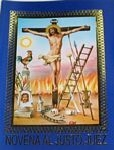
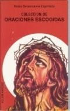
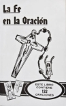
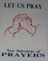
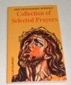
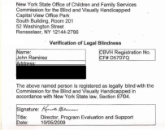

| 悪魔の大釜からの脱出 | |
| ジョン・ラミレス | |
| Lehighvalley Japanese Ministries Media (2014) | |
Out of the Devil's Cauldron
悪魔の大釜からの脱出
暗黒から光への旅路
ジョン・ラミレス著
リーハイバレー・ジャパニーズ・ミニストリーズ 翻訳・校正
大塚友子 翻訳
ロイド美代 校正
著作権者 ジョン・ラミレス 二〇一三年
著作権者の許諾なく著作物を利用することが法的に認められる場合を除き、無断で複製、公衆送信、配布等の利用をすることはできません。また、利用が認められる場合でも、著作者の許可無く変更、削除することを禁じます。
全ての日本語での聖書引用は口語訳新約聖書及び口語訳旧約聖書より引用。著者が引用した英語版はトーマス・ネルソン社の一九八二年発行の新欽定訳聖書。
発行元
リーハイバレー・ジャパニーズ・ミニストリーズ
ペンシルバニア州、アメリカ合衆国
目次
僕はイエス・キリストのしもべであり、自分の証を書き、この本を出版することを勧め助けてくださった方々に深く感謝します。
何よりも、主イエス・キリストに感謝し、全ての栄光、誉れと賛美を主に捧げます。主無くしてはこの本が書かれることはなかったでしょう。
僕の教会である、タイムズ・スクエア・チャーチのデイビッド・ウィルカーソン牧師にも感謝します。デイビッド牧師と夜に帰路を共にしながら彼に言われた言葉や教えを受けたこと、そして、デイビッド牧師とそのような時間を持てたことをイエスに感謝します。絶大なる影響を受けた時でした。人生の中で心の底から感激したことが二度あります。初めはキリストとの出会い。そして二度目はデイビッド牧師、あなたでした。礼拝の後、あなたと共に帰路につき、家にたどり着いた時、あなたは私に「君の中にイエスが見える」という言葉をかけてくださいました。他にも違うことを言えたであろうに。神が私の人生で行ってくださったことをこの世に証言するように、とデイビッド牧師が勧めてくださったことにも感謝します。
僕の教会であるニューヨークのタイムズ・スクエア・チャーチの深みある説教や御言葉の教えは、助けが必要な時の僕の支えとなりました。タイムズ・スクエア・チャーチのカーター・コンロン主任牧師にも心から感謝します。カーター牧師、あなたのお気に入りの聖書の節を教えてくださってありがとう。自分も深く祝福され、詩編百十二編は自分のお気に入りにもなりました。この詩編を鏡に彫って家の中に飾ると言っていましたが、素晴らしいアイディアだと思います。
フロリダ州オーランドにあるチャンピオン・ミニストリーのアレクサンダー牧師、サンドラ・サラガ牧師にも感謝します。この人生において、神はたくさんの人間関係をもたらしてくれました。でも人生でこのような素敵な人たちに出会えたことに神の素晴らしさを実感します。神が用意してくれた人生を歩む上で、この二人が僕を弟子として受け入れてくれて、教え導いてくれたこと無しには今の自分は有り得ませんでした。この二人を僕の人生に送ってくださったことを主に感謝します。あなたたちは僕の人生で欠かせない存在です。
サンドラ牧師、あなたの企画力とクリエイティブな能力にも感謝します。アレクサンダー牧師、この本の表紙のデザインのアイディアをくださってありがとうございます。
また、僕の美しい娘アマンダを与えてくださった神に感謝します。この世のたくさんの女の子の中から、神は君を僕の娘として授けてくださいました。僕は君を娘に持てて本当に幸せです。
心から愛している僕の母親へも感謝します。あなたが僕の母親であるということを毎日神に感謝しています。あなたは母親としてだけでなく、父親としての役割も背負ってくれました。僕の人生において素晴らしいお手本を示してくれたことに感謝します。
アンジー・キースリングにも心から感謝します。神の力によって僕たちが巡り会い、僕の証を彼女が編集してくれました。僕が編集者を必要としており、どの編集者を頼って良いのかわからなかった時、主があなたを選んでくれました。あなたは才能ある優れた編集者というだけではなく、僕の大事な友人でもあります。
友人ホセ・ポンセとフリオ・ニエベスにも、キリストにおける真実の兄弟でいてくれたことに感謝します。僕は二人のことを心から愛しています。そしていつも二人が祈りによって僕を支えてくれたことにも神に感謝します。またピーター・トレスにも感謝します。朝の祈りの時に祭壇の前で何度となく顔を合わせたことや、共に神に仕えることができたことを感謝します。
また、オルガ・ロドリゲスが、神が僕の人生にもたらしてくれた証をタイプしてくれたことに感謝します。
僕のミニストリーを支え、証を紹介する場を与えてくれた全ての教会、ラジオ局、テレビ局、大学、高校に感謝します。
そして僕の人生に奇跡をもたらした神が、この本を購入してくれた読者の方々の人生も変えるであろうことに感謝します。
僕は熱心なサンテリア、エスピリティズモの崇拝者であり、そしてタタと呼ばれるパロ・マヨンベ教における高位の祭司で魔術師でもありました。それを僕たちは「宗教」と呼び、二十五年間、僕は何も知らずに言葉では言い尽くせないほど邪悪なものの奴隷となっていたのでした。そのおぞましいカルトは、神を崇拝するように見せかけて、実は人を憎しみ殺すように教え、僕自身も神に仕えているのだとずっと騙されていたのです。でもある日、聖霊がその嘘を暴き、僕が何年間も見ることのできなかった真実を見せてくださいました。しかし自分の力ではその宗教から抜け出すことができず（抜け出そうとしたものは命を脅かされ、やがて殺される）、神を愛していると言いふらすカルトのメンバーを尊敬し、同じことをし続けていたのでした。しかしある日奇跡が起こり、聖書の使徒パウロのように僕は自由の身となったのです。
ところが、道を急いでダマスコの近くに来た時、突然、天から光がさして、彼をめぐり照した。彼は地に倒れたが、その時「サウロ、サウロ、なぜわたしを迫害するのか」と呼びかける声を聞いた。そこで彼は「主よ、あなたは、どなたですか」と尋ねた。すると答があった、「わたしは、あなたが迫害しているイエスである。抵抗しているのもつらいだろう」サウロは驚き震えながら聞いた。「主よ、わたしは何をしたらよいのですか？」「さあ立って、町にはいって行きなさい。そうすれば、そこであなたのなすべき事が告げられるであろう」。―使徒行伝九章三～六節（六節一部の和訳は翻訳者が付けたし）
まさにこのように僕はイエス･キリストの十字架によって脱出したのです。サタンに永遠の地獄に引きずられていた自分をキリストは解放してくれたのです。これは僕の証です。
僕は人通りの多い交差点で立ち止まり、寒さを紛らわすために足を動かした。自分の吐く息が、冷たい空気の中に煙のように散っていくのを眺めていた。気温は氷点下五、六度くらいの寒さだったが、いつもこの時間帯のブロンクスのキャッスル・ヒルを抜ける中央通りは、人通りで一杯だった。鼻先を勢いよく通り過ぎていく車にも全く気づかない様子で、小さな子供たちが道端で遊んでいた。あるドライバーはクラクションを鳴らして他のドライバーを罵っており、警察のパトカーがサイレンを鳴らしながら、立ち往生した車の中をジグザグに走りぬけて行った。「ああ愛おしき我が故郷」と皮肉な思いで考えていると信号が変わった。
「ジョン、元気かよ？」という声が聞こえた。見ると、駅の近くのステップインという名のバーで見たことのある顔が、床屋のドアにもたれかかって立っていた。
「まあまあ、ってところさ」と返事を返した。互いに手を叩き合って挨拶すると、必要以上の会話をしたくない僕は、すぐさま道角を曲りその場から去った。
キャッスル・ヒルを吹き抜ける冷たい風が顔に吹きつけ、思わずウールのコートの襟を立てた。冬の寒さは身体を引き締めてくれるのだが、どうも嫌な予感がしてそれが頭から離れなかった。ふと見上げると、ヒスパニック系の老女が店の前に立って僕を見つめており、僕が鋭い眼差しで見返すと、彼女は怯えたように手で十字を切って、ドアの鈴を鳴らしながら店の中にあたふたと入って行った。
『伯母の家に行きなさい』前にも感じた思いが、いっそう強くよみがえってきた。間違いない。霊が僕に話しかけている。『伯母の家に行きなさい』。行くのを止めようと思っていたのだが、ちょっとだけ顔を出すことにした。方向を変え、中央通りを避けながら今来た道を戻り、マリア伯母さんの木造三階建ての家に数分で着いた。ドアのベルを鳴らし、少し待ってからもう一度鳴らした。三回鳴らした後も返事がないので、家に誰も居ないのかと思ったが、地下室のドアをノックしろと何かに言われたような気がした。鎖がかかった門を通り抜けて地下室のドアのほうに降りていき、ノックをしようと思った時、ドアがわずかに開いていることに気が付いた。
部屋には幾度となく感じたことのある不気味な空気が立ちこめており、魔術の儀式が行われている最中だということがすぐわかった。暗闇の中で、僕の伯母と、ある男性ともう一人の女性が、メサ・ブランカといわれる魔術や占いをする白テーブルを囲んで座っていた。テーブルの前の床に目を落とすと、チョークで不思議なシンボルが描かれており、そのシンボルの上に火が灯ったロウソクが置かれていて、まるで床が燃えているように見えた。テーブルの奥に座っている男性をよく見ると、背丈は低いががっちりした体格で、バイカーのように頭にバンダナを結んでいた。彼の長い黒髪は、石炭のように黒い瞳と同じ色で、その鋭い目で僕を射るように見た。彼が誰なのかはわからなかったが、この集まりを仕切っているのが彼だということがわかった。彼の不思議なオーラには人を魅了するものがあったからだ。
占いの邪魔にならないように伯母が僕を手招きした。儀式が進行する中、僕は床のシンボルを見つめながら、鉛のような重さで部屋を覆う魔力に圧倒されていた。魔術というものは、僕にとって決して珍しいものではなかった。僕は十歳の時から呪いをかけはじめ、その力は次第に増していたのだった。しかしこの男性が放つエネルギーは、今まで感じたことのないほど強烈で、何としてでも彼のような力を手に入れたくなった。
彼がこの宗教について様々なことを説明しているのにじっと耳を傾けていたが、しまいに好奇心が勝ってしまい、僕は思わず口を開いた。
「何が起こっているの？」僕はマリア伯母さんに聞いた。
「彼はパロ・マヨンベだよ」と言いながら、伯母は彼女の頭に被った白いバンダナの中に白髪混じりの髪を押し込んだ。伯母がそう答えると、この男性も僕のほうを向いて、僕の将来を予言し始めた。ジャックハンマーで胸を打たれたように僕の心臓が高鳴った。
「この青年はあなたの右腕となり、このオカルトでも最も信心深い者になるだろう」とその男は伯母に言い、言葉の余韻をかみ締めるように僕の目をじっと見据えた。
「彼はとても強力な魔術師になり、この宗教でも最高格にのし上がるだろう。彼はその力を備えており、パロ・マヨンベへの忠誠心もあるので、来月にある新参者のための儀式の最初のグループに参加させなさい」
マリア伯母さんの目が感激で大きく見開き、顔には大きな笑顔が現れた。僕たちはその時、想像を絶するものに僕が任命されたことを認識した。自分の甥が多大なる力を持ち、ブロンクス地区の霊界を支配するようになるのだ。
その日の午後は僕の人生の分岐点となった。僕が霊界で昇格され、今までに知らなかった力を手に入れることができると知ったのだ。
悪魔との契約
祭司となるための儀式は二週間後にマリア伯母さんの家の地下室にて行われた。歩いて彼女の家まで行くと、コンガのリズムを夜の空気の中に感じた。この宗教の古株の祭司たちが、儀式を見物するために集まっており、何かを唱えて精霊を招いていた。時は一九九七年二月の夜、これから起こりうる儀式のための霊的な空気を整えていたのだ。
地下室への扉を開けると、限られた人しか見ることのできない世界に招き込まれた。伯母の地下室は儀式部屋と化しており、魔術の儀式に必要なものが飾られていた。チラチラと燃えるロウソクの火は壁に不思議な影を落とし、十七本の木の枝が床に置いてあり、儀式に参加する者は一人一人、それぞれの枝の上に座るのだった。部屋の隅には、二十か三十羽はいるだろう雄鶏が手作りの籠の中で鳴いていた。それが何のためなのか僕は知っていた。
真夜中が近づくと音楽がよりけたたましくなり、悪魔を招く歌も強烈になっていった。僕たちを地下室の違う場所に移動させるようにと誰かが指示すると、助手のような人たちが現れ、僕たちを祭壇らしき所の前まで連れて行き、そこで僕らは肩が触れ合うくらいぴったりと寄りそって立った。悪霊たちの存在が手に取るようにはっきりとわかり、ドラムの鼓動が最高潮に達すると、人間の理解を超えた何かが重く部屋の中に降臨してきた。呪文の詠唱はスペイン語とアフリカの言語で行われていたが、悪魔を呼び出しているということがはっきりとわかった。
それはナフンベという名の悪魔だった。
僕の額から汗が吹き出し、恐怖と興奮が自分の中で渦巻いた。真夜中の五分前にタタと呼ばれる大祭司が僕の前にやってきて何かの呪文を唱え、これから交わされる契約について語り始めた。彼は僕を最初に選び、かみそりで僕の肌に切り込みを入れ始めた。血が滴り、自分が契約を交わしたのだということを知った。
その夜儀式に出た十七人のうち、悪魔は僕だけをタタとして任命し、僕は大祭司になる使命を受けたのだった。他の十六人とは違い、ゴッドファザーといわれる教父は、星形五角形のペンタグラムを僕の右腕に彫り込んだ。タタとして特別選ばれるということがいかに稀なことかを大祭司たちは口々に言い、誇りに満ちた僕は頭を高く上げた。悪魔の印が僕の体に刻まれたのだ。
翌朝、昨夜の儀式のせいで血にまみれて腫れぼったいまま目が覚めた僕はトイレに行った。外はまだ暗く静かだったが、地下室の小窓から覗くと夜明けが近いことがわかった。トイレの電気をつけ、自分の姿を見るため鏡に近づいた。
鏡の中から自分を見つめる顔は別の人間だった。僕を見つめ返す黒い目は、見たことのない目だった。パロ・マヨンベ教の大祭司、パレロ・タタとして僕は生まれ変わったのだ。
血が煮え返るくらい怒りにかられた僕は、父親を探しにバーに踏み込んで行くと、煙が充満した部屋を見渡した。家にいるか白タクを運転している以外はどこにいるかって？父親がここにいるのは間違いなかった。思った通り彼はいて、カウンター席に座り、黒髪でピチピチのシャツを着た女にもたれかかっていた。彼は微笑んで声高らかに笑っており、僕の母親のことなんか全く念頭には無いのが明らかだった。
バーの反対側で何かが動くのが視界に入った。見たことのない男が、拳を握り締めながら僕の父親のことを睨んでおり、離れた場所からでもその男が物凄い嫉妬心と怒りに駆られているのがわかった。
その男はコートの内ポケットに手をやり、僕はその瞬間何が起こっているのかを悟った。それは長い間、誰かがやってくれないかと僕が静かに願っていたこと、僕の父親を殺すことだった。
二発弾が放たれたのが聞こえると、僕の父親は木の床に滑り落ちた。その男は近づいてきて、銃の中の残り弾を父親の冷たく醜い心臓に更に打ち込んだのだった。撃たれた跡から煙が立ち、父親が死んでいく中、その男の背後にいた僕は父に近づいて彼の顔を見下ろした。父は目を大きく見開いていた。彼の魂の糸が切れていく中、もっと母親と家族に愛情をかけて面倒をみるべきだったのに、と僕は父に言った。本当に少しだけでもよかった。そうしたらまだ幼い長男が昼も夜も父親の死を願ったり、その望みが最後に叶うのを見届ける必要もなかったのだ。
「引き金を引いたのが僕だったらよかったのに」という言葉が、父親が最後に聞いた僕からの言葉だった。
＊＊＊＊＊＊＊＊＊＊＊＊＊＊＊＊
パトカーのサイレンの音で目を覚ました僕は、冷や汗をかいて震えながらベッドからとっさに身を起こした。夢 ― そう、ただの夢だったのだ。僕が十三歳になった年に父親が殺され、それ以来同じ夢を何度も見るのだった。このみすぼらしいアパートの窓の外で起こっている南ブロンクスの騒動の中、弟たちは静かに寝息を立てながら眠っていた。部屋の中は相変わらず凍てつくような寒さだったが、そんなのにはもう慣れていた。眠れない僕は窓際に立ち外を眺めた。近所のチンピラが道端のドラム缶に火をつけ、そのまわりに集まって暖を取っていた。二台目のパトカーが、僕を悪夢から起こした一台目を追うように、けたたましく走っていった。
何でこんなところにいるんだろう？僕は思った。僕はプエルト・リコで生まれ、四人兄弟の長男としてブロンクスで育った。プエルト・リコのカリブ海の島で、美しい太陽の光と椰子の木、暖かなそよ風、クリスタルのような海に囲まれた暮らしから、残酷で道路も寒々とした南ブロンクスに移ってきたのだ。子供のころアパートの上階にある窓の格子に腕をからませて、目下に広がるコンクリートと窓ガラスとレンガでできた数々の建物や散乱したゴミを眺めていた。幼い時から芸術家のような心をもった少年だったが、目の前に広がる光景には芸術や美しさのかけらも無かった。ただ見えるのは果てしなく広がる荒廃だけだった。
優しく陽気な少年だった僕は、幼い時からいつも母親や弟たちの手助けをしていた。母親が僕のことを愛しているということは知っていたし、それはとても大事なことだった。でも僕が本当に必要としていたのは、父親からの愛情や、彼に認めてもらうということだったのだ。それは少年が成長していく上で、誰もが必要とするものである。父親が僕の生活の中に入ってきて、僕を褒めてくれたり愛情をかけてくれたりすることをいつも夢見ていたが、そういうことは皆無だった。
家を空けがちの父親は、家の外には無数の女性がいて、いつも飲み屋で喧嘩しては飲んだくれながら怒り狂うのだった。彼の余りにも行き過ぎた行動は、彼自身の首を絞めているようでもあり、僕たちを悲しませた。
繁栄や祝福や幸せを求める、という家族として当たり前のはずの生活が父親のせいでぶち壊され、幼いながらに煮えくり返るような怒りを彼に抱いていたのだ。
そして母親や家族に対する彼の無神経で残酷な行動は年々ひどくなり、心優しい少年だった僕も怒りに満ちた青年へと変わっていった。時が経つにつれ、自分の世界観がどんどん暗くなり、優しかった心も石のように冷たく固くなっていったのだった。
ほろ苦いビッグ・アップル（ニューヨーク）
僕の母親、エスター・マルティネスは、彼女がまだほんの十六歳の時、エウスタキオ・ラミレスとプエルト・リコのサントゥルセで結婚した。その年、一九六三年の十二月に僕が生まれ、翌年僕の弟フリオが生まれた。僕たちはプエルト・リコのリオ・ピエドラにもう一年住んだ後、双方の両親達とともにアメリカに移り住んだのだった。
アメリカに来て間もなくジョージとエウスタキオ・ジュニアが生まれ、次第に僕たちの生活も苦しくなっていった。僕たちの家族はニューヨークで生活するという現実を全く知らないまま来てしまった、ということに自分が大きくなってから気が付いた。ニューヨークは、より良い人生をスタートするのには最高の場所であった。この希望に満ちた街、マンハッタン島は、僕たちの住む南ブロンクスからはほんの目と鼻の先のような距離だったが、実際は全くかけ離れた世界であり、僕らはいつも時代に取り残されたように感じていた。アパートという名の牢獄で見えない鉄格子に囲まれ、終わりなき悪夢のような生活に囚われていたのだった。
僕たちの生活の現実は本当に悪夢のようであり、家族を導くはずの父親は、家や僕たちの暮らしからいつも逃避していた。でも、ごくたまに、生活のために運転していた白タクを停めて家に帰ってくることもあった。玄関の鍵の音がガチャガチャと聞こえたかと思うと、ドアが開いて父親が現れ「パピが家に帰った！」と弟の誰かが叫ぶのだ。射るような目をした黒髪の父親は、若くてハンサムだった。すると部屋着にいつもエプロンを付けた母親がいそいそと現れ、父親が家を空けていた時の怒りもどこかに消え、彼女の心に喜びが戻るのだった。
そして父親は、まるで今まで家にずっといたかのように、台所に入って行ってつまみ食いをするのだった。
「うちの息子たちはおかしいんじゃないか？」父親は、小さな居間と狭い台所の間に立っている僕たちを指差して母親に文句を言った。
「エウスタキオ、うちの息子たちはみな良い子よ。何でそんなこと言うの？」母親が黄色いイエローライスを料理している鍋をかき混ぜながら言った。
「この子たちが良い子だったら、道で俺に会った時、こいつらの従兄弟たちみたいに、俺に挨拶して祝福を請うのが筋じゃないか？」父親は言った。
「『叔父さん祝福してください』ってあいつらはいつも言ってくるよ。でもうちの子たちがそう言ってきたことがあるか？一度もない。こいつらはお菓子を買う金が欲しいだけさ」
四人兄弟の長男としてあたかも僕が皆を代表して返事でもしなければならないかのように、父親は僕のほうを睨んだ。苦しみと嫌悪感が心の中で渦巻いたが、僕が何を言ってもどうにもならないことはわかっていた。やがて父親は居間に行くと、酔っ払ってソファーに沈み込んで眠ってしまうのだった。
僕たちは彼の家族であるにも関わらず、翌日酔いが覚めた時でさえも、父の気持ちは僕たちから遠く離れ、彼の心はここにあらずということがほとんどだった。父親としてではなく、まるで皇族が訪問しているかのような客人扱いを期待しているようであり、皆は腫れ物に触るように父親に接した。それでも彼を喜ばせようと努力したり、皆一生懸命自分たちの暮らしの中に彼の居場所を作ってあげようとしたのだ。
母親は多分、ここ二、三日、或いは数週間に起こった出来事を父親に伝えたかっただろう。僕ら子供たちは、野球の試合で勝ったことや、バスケットボールの話、放課後起こったことを父親と話したくてうずうずしていた。カッコいい車を見たことや、好きな女の子の話や、面白い冗談を話したくてはち切れそうなのに、大抵皆口を開くのを恐れて沈黙の中で食事をした。
まるで父親の周りには扉のない有刺鉄線が張り巡らされているようで、中に入ろうとフェンスをよじ登ろうとする人は痛い目にあうのだった。時に彼はレンガの壁のようでもあり、彼の感情は壁の内側に隠されていて、彼が本当の喜びや愛情を表現することはなく、僕たちにもその壁をぶち破ることができなかった。
父親がどういう人間なのかを知ることもなく、僕たちのことを好きなのかもわからず、そうでなければなぜ僕たちを嫌っているのかもわからなかった。他の少年たちは父親と公園に行ったり、ボールを打ったり、キャッチボールをしたり、スポーツの話をしたりして、よその父親たちも熱心に子供たちと話をしたり、肩を叩いたり、息子たちと一緒に歩きながら話をしたり笑ったりしているのだ。僕も父親とそういう時間を持つことを心から欲していた。でも僕がどんなに努力しても、彼は僕を突き放し「バカ野郎」と言うだけだった。「バカ野郎」は、まさに子供の心を傷つける言葉のひとつであった。
父親は、彼の悪態がどれだけ皆を傷つけているかを全く気にしてないようだった。まるでわざと僕らを失望させ、批判し、見下した口調で物を言っているようで、僕らが父親を喜ばせることは全く不可能だった。僕は自分が大きくなって父親になったら、絶対彼のようにはならないと自分に誓った。彼のことが大嫌いだったし、彼が自分の父親だと人に言うのも恥ずかしいくらいだった。
でもごくたまに、彼が僕に目をかけてくれて、ほんの少しだけでも彼が愛情を傾けてくれること、そして父親自身もかつては少年であったことを思い出してくれることを夢に見た。いつか一人前の大人になる僕のために、手本になりたいと父親は思っているのだろうか、と。しかし、彼が僕に良い印象を残したことは全く無かった。歪んで醜い、そして不思議な空白だけが思い出として残った。僕が見習える姿を父親が手本として見せることは無く、自分を流し込む型、自分のモデルとなるものが全く無かったのだ。
父親はよく僕たちに空約束をし、僕たちもバカみたいにそれを毎回信じたのだった。
「おい、ジョン」、と父親はビールを片手にソファーのところから僕を呼んだ。
「今週末、仕事が終わったらお前たちをコニー・アイランド遊園地に連れて行ってやるぞ。どうだ？」
彼の笑顔は誠実そうに見え、僕は父親の言葉を信じた。
「遊園地に行きたいか？もし行きたかったら、今週お母さんの言うことをよく聞いて、土曜日に乗り物に乗りに行くぞ」
でも土曜日になると父親の影すら見当たらなかった。また僕らの暮らしから逃げ出して、何日も、或いは何週間も帰ってこないのだった。
そんな家族をまとめていたのは母親だった。若くして子供を四人も抱えながらも、雑用をこなし、皆で必要な場所に出かけたりと、とにかく大変だった。母親は高等教育を受けておらず、家事以外の仕事の経験を持たないため、僕たちは公共の補助や生活保護など、他からの援助のみを頼って生活していた。どんなに掻き集めたものでもほんの一、二週間で無くなるのだが、それでも僕たちは何とか生活していた。たまに、父親が一週間の食費として二十ドルを母親に渡すことがあったが、それはその当時でも全然足りない金額だった。もっと酷い時もあった。ある時、僕は台所に行って愕然として足を止めた。カウンターの上に食費と雑費用にと父親が残していった五ドル札があったのだ。妻と成長盛りの四人の男の子たちのために五ドル。小学生の算数力でも、五ドルを五人で割ったら（父親が帰って来た時は六人）、一人当たり一ドル以下で生活しろ、という意味であるのがわかった。一九六〇年代後半から七〇年代初頭でも、そんなのは何の足しにもならない金額であることは知っていた。母親は、米、豆、ジャガイモなど基本的な食料を使いこなし、僕らはなんとか食いつないでいたのだ。でも彼女がどんなに上手に工夫しても、五ドルとは嫌味以外何物でもなかった。僕らが一週間生きのびるために父親が残した金額は援助というよりは侮辱であった。
「五ドル？家族を食べさせるのに足りないわよ」
母親はそう言って懇願し、心配のあまり眉間にしわをよせた。
「だったらその五ドルを水にふやかして、増量させたらどうだ？」
父親は自分の冗談に笑いながら、肩越しに振り返り、そう返事をした。そんな風に彼は、僕たちに満たされない生活を強い、母親や僕たち家族を侮辱して支配するのだった。
神様、どこにいるの？
他の人たちのように、僕の父親もエスピリティズモに関わっており、暗くした部屋でロウソクに火を灯し、何かを詠唱して不思議な儀式を神々に捧げていた。父親にとってこれは彼の文化の一つだった。ある日の午後の夕暮れ時、アパートの廊下を歩いていると、父親が何かを詠唱する声が寝室から聞こえてきた。そうっと扉に近づいて隙間から覗くと、手作りの祭壇の前でロウソクの光に照らされている彼の姿があった。父親のお気に入りの聖人、聖ラサロのために祈りを詠唱する姿は怖くもあったが、魅力的にも見えた。
彼はよく僕に五ドル札を握らせて、近所にあるボタニカと言われる魔術の品々を扱う店に、聖ラサロに捧げるオレンジのロウソクと花束を買うためにお使いに行かせた。多分、自分の子供たちよりも聖ラサロのことをもっと愛していたのだろう。「急いで行け。金無くすなよ」という彼の言葉が今でも聞こえてくるようである。僕は地獄から放たれたコウモリのように階段を駆け降り、息を切らしながらアパートの建物の入り口に座っている人たちの間を走り抜けた。車の交通量が多い道を駆け抜け、お金をしっかりと握り締めて目的地に走り、僕は父親が言ったものがあることを祈りながらボタニカに駆け込むのだった。でも品物が売り切れている時、がっかりした父親は、その怒りを僕にぶつけるのが常だった。
僕たちの家族は、多くのヒスパニック系の家族のように、近所のカトリックの教会へ行くことは一度もなかった。でも十字架にはりつけになったキリスト受難の像を見たことはあったし、イエスの絵を見たこともあった。そして人々が彼を「神様」と呼ぶのも聞いていた。でも彼が本当に神ならば、なぜ僕の人生に現れてくれないのだろう？なぜ弟たちや僕、そして耐えて苦しむ母親が、父の手で傷つけられるのを黙認しているのだろう？そんな思いが込み上げてくるのだが、僕はそれを直ぐに拭い去るのだった。そのことを考えるだけでも辛すぎたのだ。
ある日の午後、校庭に遊びに行こうと僕が道を歩いていると、大きな音楽が聞こえてきた。何の騒動かと興味深く思い、近くに行って見ると大きな赤いテントが張ってあり、ある教会による礼拝がそこで行われていたのだ。キーボードを弾く人に合わせて合唱団がテントの後ろのほうで歌っていた。リズムに合わせて体を揺らしながらイエスの歌を大きな声で歌っていたのだ。少し離れたところに立ち止まって、僕はつかの間音楽に聞き入った。心が動かされたような感じがした。言葉では言い表せない何か特別なことがこの場所で起こっていることを本能的に感じた。合唱団が歌い続ける中、ある男性がステージから降りてきて、人々の額を触っていった。彼に触られた人は皆地面に倒れ込み、仰向けになって眠っているようであった。平穏に満ち足りた表情で横たわっている人たちを見て、僕も同じものが欲しくなった。言葉では言い表せない愛をその場に感じたのだ。
まるで何かの合図でもあったかのように、そのイベントを率いる男性が僕のほうにも近づいてきて、僕の鼓動が速くなった。その男性は僕の周りにいる群衆に一人ずつ触って行き、僕のすぐ横に立っている男の人にも触れ、その男性は倒れて仰向けになった。その表情には何か幸せそうなものが見えた。僕がずっと欲しいと思っていた特別な何かがあったのだ。僕は期待に満ちて見上げ、その牧師が僕にも触れてくれるのを待った。ところが、牧師は僕を素通りすると、違う群衆のほうに行ってしまったのだ。僕は心が砕けそうになりながら、誰からも好かれない誰からも愛されていないような気持ちになりその場を去った。何で僕のために祈ってくれないのだろう？何で僕に触ってくれないのだろう？結局、神さえ僕のことを愛してくれてはいないんだ、という答えが僕の頭をよぎったのだった。
僕の敵は、僕の父親
父親が家に帰ってくる夜は、ほぼ毎度のごとく、彼は底無しに酔っ払っており怒りに満ちていた。そして、何の理由が無くても、或いはちょっとしたことが原因で母親を殴ったりしたのだが、僕たち兄弟は自分たちの部屋に隠れて、恐怖で震えているしかなかった。僕らはほんの子供だったのだ。僕は唇をかみ締めて、聞こえてくる叫び声や父が殴るのを止めてくれるよう神に懇願したのだった。
ある夜、母親の叫び声で僕は深い眠りから引きずり起こされるように目が覚めた。寝ていた二段ベッドの上から飛び降り、僕は廊下に向かった。胃が縮むような思いをしながら台所に近づくとガラスが割れる音が響いた。夜中の二時に酔って帰宅した父親は、料理の支度をして待っているようにと母親に食事を要求していたのだ。
「お前は何にもできないのか！何でお前のような奴といるのかわからないぜ」
父親は怒鳴りながら投げるものを探した。母親は泣きながら夕食を並べようとしていた。彼女が午後に何時間もかけて作ったものだった。突然、温められた豆、ご飯、トマトとチキン、プランタン（バナナの一種）が宙に舞った。父親が皿を壁に投げつけたのだ。
「エウスタキオ、止めてぇ！」
母親が泣き叫び、僕は父の顔が変わるのを見た。酒びたりの脳みその中で、何かのスイッチが入り、母親の叫び声によって、彼の中の猛獣が目覚めたのだ。
父親は母親の髪の毛を掴むと彼女を容赦なく殴り始めた。殴られて、履いていた靴も吹っ飛んだ母親は、何とか父の手から逃れると、裸足で廊下を走り恐怖のあまり寝室に逃げ込んだ。母親はドアの鍵をかけようとしたのだが、それは無駄な努力に終わった。父親はドアをぶち壊し、彼女を殴り続け、彼女の叫び声は次第に大きくなっていった。僕はほんの子供だったが、母親を助けなければと思い、部屋に駆け込んで父親の背中に飛びつくと、母親への暴力を止めさせようとした。彼は振り向くと、炎のように怒りに満ちた目で僕を睨みながら罵った。彼が乱暴に僕を払いのけると、僕の身体は部屋の反対側に吹っ飛ばされた。壊れたものが散乱している中、床に叩きつけられた僕は、身も心も傷つき、怒りを感じながらも自分の非力さを痛感し、母親が殴られるのをただ眺めるしかなかった。
とうとう朝の四時になると彼の怒りもおさまり、父が眠りにつくと、うちの中には気味悪い静寂が戻った。恐怖と怒りに震えながら僕も自分のベッドに戻り、もう一度眠ろうとした。あと三時間すると、起きて服を着て、まるで何もなかったように学校に行かなければならない。世間には強がった顔を見せて、家での生活が生き地獄であることを隠さなければならなかったのだ。
夜になって僕は自分のアザを確認しながら、母親の怪我のことを心配した。父親がどんどん強くなっていくようで嫌だった。あの夜初めて父親の死を願った。その時は知らなかったが、後にその願いは叶うのだった。
僕らの生活はいつも暴力沙汰に囲まれ、上向くどころか、らせん階段を降りるようにどんどん奈落の底へと落ちていった。父親はいっそう家族をほったらかしにし、家庭の経済状態もますます悪化し続け、僕たちはブロンクスの中を転々と住み歩いた。その当時のスラム街の家主は建物の修繕などはせず、南ブロンクスのスラム街の道はゴミが散乱していることで有名だった。他の地区に住む人たちは、誰もブロンクスには来たがらず、まるで荒れ果てた戦場のようであった。
不正直な大家たちは保険金目当てに自分たちの建物に火をつけ、その地帯は「燃え尽きたブロンクス」と呼ばれた。スラムの大家が不動産を現金化しようと火をつけ、夜になると空がオレンジ色に染まった。かつて三十世帯入っていた狭い薄汚いアパートは、状態があまりにも酷いため住民が皆いなくなり、残ったのは三家族だけであった。そしてその一世帯が僕らの家族だった。
冬になっても僕らの建物にはお湯も暖房も無く、僕たち兄弟は服を着たままセーターとコートを着て、襟巻きに手袋をはめて夜眠った。寒い部屋の中で身を寄せ合ったが空気は冷たく、まるで外でキャンプしているようであった。自分たちが吐く息までも冷たい中で、僕らは眠ろうと努力した。
あまりにも惨めな状態を恥じながらも、行くところがない僕たちはそのアパートにしがみつくように住んでいた。近所のチンピラたちが、空だと思って僕らの建物に火をつけたりしないよう、僕たち兄弟は順番に夜起きて窓際で見張りをするのだった。
窓際に立ちながら、眠さで目頭が重くなってくるのだが、僕は我慢して外を見つめた。何かが動く気配やガラスが壊れる音などに気を配り、近所の悪者たちがやって来て憂さ晴らしに悪さをしないかどうか見張った。時計を見ると暗闇で長針がうっすらと光り、一時、二時と時間を指していた。僕の見張り番は三時までだった。寒い夜、僕が窓際から外を眺めると、角の外灯の明かりが僕たちの寝室の窓から差し込んでいた。体は眠りを欲するのだが、家族が火事に巻き込まれないように一生懸命見張りをした。
ギャングたちは、僕たちの地区を含むブロンクスの中でも、それぞれ違う地区を管轄していた。ニューヨーク・リーパーズと呼ばれるギャングが僕たちの住む近所や裏道をパトロールしており、ライバルのギャングのメンバーたちが愚かにも僕たちの地区に入って来た時は流血沙汰になるのだったが、大抵は彼らなりのやり方で近所の住民の面倒を見てくれていた。
でもライバルのギャングがリーパーズの管轄に侵入してきた時には決戦になるのだった。
「おい、ちび」
リーパーズの一員が車のクラクションを鳴らして僕を呼び止めた。ゴテゴテに装飾されたシボレーのノヴァが、エンジンを吹かして排気管から音を立てながら車道の脇に停まっていた。消火栓の水をバケツ二杯分汲む手伝いをしながら、僕は目を上げた。バケツが一杯になったら、僕と弟のフリオが五階のアパートまで運ぶのだ。アパートの水道は止められているため、このようにバケツで水を運ぶ作業を今晩の仕度のために六、七回繰り返すのだった。僕は彼の声が聞こえない振りをした。そうすれば多分いなくなるだろう。
「よう、ちび、聞いてるか？」これ以上無視できなくなった僕は、無表情に彼の目を見た。
「今夜フライング・ダッチメンと決闘があるから、手伝い済ませて、家族の皆が十一時前には家にいるようにしろよ。聞こえたか？ダッチメン以外のけが人は出したくないからな」
彼は自分で言った冗談に笑いながら、きっちりと撫で付けた黒髪のポニーテールに触って言った。彼の指には、けんかには打ってつけのスパイクのような銀の指輪が光っていた。
僕はうなずいて作業に戻ったが、心臓の高鳴りを感じた。決闘とは恐ろしいものには違いないが、興奮を誘うものでもあった。ノヴァが音を立てながら角を曲って消えると僕はフリオに向かって叫んだ。
「フリオ、今夜決闘があるぞ！ママとジョージとエウスタキオにそう伝えろよ！」
弟はちょうど空バケツを二つ抱えて建物から出てくるところだった。またそれを一杯にして、五階に運び上がらなくてはならないのだ。
フリオは目を大きく見開いた。
「本当？何時？」
「十一時。ほら、ママに言いに行け。ママも買い物済ませなくちゃならないから。このバケツは僕がやるよ」
空のバケツを弟から受け取ると、弟が鉄砲弾のように建物の踊り場に走って行って、その中に消えて行くのを見た。
不気味な空気が近所の通りでも感じられた。電気が伝わるようにニュースが広まり、近所の母親たちはデリ・アヴェニューと一七九丁目沿いにあるひなびた商店に最後の買出しに急いだ。小さい子供たちは道端でふざけたホップ・スキップ・ダンスを踊り、車はクラクションを鳴らしたりと、ライバルのギャングたちとの決闘を予告するかのようであった。
十一時になると皆、準備万端だった。まるでチャンピオン決定戦のリングサイドの座席に座るように、寝室の格子が入っていない窓のところに僕たち兄弟は身を寄せ合った。
「ジョージ、フリオ、エウスタキオがあまり身を乗り出さないように見てろよ」
本当の父親が不在のため、僕は小さいながらも父親代わりのようになり、皆を守るかのように指示を出した。どの方向を見ても、近所の人たちが僕らのように窓から身を乗り出しているのが見えた。あとポップコーンとコーラさえあれば観戦を始める準備万端だった。表道や裏道のあちこちからかすかなざわめきが聞こえた。道には人気が無く、動くのは満杯になったゴミ箱の後ろを走り抜けるねずみくらいだった。
まるで合図に合わせるかのように、リーパーズが道や裏道、屋根の上などに現れてそれぞれの位置についた。皆、野球バットや鎖、ナイフ、マチェーテ、銃、レンガがつまったゴミ箱などを持っていた。フライング・ダッチメンが僕らの地区に車で入ってくると、屋根の上から争いの雄叫びが聞こえ、ライバルのギャングたちの車にレンガの雨が降った。道に配置されたリーパーズは、その車からライバルたちを引きずり出し容赦なく殴りかかった。リーパーズは野生の獣と化し、激しい格闘と、流血、そして怪我を負った男たちの叫び声が僕たちの眼下の道をうめた。
決闘は町の半径一区画内のみでおこなわれ、僕たち兄弟はそれを五階から食い入るように眺めた。五百人ほどのギャングたちが道路をメチャメチャにし、車の上に飛び乗ったり、互いを滅多打ちにしたり、闇夜に向かって銃を撃ったりした。今夜家には帰れそうもない、或いは明日の日の出を見ることがなさそうな者がただ道に転がっていたが、警察は一人も現れなかった。警察はギャングに対して怖れと畏敬の念を抱いており、決闘がいつ起こるかということも知っているようであった。一時間ほど野蛮行為が続き、血に飢えたものたちが満たされると、リーパーズは道端でビールを飲んだり、雄叫びをあげたりして勝利を祝った。フライング・ダッチメンの「制服」であるデニムのジャケットを敵から剥がし取り、地区の全ての街灯柱に結び付けることによって、リーパーズの勝利が宣言され、彼らへの仕返しが終わったのだ。
地区には不気味な静寂が戻り、唯一聞こえる音は街灯柱に結び付けられたデニムのジャケットがパタパタとなびく音だけだった。僕たち兄弟はベッドに潜り込み眠ろうとするのだが、アドレナリンで心臓がまだ高鳴っていた。寒い冬の夜に、本能的に自己防衛をしようとする体の自然な反応だった。
証明の地
暴力とは、まるで水滴のように周りにもしたたり落ちていくものだ。それは南ブロンクスで軍隊のような掟に従って住むギャングだけではなく、僕ら子供たちにも影響を及ぼした。暴力沙汰を避けて暮らしていても、暴力のほうが僕たちを探し出すのだ。近所のチンピラのようないじめっ子たちは、いつも新参者を狙い、僕と弟たちは引越しを繰り返していたため、その都度僕らの根性が試された。まるで時限爆弾のような近所のろくでなしたちは、いつも弱い者をいじめては自分たちが望むものを欲しいままに手に入れていたのだ。僕らは彼らと真っ向から戦うか、或いは彼らの言いなりになって言われた通りのことをするかのどちらかの選択をするしかなかった。そうでなければ、学校で給食用のお金が忽然と消えたり、殴られたり、アザや骨折を抱えて家に帰るのがおちだったのだ。
僕は奴らチンピラのようにはなりたくなかったので、言いなりにはならないことを選び、彼らには静かに対応しようとした。
「おいジョン！こっちへ来い」
学校から一人で帰宅していると声が聞こえた。ろくでなしのリーダー格のホセだった。彼らはいつもバスケットボールのコートの辺りでたむろしており、通り過ぎる女の子たちに口笛を吹いたり野次を飛ばしたりして、彼らのグループに属さない男子たちをいじめていた。
「いや、用事があるから」
僕は嘘をついて、いつもの水汲み以外にもやらなければならないことがあるような仕草を見せた。
「そんな簡単にお前を行かせるわけにはいかない」
そう言うとホセと五人の取り巻きがにじり寄って来た。今にも喧嘩を始めるのが本気であることを彼らの目が語っていた。
僕は力量を判断した。ホセはやっつけられる。あと、もう一人か二人。でも一対六はあまり勝ち目が無い。
ホセは僕が躊躇しているのを見て、ニヤリと意地の悪そうな笑みを見せた。
「俺らは店にいってお菓子を持ってこようと思っているんだが、お前も手を貸してくれるか？どうだ、ちびガキ？ジョンは俺たちの仲間に入る資格があるかな？」
彼の取り巻きもクスクス笑って僕の反応を見た。
ホセが僕にスナックやポテトチップ、缶の飲み物を万引きさせたがっていたのはわかっていた。もしやらなければ、根性無しと言われるのは目に見えていた。
ホセはジャケットからポケットナイフを取り出して爪の手入れをする振りをして、あえてそれが僕に見えるように光った銀色のナイフの刃を見せびらかした。
「返事が聞こえないぞ。おい、俺たちと来るか、それともお前は根性無しか？」
彼は僕の顔を見上げると憎しみのこもった眼差しを向けながら言い
「根性無しなら、お前の顔をぶん殴るからな。それにちょっと切り込みを入れるかも」
と言ってナイフを軽く投げた。
「怖くなんかないさ。ただそういうことで時間を無駄にするのが嫌なだけさ」
僕はホセの目を見て答えた。本当は万引きなんかして捕まって、このチンピラたちみたいに犯罪歴を作るのが嫌だったのだ。僕はこいつらみたいに刑務所なんかに行かないで、学校をきちんと卒業したかった。そんなことを思いながらも口からでた言葉は全く違うものだった。
「もちろんできるよ。でもただやりたくないだけさ。なんで僕を試すのさ？」
時間を稼ごうとする手段はホセのような奴には通じない。実際に行動を起こすまで、彼らは僕のことを放ってはおかないのだった。僕は捕まることなく、冷凍庫のアイスクリームと、棚からはポテトチップ、そして冷蔵庫のソーダ缶を盗んだ。またある日にはもっと高価なものを盗んだ。皆で店に入って行って、上着を何着か盗んだのだった。ホセは僕に一目置くようになったが僕は自尊心を失った。
万引きの後、足取り重く家に帰ると、父親の白タクがバーの前の道端に停めてあり、父親が綺麗な女性のために助手席のドアを開けているのを見た。新しい愛人か一晩だけの相手だろう。たまに、父は僕が見ているのに気付くと、変な表情で僕を見返した。まるで「男なんだからさ。ママには言うなよ」とでも言っているような顔だった。
憎悪で腹が煮えくり返った。何年にもわたって見放され虐待され続け、父親への憎しみはまるで研がれたナイフのように鋭くなっていった。もし彼が皆を守ってくれるような父親だったら、本当の父親らしい人間だったら、チンピラから身を守るために自分の自尊心を失くしてまでキャンディーを万引きしたりしないでも済んだかもしれない。僕たちの家族は「普通」の暮らしができたかもしれない。「普通」...これはラミレス家からいつもすり抜けていってしまう言葉だった。
薄氷の上を歩く
こんな惨めな生活の中でも、僕たち兄弟にとって母親はまるでヒーローのようであった。彼女は全てにおいて最善をつくし、僕たちのためなら何だってしてくれた。しかし父親の酒飲みはひどくなる一方で、彼は想像を絶するほど暴力的で野蛮になっていき、やがて金目の物や現金さえを僕たちから無心するようになっていった。時には、酒を買うために、母親が何ヶ月もかかってかき集めて貯めた小銭にも手をつけたり、彼が僕らの一週間の生活費として置いていったわずかなお金をまた取り返したりさえもするのだった。
父親が去った後も、緊張を解くことを怖れて、僕は息をひそめて歩いた。でもしばらくすると僕は安堵の息をもらし、この気がおかしくなるような暮らしの中にも、母親と兄弟たちとで秩序や一体感や小さな平穏を取り戻すのだったが、父親が戻って来てまた全てをぶち壊すのが常だった。
金銭的にもどんどん苦しくなっていった。新しいところへ引越しする資金を母親が貯めるのに幾年もかかったため、僕たちはスラム街にあるアパートで気が遠くなるくらいの歳月を過ごした。母親の心配に満ちた表情は、僕たち兄弟を悲しませた。彼女は僕たちに最高の暮らしを与えたかったのだが、それができないこともわかっていた。つらい境遇にも関わらず、僕たちの暮らしは母親からの愛情で満たされており、母親が僕らに注ぐ愛情は絶対に揺るがないものであった。でも、彼女は僕らの苦しみのもとである父親に不思議と縛られているようであり、彼に対しては全く非力であった。
ごくたまに、父親が僕たちに何かを買い与えてくれることがあったが、次に何か記憶に残るようなものを買ってくれるのは何ヶ月も先のことだった。年末やホリデーは、僕ら家族にとってはつらい時期だった。九月の新学期も、わずかな家計の予算に大きな負担をかけた。買うお金が無いため、僕たち兄弟は選択の余地無く昨年と同じ服やコートを着ていた。
「水位が上がったぞ」
学校のカフェテリアで昼食の列に並ぶ時、僕のズボンが短く靴から数インチ上がっているのを見て、それをバカにする子供もいた。
「それって、お前の弟の上着じゃないか？」
「袖が短いぞ」
他の奴も野次を飛ばした。僕は何でもないように振る舞っていたが、それらの言葉は心に深く刺さり、父親に対する怒りに更に火がつくのだった。
暗闇が呼んでいる
僕たち兄弟にとって、ハロウィーンがやって来ると、恒例のホリデーシーズンが始まるのだった。僕たちは、スーパーヒーロー、カウボーイ、ドラキュラ伯爵、狼男やお化けなどに一晩だけ仮装するのが大好きだった。家から家へと練り歩いて、キャラメルがかかったリンゴや果物をもらったり、チョコレートやキャンディー・コーンが入った袋を集めて回るのは本当に楽しかった。ある年は四人全員でハロウィーンの衣装を着て、またある年は家計が苦しいため、二人だけが仮装し、母親が残った二人の顔を絵の具で塗って、僕たちは首から上だけ鬼や悪魔になるのだった。
「ジョージ、フリオ、エウスタキオ、来いよ！」
僕は待ち切れなくて、アパートの玄関から皆を呼んだ。僕の顔は悪魔のように真っ赤に塗ってあり、頭には角を付けていた。さっきトイレに行った時、鏡に向かって微笑んで自分の姿を確認したばかりだ。目の周りも炭のように黒く塗ってあり、ちょっと怖くもあった。
母親がエウスタキオの手を引きながら廊下に出て来た。彼は、丈の長い吸血鬼の衣装につまずきそうになりながら歩いており、プラスチックのお面のせいで彼の喋る声がくぐもっていた。
「弟たちをしっかり見るのよ、わかった？皆遅くても八時半には戻ってくるのよ」
母親は僕を見ながら言った。
僕は母親と約束すると外に飛び出した。アパートの階段を二段飛ばしに降りて、一刻でも早く外に出ようとした。この夜ブロンクスの街頭は活気に満ちており、仮装した子供たちがにぎやかな道をあちこち行き来していた。普段道端に立っている売春婦たちも、いつものミニスカートと網タイツの出で立ちではなく、猫やプレイボーイのバニーガールのようなセクシーなハロウィーンの格好をしていた。僕たちは友達と合流して、最高のお菓子がもらえるらしいと近所で噂されているアパートへ向かった。
「あの家は絶対見なきゃ損だよ！」
友達のデイビッドが、バットマンの衣装で走ったため、息を切らしながら言った。
「あの家に住んでる女の人はお化け屋敷を...」
「何も言うな！僕も自分の目で見てみたいから」と僕はすかさず言い返した。
建物の中の階段を上がって行くと、不気味な音楽が流れており、呪文か何かを唱える深いしわがれ声が三階から聞こえてきた。心臓の鼓動が早くなった。三階に到着すると、そこの住民はドアの周りに、くもの巣や暗い照明、ぶら下がった骸骨、黒猫の人形などを飾り、まさに魔女の家のようであった。アパートのドアは開いており、暗い部屋から煙が出ていた。僕たちの足音を聞いたのか、魔女の格好をした人が叫びながら廊下に飛び出してくると甲高い声で笑い始めた。僕たちも叫びながら笑い始め、ハロウィーンの肝試しを楽しみ、その女性は僕たちにキャンディの入った袋をくれた。その夜僕はそのアパートに四回戻った。
僕は、暗く不思議に満ちた暗黒の世界にこの時から魅了され、不思議なことが僕の周りでも起こるようになっていった。無いはずのものが見えるようになり、というより、自然界では存在しないものが見えるようになっていった。何年も後、僕が魔術師、そしてサンテリアの高祭司になった時、自分の霊的な目があの時開眼されていたのだ、ということに気付いた。
ある晩、友達と道端で遊んだ後、僕は自分のアパートの建物に戻り、階段を上がろうとした。僕のアパートは三階にあり、最初の階段の踊り場の角を曲った時、二階の階段のところから漫画に出てくるような変な形の頭をした奇妙な女の人が突然現れたのだ。人のようにも見えたが、その女の頭はとてつもなく大きかった。おどけたような笑みを浮かべた奇形の頭が飛び出して来たのだ。僕の心臓は凍り付き、僕は一階に駆け戻った。十分ぐらい待ってまた戻ったが、僕が階段を上って行こうとすると、何度も何度も飛び出してきて、僕の行く手を阻むのだった。
長い黒髪に色白のその女はとても若く見えた。こんな女性をこの建物の中で一度も見かけたことが無かったし、気味の悪い感じがして何かがおかしいというのを直感的に感じた。この女の何かが奇妙だった。家に帰りたかったため、ロビーに走って戻り、一緒に階段を上ってあの怖い二階の階段の踊り場を一緒に歩いてくれる人を探した。
「すみません、助けてください」
ようやく男の人がロビーに入ってくると、僕はその人に声をかけた。彼は立ち止まって僕の言う二階にいる奇妙な女の話を聞いてくれた。彼は二階に上がり辺りを確認すると
「何にもいないぞ！変なものでも見たんじゃないか！」と下にいる僕に声をかけ、そのまま彼の目的の階まで上がって行ってしまった。
同じ建物の他の住民と一緒に階段を上がって、ようやく僕が家に戻れたのは一時間も後だった。もちろんあの奇妙な女は現れなかった。
またある夜、僕が祖母の家にいた時、家の裏窓から外を見ると赤いドレスを着た背の高い女が道を走りながら行ったり来たりしているのが見えた。ただその女は、実際走っているのではなく、宙に浮いていたのだ。凄い速さで飛ぶように行ったり来たりしながら、その女は僕の方を見て、あざ笑うかのように微笑むのだった。僕は恐怖に駆られて台所に駆け込んだ。
「おばあちゃん、早く来て。外に女の人がいる」
祖母の腕を引っ張りながら僕は言った。
「どういうこと、ジョニー、女の人ならこの近所には一杯いるわよ」
しかし僕の目を見て何かがおかしいと察した祖母は、直ぐに僕について居間にやって来た。
「しーっ、あの女の人を驚かせよう」
僕はカーテンの陰に隠れながらそう言うと、祖母にも同じく隠れるようにと合図をした。祖母は心配そうな顔をした。僕が何を見ているにせよ、それが僕に大きな影響を与えているのは明らかだった。僕はカーテンの端から覗き
「そこにいる！」
と小声で囁いたが、祖母がそこに目をやった時には既に遅く、宙に浮く女は視界から消えて赤い光のみが残っていた。幻影は僕のためだけに現れているようであり、他の人には見えないのであった。
数週間後のある日、僕らの建物の横の空き地で友達と遊ぶために外に出て、道を挟んだ建物の六階の窓に誰が一番多く石をぶつけることができるかと、友達と石投げ競争をしていた。トミーと僕は離れて立ち、「僕のほうが、命中率が高い」「いや僕だ」とからかい合っていた。そんなやり合いをしていると、突然空から何かが降ってきて僕の足元に落ちた。かがんで見ると、色鮮やかなビーズでできたインディアンのネックレスだった。僕は、トミーに見つかる前にすばやくそれを自分のポケットに突っ込んだ。もし見られたら、彼がネックレスを横取りしようとするのは目に見えていたからだ。
その瞬間、母親のような声が僕の名を呼ぶのが聞こえた。
「ママが呼んでる！」
僕はトミーにそう叫ぶと家に向かって走って行った。でも僕を呼んだのは母親ではなかった。何年も後、その声の主は、暗黒界から来て、空気のように辺りを徘徊する使い魔だということを知った。自分のアパートの建物の中に入ると、僕はネックレスにキスをして自分の首にかけた。『これはお前を守ってくれるよ』という言葉がとっさに頭に浮かんだ。二、三年後、魔術の道へ一歩を踏み出した時、僕の守護霊はタワタと名乗るインディアンのチーフだということを知った。この霊が空からネックレスを落としたのだ。僕がサンテリアという言葉を知る前から、闇の世界が僕を導き始めたのだった。
僕が知らないうちに霊界への扉が徐々に開かれていき、幼いがために何も知らなかった僕は父親的存在を探しながら、何を犠牲にすることになるかも知らず、どんどんその世界へと入って行った。
数ヵ月後、僕はリディア叔母さんの家に一晩泊まっていた。夜の十一時頃に、叔母さんは明日の朝のための牛乳を買いにお店にひとっ走りするよう僕に頼んできた。僕は靴を履いてお金をポケットに押し込むと、建物の階段を駆け降りて道に出た。大通りを渡って五ブロック離れているコンビニエンス・ストアに向かって早歩きし始めた。道端のあちこちでリーパーズがたむろしていたが、奴らを無視して歩き、牛乳を買うと叔母さんのアパートに向かってまたブロンクスの暗い道のりを歩き始めた。突然、何かに後をつけられているような嫌な気配を感じ、肩越しに後ろを振り返った。道を見渡すと、少し離れた街灯の下に青いシボレーの車が停まっていた。「父親の車みたい」と思いながら車に近づいた。近づけば近づくほど、父親の車のように見え、「パピの車だ」と思わず声に出して言った。近づくと、男がハンドルに突っ伏しているのが見えた。父親だった。僕は嬉しく思いながらも恐る恐る車の窓に近づき、軽くノックした。
「パピ、パピ、大丈夫？助けが必要？」
相当酔っ払っているのが明らかだった。酔っ払いすぎて運転できなくて、きっとどこに駐車しているのかもわかっていないのだろう。父親が車の窓を下ろすと、ほんの一瞬僕の心は高鳴り、父に対する哀れみも感じた。父と息子の絆を感じることができるかもしれない。今夜父親を助けることによって、父親に感謝され英雄になれるかもしれない。
「何やってんだバカ！ほっといてくれ！家に帰れ！」
父親は情けないほどのしどろもどろの口調だったが、彼の言う言葉は全部しっかりと聞き取れた。心が砕かれた思いで車から遠ざかった。僕がパピと呼ぶこの人が僕の父親であることは決してなかった。この晩、僕は彼のことを自分の思いから、心から、そして生活から拭い去った。あまりにも壊れてしまった僕は、父親の死を願った。その夜家に戻った僕は、違う少年となっていた。僕は愛情を探していたのだ。父親が息子に注ぐような愛情を。一体それはどこで見つけられるのだろう？
僕が十歳になった年のある日、父親の姉にあたるマリア伯母さんが僕の母親に電話をしてきて、タロットカード占いに一緒に行くようにと誘い、なぜか母親は僕を一緒に連れて行った。多分、未知の世界を体験する心の支えとして僕を連れて行ったのだろう。
トレモント・アヴェニューの近くの小道に入り、角の近くの白い二階建ての家の前で立ち止まった。窓に「タロットカード占い」というネオンのサインが出ていた。
中に入ると待合室には椅子が二、三脚置いてあり、ドアのところにはカーテンがかかっており、その奥には更に部屋があった。あの部屋で占いをするんだろう、と僕は思った。思ったとおり数分後にはその家の女性がカーテンの奥から出てきて、奥の部屋に僕らを招いた。
「こちらは私の義理の妹エスターと彼女の息子ジョンよ」
マリア伯母さんはその女性に僕らを紹介し、その女性は僕らを数秒見つめるとうなずいた。そしてマリア伯母さんに、奥部屋に用意されたカードが置かれたテーブルのところに座るように言った。カードのテーブルは白いテーブルクロスで覆われており、奥の壁際にある長いテーブルの上にはロウソク、十字架、カトリックの聖者の像、そして様々な「聖なる」小物が並べて置いてあった。
すぐさまクッキーと呼ばれるその女性は、マリア伯母さんのためにカード占いを始めた。その女性がカードを読みあげる間、僕は伯母さんの顔を見つめた。伯母さんは、子供の時から魔術的なことをやっていたのだが、彼女はそれを秘密にしていて家族は誰も知らなかったのだ。でも彼女の目に映る輝きは、彼女の素朴な外見の奥に実は秘めたパワーがあることを示していた。
クッキーと呼ばれるこの女性は占いが終わると、僕の母親にも占いをして欲しいかと聞いてきた。最初はためらっていたが、マリア伯母さんの後押しで母親も承諾した。断って義理の姉をがっかりさせたくなかったからだ。
母親の占いではクッキーは悪いことしか言わず、彼女の口から出てくる言葉に僕は思わず耳を疑った。
「あなたの夫は女好きね」
テーブルの上のカードを読みながら言った。
「あなたの結婚生活はひどいわね。それからあなたが若くして未亡人になるのが見えるわ」
僕は母親をそっと見た。占い師の言葉は的中し、それを聞く彼女の顔は全く無表情だった。クッキーはもう少し占いを続け、母親に苦悩の言葉を更に吐き続けた。そして僕のことも話し始めた。
「あなたの息子はもうすぐ視力を失います」
彼女は手を止め、カードをずっと見つめると、僕にその恐ろしげな目を向けた。
「この男の子のためにお清めをすぐしなければなりません。お清めをしなければ三十日以内に彼は視力を失います」
クッキーはその強烈な眼差しを母親に向けると言った。
「お清めの儀式は二百ドルです。遅れないように」
母親はパニックに陥った。彼女の綺麗な額にはビーズのような汗が吹き出し、僕の中で怒りが噴き上げてきた。こんなにも負担を背負って生きている母親の生活で、更に心配事が増えたからだ。母親は占いの女性に僕らが一週間以内に戻ることを約束した。
タロットカード占いの女性の家を後にした母親は、この日、暗黒界への扉が開かれ、その中へ僕らがまっしぐらに進んで行くことを知るよしもなかった。
魔術の世界へようこそ
母親が二百ドルも持っていない、ということはわかっていたが、父親に話してお金をもらうという考えはもってのほかだった。だから母親は息子を思う母親なら誰でもするであろうことをしたのだ。寝室用の家具セットを二百五十ドルで近所の人に売ったのだ。
一週間後、母親はタロットカード占い師のところに僕を連れて戻った。占い師は、サンテリアと呼ばれるオカルト宗教では位の高い女祭司で霊媒師だった。母親を待合室に残すと、クッキーという名の女性は僕を台所に連れて行き、様々な色のビーズをテーブルの上に並べて、お清めの儀式を始めた。それぞれのビーズは、この宗教を司る五神の霊を表していた。
台所で彼女と話をしていると、誰かが背後からやってきて僕に目隠しをし、僕をちがう部屋に連れて行った。そこで彼女たちは僕の服を脱がせ、僕にハーブや植物が入った水を浴びせた。僕は恐怖で震えていたがずっと黙っていた。どうして母親が、僕と一緒にこの不気味で恥ずかしい儀式の場に居てはいけないのか？次に何が起こるのかが全くわからなかった。
突然、女祭司と彼女の助手のような人が、オバタラ、イェマヤ、オチュン、チャンゴ、オーヤ、というサンテリアの五神のために歌いだした。目隠しで見えなかったが、二人でこの儀式を行っているのがわかった。その後、彼女たちは僕に白い服を着せ、また違う部屋に僕を連れて行くと、僕をその五神に捧げた。彼女たちは歌い終わると、僕に五つのビーズのネックレスくれて、それらを身に付けるようにと言った。それぞれの色が違う神を表しているのだ。彼女たちは僕に特別なお辞儀の仕方を教えると、五神の名前を言い、僕を受け入れてくれたことをそれぞれの神に感謝するように言った。
この儀式により、この二人の女はサンテリアにおける僕のゴッドマザーともいわれる教母となった。彼女たちは僕の頭に白いバンダナを巻くと、僕に七日間白い服しか着てはならないと言った。ようやく僕が母親のもとに返された時には、僕は今までの無垢な十歳の少年ではなくなっていた。サンテリアの世界が僕の現実となったのだ。エスピリティズモとサンテリアを司る守護霊たちが僕の人生を支配するようになっていった。僕は母親のものではなくなり、僕の力では止める事のできない凄まじい力を持った霊たちの所有物となってしまったのだ。そして彼らは父親を求めていた僕の心の空洞に入ってきたのだった。
この後、ゴッドマザーのどちらかが、毎週末僕をセントロと呼ばれるエスピリティズモの教会に連れて行き、メサ・ブランカという白テーブルで行う様々な魔術を僕に教え始めた。僕は、三十年、四十年、或いは五十年間サンテリアに人生を捧げてきた人たちから最高の教えを受けたのだった。彼らは自分たちを霊媒師と呼んでいた。毎週セントロに通いながら、僕は違う格の霊たちとのコミュニケーションの取り方、魔法のかけ方、この宗教へ人を勧誘する方法などを学んだ。その霊と言われるものたちは、今振り返ってみると、実は悪霊だったのだ。
魔術師の学校
セントロとは人間と超自然的な力が最も邪悪な形で融合するところである。僕は自分の体を悪霊に貸して、霊に取り憑かれる術を学んだ。クッキーの家の一階の大部屋に皆が集まる時は、折りたたみ式の椅子を全部白テーブルの方向に向けて並べ、六十人ぐらいの人が集まった。ある金曜日の夜、マリア伯母さんが初めて僕をこの集まりに連れて行った。部屋の中に入り、薄暗いロウソクの灯かりに目が慣れると背筋に悪寒が走った。ここの空気の何かが、これがただの集まりではないことを物語っていた。人々はあちこちに固まって、儀式が始まるまではお喋りをしていたのだが、六人の霊媒師が白テーブルのそれぞれの席につくと、皆も椅子に座った。周りを見回すと僕が最年少のようだった。僕は部屋の真ん中あたりで大人の陰に隠れるように座ったがすぐに見つかってしまった。
「今夜は、特別なゲストを迎えています」
白い服を着たクッキーが儀式の始まりを告げた。
「彼は新しくこの宗教に入信したばかりです。ジョン、こちらに来てくれる？」
彼女は母親のような表情を浮かべると、僕のほうに手を差し伸べた。大人に囲まれて皆の視線を浴びながら拒否することもできず、僕は部屋の前に出て行った。クッキーは僕を白テーブルの端に座らせ、そこで僕が霊媒師たちのやることをしっかり見聞きして、学ぶようにと言った。
悪魔は暗いところにしか現れない、とマリア伯母さんが以前僕に教えてくれたように、部屋の電気は消してあった。儀式は夜九時に始まり、初めて来た僕はこれが朝の五時まで続くとは全く知りもしなかった。霊媒師は一人ずつ、おはらいの儀式や占い、未来の予知などを行っていった。折りたたみ式の椅子に座っている人たちは、癒しや導きを求め、或いは呪いを解くためにやって来たのだ。
「注意して私たちがやっていることをよく見なさい」
クッキーが僕の耳元でささやいた。僕は黙ってうなずき、僕が口をきいてはならないことを察した。
「白テーブルの許可によると...」
クッキーが突然唱えるように言った。
「見えるのは...」彼女は、テーブルの真ん中にある水が一杯に入った大きな水瓶の中に映るものを読みあげた。水瓶の周りにはロウソクが立っており、水に映ったイメージやクッキーや霊媒師たちの意識を通して、霊が人々に関する予言をするのだ。しばらくすると僕も大胆になり、水に映ったものや、テーブルの周りの空気を読み取り、聞こえる霊の声について話し始めた。
霊媒師は集まった人の中から一人ずつ選び、水の入ったグラスとロウソクをその人の椅子の後ろに置いた。
「白テーブルの許可によると、女の人があなたの家に住んでいますね。色白の肌をした黒髪の女性です。彼女はあなたの家族に呪いをかけました。今私たちはその呪いを解きます」
一人の霊媒師が言った。椅子に座っている女性は震え出し、涙がほおを伝った。その男性の霊媒師はその女性の人生においての予言をしながら、彼女の家族に取り憑いた悪霊を自らの体を使って捕らえる準備を始めた。
突然その霊媒師が気違いのように口から泡を吹きながら叫び始め、彼は白目をむくと空中を浮かぶように動き、女性の首筋を掴んだ。
「アヴェマリア、恵みに満ちた方...」
テーブルにいる残り五人の霊媒師は立ち上がると祈り始め、椅子のところにいる霊媒師に向かって聖水をかけた。一人の霊媒師は十字架を握り、男の霊媒師の体に取り憑いた悪霊に立ち向かった。聖水がかかる度に、その男の体が痙攣して引きつり、その霊媒師がトランス状態になっているのがわかった。彼自身ではなく、悪霊か何かが完全に彼を支配していたのだ。
「殴らないで。放っておいて！」
囚われた霊のようなしわがれた声で彼は叫んだ。やがて、唸ったり奇妙な声を出したりしながら彼は死んだように倒れ、霊媒師たちはその悪霊を地獄に送り返したのだった。
またある夜、クッキーは黒い瞳を僕に向けながら言った。
「白テーブルの許可によると、エスピリティズモの中でも一番強力な守護霊があなたを導いて庇護しているのが見えるわ、ジョン」
彼女がまた口を開くのを待つ間、言葉の名残が空気に感じられた。
「彼はタワタという名前のインディアンの酋長の霊です」
彼女が言葉を付け足すと、僕がもっと小さかった頃、インディアンのネックレスが空から降って来たことを思い出した。感激した僕は、守護霊である僕の新しい神に毎日、毎刻祈り始めた。
また、ある夜の集まりでは、熱烈な儀式が最高潮に達した時、僕の目が六歳の少女に惹かれるのを感じた。その子は母親に連れて来られたのだ。僕の研ぎ澄まされた霊感が何か悪しきものを感じ取った瞬間、白テーブルにいる霊媒師たちが
「気を付けて、集中して！今夜、悪霊が来ています。その悪霊は誰かを捕まえて連れ去ろうとしています」
と叫んだ。それを聞きながら、僕は霊がその少女を連れ去ろうとしていることを察した。僕らが驚きの目で見つめる中、少女は椅子から飛び出して空中にジャンプするとバレリーナのようにくるくると数分間も回り始めた。その目は既に少女のものではなかった。彼女の手も少女のものではなかった。足も少女のものではなかった。空中に浮かび、床には足がついていなかった。
更に夜が深まった時、僕は白テーブルにいるマリア伯母さんを見た。彼女は瞬きもせず、顔の表情を変えるでもなく麻痺したように一時間以上マネキンのように突っ立っていた。いつもとは違い、黒一色の服を着た伯母さんはこのオカルトの新参者の悪霊と共にトランス状態に入っているようであった。僕は悪霊の世界がどういうものかを知って驚き、暗闇から来た霊たちがいかに強力なものであり、彼らにとって僕らの年などは関係がないということも学んだ。六歳の子の清らかな心があの夜剥ぎ取られてしまったのだ。少女は僕らの一員となり、彼女が無垢な子供に戻ることは二度となかった。
これが、何週間、何ヶ月、そして何年間と続いた僕の生活だった。儀式の後、僕はよく大人たちに呼び止められた。彼らは笑みを浮かべながら
「君はこの宗教の中でも凄い人になるよ」
と僕に言うのだった。ある人は目に賞賛を称えながら
「サンテリアで君がどこまで伸びていくかを見るのが待ちきれない」と言い、またある人は
「君は壮大なパワーを持つ人になって、多くの信者の魂を集めるようになる」とも言った。
このような予言の意味は僕には全くわからなかったが、僕は初めて自分を必要としてくれる何かの一員であることを感じた。僕は自分より大きい何かの一員となったのだ。人生の中で初めて人から受け入れられて、愛されたのだ。父親からは得ることのできないものだった。そして皆からの愛情を確認できる金曜の夜を待ち遠しく思うのだった。
学校の終業を告げるベルが騒々しく鳴り、先生の言っていることの語尾をかき消したが、子供たちはお構いなしだった。
「...最終成績です。それでは良いホリデーを！」
僕たちはこれから二週間解放されたのだ。皆が凄い勢いで教室から駆け出すと、机が数個なぎ倒された。廊下に溢れ出した生徒たちは、はじけるようなうるささでお祝いし、鼓膜が破れそうな音量でラジカセをかけながら数秒で姿を消した。時はクリスマス。皆、興奮を抑えることが出来なかった。
「ようジョン、今年はいいモノがもらえるんだぜ。お前のところは？」
出口から校庭の凍てつく寒さの中に押し出されながら友達のジューンバッグが叫んだ。皆が僕のほうを見て答えを待った。
「弟と僕はずっと欲しかった自転車。それから僕はジー・アイ・ジョーのセットかな」
僕は自慢げに言ってから、そっぽを向いて息を殺してつぶやいた。
「今年そんなおもちゃがもらえるなんて、そんなことあるわけがない」
でも今年こそは僕たちのクリスマスのために、父親が協力するって母親が言っていた。彼は約束さえしたのだと。だから僕は少しだけ期待していたのだ。僕と弟たちは生まれて初めて楽しいクリスマスを過ごすのだ。
「クリスマスは僕の一番好きなホリデーだよ」
ジューンバッグは喋り続けた。
「うちではクリスマスは一年で一番楽しい時かな。僕らいつも最高のものがもらえるんだぜ。うちの父さんいつも凄いことしてくれるんだ」
「本当？うちでもこのホリデーは格別だな」僕も彼に口調を合わせて嘘をついた。
「おい、このあと遊ばない？キャンディーのお店に一緒に行かない？」
「いや、止めとく。家に帰らなくちゃ。弟たちと一緒に母さんを手伝って、窓にライトを取り付けてクリスマスツリーを飾るんだ。父さんがツリーを今日持ってくるはずなんだ」
道路の埃で茶色に汚れて凍り固まった雪を踏みしめて、アパートに向かいながら僕らは喋り続けた。人々が押し合いへし合いしながら道を歩いており、車の騒音や警察のサイレンが聞こえた。歩いているうちにまた雪が降ってきて、薄汚いブロンクス地区をうっすらと白く覆った。半信半疑ではあったが、今年のクリスマスが楽しいものになるような気がしたのだ。
僕が家に駆け込むとそこにはクリスマスツリーがあった。まだ紐がかかっていて、僕らの小さな居間の隅に立てかけてあった。母親が笑顔で台所から出て来た。
「今夜、皆で何をするか知ってる？」
彼女は目を輝かせて言った。
「パピがツリーを持って来たの？立派なツリーだね」
僕はひょろ長いもみの木に見とれながら興奮して大声で言った。
「でも、パピが買って来たんでしょう？そうするって言ったよね？」
母親は目をしばしばさせながら言った。
「もちろん、そうしたかったのだけど、パピはタクシーのお仕事で今日とても忙しくて、代わりにアルベルト叔父さんが持って来たのよ。素晴らしいツリーでしょ？ライトと飾りで、クリスマスの朝のためにとてもきれいに飾りましょう。お父さんは今年は家に戻るって約束したから。そう言ったのを覚えてる？とても素敵なクリスマスになるわよ。まあ見てなさい」
がっかりして刺されたような痛みを心に感じたが、その思いを押しやって、母親のためにはつらつとしていようと心に決めた。その晩僕らは、飾りやライトが入った箱を押入れの棚から引きずり出し、僕と弟たちはその素朴なもみの木を、見事なクリスマスツリーに仕立て上げた。喜びに溢れた幼い僕たちは、実は飾りやライトがほんのわずかしかないことなどには全く気が付かなかった。僕たちにはこのツリーが他で見たどんなクリスマスツリーよりも一番素敵なものに見えた。クリスマスの朝、目覚めて廊下を走って居間に入ると、映画で見るように、木の下にはプレゼントが山のように積んであることを想像した。今年こそは、と父親も約束したのだから。
クリスマスまでの数日はあっという間に過ぎて、クリスマスイブになった。僕は夕食の皿をテーブルから片付けるのを手伝うと、残り物を容器に入れている母親のところに行った。
「父さん今夜何時に帰って来るの？」僕は母親の顔をじっと見つめて反応を見た。
長い沈黙が流れた。
「わからないけど、クリスマスの朝には戻っているわよ」
彼女は僕に向かって微笑むと、容器を冷蔵庫に入れた。
「お父さんはプレゼントを持って来るって約束したのよ。だからあなたたちは、朝にはおもちゃで遊べるのよ」
「わかった」僕は弱々しく微笑んだ。
その夜、僕は寝室の窓から身を乗り出し、星を見上げて僕が唯一知っている神、僕にお守りのネックレスをくれたインディアンの精霊に祈った。
「タワタ、お願いだから父さんが言ったように、クリスマスには家に戻るようにしてください」僕は首にかかったネックレスを触りながら目を閉じた。
「一度でいいから、家に帰って来るように」
ホリデーは家で
窓にかかっているブラインドの隙間から夜明けの灰色っぽい明かりが差し込んできて、新しい日が訪れたことを告げた。ぼんやりとした頭も直ぐに冴えてきた。クリスマスだ。僕は毛布を蹴飛ばすと弟たちを起こした。僕らは廊下を駆け抜けて居間にこぼれるように入っていった。
「サンタが来た！サンタが来た！」
フリオはツリーの下に置いてある五個のプレゼントを見て飛び上がって叫んだ。ジョージとエウスタキオも後に続いた。サンタのことで弟たちをがっかりさせないため、僕も彼らと一緒になって喜んだ。父親が帰って来たことより、クリスマスが何とかなった、ということが嬉しかった。父親がクリスマスには家に帰り、家族のためにプレゼントを持って来たのだ。
「お父さんが居間に来るまで、プレゼントのおもちゃを開けるのを待ちなさい」
母親がやってきて、バスローブの紐を結びながら言った。
「おもちゃはそこにあるぞ。遊んで散らかすなよ」
居間のドアのところから父親の響く声が聞こえた。
「自分たちの後片付けはするんだぞ」
彼の声は冷たく、作り笑顔で言っていた。
「メリークリスマス」
母親はかがんで一人一人の頬にキスしてから「朝食を作るわ」と言った。
父親はソファーに座り込むとビールの缶を開けた。この辺の年長の男子たちが俗に言う、朝食の缶詰である。父親は、それぞれの名前が書いてあるプレゼントを一人一人に手渡すまで待つように、と言った。父親らしいことをやろうとしているのがわかり、嬉しかった。何年もクリスマスには不在となる父親が家にいるのを見るのは喜ばしかった。
「ほら、ジョン」
父親はクリスマスの包装紙に包まれた小さなプレゼントを僕に手渡した。ジー・アイ・ジョーにしては小さすぎたが僕は気にしなかった。プレゼントを開けながら、台所にいる母親をちらりと見た。母親がガス台のところから僕に微笑み返すと、卵を炒めている匂いが居間にも漂ってきた。
あまりにもテープがベタベタと貼られてあったため、僕はプレゼントを開けるのに苦労した。
「ほら、バカ。やらせろ」
父親は僕の手からプレゼントをもぎ取ると
「自分のクリスマスプレゼントも開けられないなんて、とんでもない奴だ。全く...」
と言い、手を振りかざしてまるで僕を引っ叩くかのような格好をした。
この特別な日に家族が一緒にいられることを心から喜んでいた僕の心がとたんに重く沈んだ。父親の冷酷で傷つけるような口調によって、ラミレス家にあったクリスマスのムードが壊れてしまったのだ。
そのクリスマスの朝に、僕は何をもらったのかすら覚えていない。その辺の安物を売っている店でちゃちな物を買って来たのだろう。もうそれはどうでもよかった。その瞬間、彼の冷酷さが全てを台無しにしたのだから。
クリスマスの後、二、三日して、父親の姿が僕らの生活からとっくに消え失せたころ、僕がアパートの建物の階段を降りていると、新しいジー・アイ・ジョーの人形が階段のところに置き去りにされているのを見た。近所の男の子がクリスマスにもらった新しいおもちゃで遊んでいるところを、きっと夕飯にでも呼ばれたのだろう。僕は人形を拾い上げるとシャツの下に隠し、叔母さんの家に向かって駆け出した。そこなら誰にも見られずに遊べるからだ。それは僕が本当に欲しかったおもちゃだった。喉から手が出るくらいジー・アイ・ジョーが欲しかったのだ。そして普通の子のような気分を味わいたかった。自分が今やったことは悪いことなのだと良心が痛んだが、その気持ちを脇に押しやった。
二、三日後、近所の男の子が、僕にその人形を見たかどうかを聞いてきた時、僕は嘘をついて見ていないと答えた。再度良心が痛み、罪悪感に悩まされたが、それを口にすることは決してなかった。嘘をついたり盗みをはたらいてはいけないと母親からしっかりと言われていたが、母親に知られたらどれだけ叩かれて、どれだけ押し置きを受けるかなど、もう既にどうでもよくなっていた。
偽りの懺悔
月日が流れ、父親が僕らの生活の中に現れたり消えたりを繰り返している中、僕自身の身体にも変化が訪れた。突然声がオクターブ低くなり、今まで無かったところに筋肉がついてきたのだ。バスルームの鏡を見るとそこには青年が映っており、上唇と顎には黒い髭が生えていた。
僕が十三歳の頃には、サンテリアで積んだ経験は既に高いレベルに達していた。僕は霊たちを操り、彼らを命令に従わせる方法を学んでいたのだ。正確に未来を予言したり確実に呪いを解いたりする才能が認められ、セントロに来る人たちはいつも僕を探した。実父のことはとっくにあきらめてはいたが、この魔術の世界でどんなに昇進しても、僕はまだ父親の愛情に飢えたほんの少年にすぎなかったのだ。
父親はほとんど家にはいなかったが、彼が何をしているかという噂は風の便りで聞いた。どんな話を聞いても、心にナイフが突き刺されたような痛みを感じた。ある晩、父親はマヌエルという知り合いの家で何人かの友達と音楽を聴きながら酒を飲んでいた。夜が更けて、他の人たちも家に帰った頃、父親とマヌエルはどちらがいい男かということで口論を始めた。女において、お金において、そしてどっちが良い車を運転しているかについて互いを比較し合ったのだ。やがて口喧嘩に火が付いて、父親は突然椅子から跳ね起きるとマヌエルの喉もとに跳びかかり、彼の首を絞めた。マヌエルは青くなりながらお尻のポケットに入れている八インチのナイフを取り出し、自己防衛のために父親の腹を刺し、父親は床に倒れ込んだ。マヌエルは九一一番に電話をし、これは父親が始めた喧嘩で、自己防衛のために相手を刺してしまったことを警察に説明し、やって来た救急車は父親を病院に連れて行ったのだった。
僕は父親が喧嘩をするのを目撃したことはなかった。彼は家の外でやっていることを、家の中には持ち込まなかったからである。しかしそれも次第に酷くなっていった。飲んでは言わなくても良いことを口にして人と口論になり、外で喧嘩をおっぱじめては、時にはコテンパンに殴られて病院行きとなるのがおちだった。僕たちが病院に面会に行くと、父親は「必ず変わってみせる」と母親に何度も約束するのだった。怪我をかばって息をゼーゼー言わせながら、酒を飲むのも他の女と浮気をするのも止めるなどと、とても劇的に、そして哀れそうに言ってのけるのだった。本当に彼が後悔しているように見えるので、皆彼の言葉を信じたかったのだ。
「エスター、エスター、僕を許してくれ！もう一度だけチャンスをくれ！」
咳き込みながら、彼は母親の手を握りしめ、かすれるような声で懇願した。僕ら兄弟は病院の白ベッドの脇に気まずい思いで立ちすくみ、この恥ずかしげな場面を目の当たりにするのだった。ある時は父親は母親の手にキスをし、彼女のはめている結婚指輪に二度キスしたのだった。
「必ず君のためにこの償いはするから」
そう言う彼の目からは涙がこぼれ、無精ひげが生えている頬をつたった。僕が、彼の優しさらしいものを見たのはこの時だけであった。父親のこのような態度は、恐らく病院で死ぬことを怖れていたからで、母親に対する愛情や心配からくるものでは無いだろう、と心の中では思っていた。やがて彼の傷が癒えて状態も良くなり、彼の腹の中に情熱らしきものがまた戻ってくると、彼はベッドにいながらも、また何かを企み始め、踊るような彼の目が全てを物語っていた。
そうこうしているうちに退院の時が近くなり、父親の後悔に満ちた今までの態度が僕らの目の前で一転するのを目の当たりにした。彼はベッドで起き上がっており、髪もくしでとかしてあって調髪油でテカテカしていた。髭を剃ってコロンもたっぷりつけていた。父親は皆の気をひいてはその栄光に輝いているようであり、怪我人や病人にはちっとも見えなかった。僕は、病院の窓の外を眺める振りをして顔をそらし、そっと涙を隠した。
退院後はもちろん何も変わらなかった。変わったことと言えば、父親が寝ても覚めても酒と遊びに狂うようになったことだった。「どんな犬野郎にもチャンスは訪れる」という諺があるが、悲しいことにまるで僕の父親のことを言っているようであった。彼は自分の気違いじみた欲求を満たすため、彼の周りの人たちがどんなに傷ついても、火が付いたように遊び続けるのだった。
さよなら、父さん
ある晩、父親はお気に入りのクラブで飲み仲間と飲んでいた。どんなに貧しい地域にも、お酒が注がれ浮気がはびこるような、大人たちが出入りするクラブは必ず存在した。その夜、何が起こったかという詳細は後になってから僕の耳に入ってきた。話によると、父親は彼の愛人の一人であるバーの女性と楽しい時間を過ごしていた。彼女は彼のドリンクを注ぎ、何かを囁いたり笑ったりして、互いにいちゃついていたそうだ。長い間この二人が愛人関係にあったのは明らかであり、父親は時間とお金と心を惜しげ無くこの遊び相手の女性に注ぎ込んでいた。彼女は彼の愛人たちのなかでも特別な存在だった。目撃者によると、彼女はこの時ローカットで胸元が開いたシャツとピッチリしたスカートに網タイツをはいていた。父親がクラブに来る三十分ほど前まで、ハイヒールでよろめきながら酔っ払って踊っていたそうだ。
クラブで彼女が父親といちゃついて楽しくしているところに別の男がやって来た。男は父親のことを知らなかったが、父親が抱き付いている女性が誰なのかがわかったとたんに顔を紫にして逆上した。その見ず知らずの男は、彼らがいちゃつくのを一晩中目の当たりにし、怒りを膨らませた。やがて彼は父親の友達と喧嘩を始め、騒動に気が付いた英雄エウスタキオは椅子からさっそうと立ち上がって、その男を怒鳴りつけて友達をかばった。
父親はその男を脅し睨んだだけで、もし喧嘩になってもこぶしで自己防衛するくらいで、それ以上のことをするつもりはなかったのは確かだった。最悪でもまた救急車に乗って病院に行くぐらいで、最終的にはバーの女性の英雄となって、また二人は寄りを戻すのだ。
だが、その怒りに満ちた知らない男は、違う結末を考えていた。議論が熱くなる中、何の予告も無しに、男は黒い皮ジャケットの下から灰色の重い鉄の塊を取り出した。そして瞬きもせずに銃の引き金を引いて、呆然としている父親の顔を銃で打ち抜いたのだ。銃弾は眉毛の直ぐ上あたりの脳をぶち抜いて、彼は即死した。バーは修羅場と化し、銃を持った男は歩いて闇の中へ姿を消した。
その夜、僕たちはアパートのドアを誰かが壊さんばかりにノックする音を聞いた。母親がドアを開けると、
「エウスタキオが死んだわ、今撃たれて死んだのよ」と叫びながら父親の姉が飛び込んで来た。
母親は長男の僕を掴み、道一本隔てたそのクラブに駆けつけた。その夜、不思議なことにこれまでに見たことのないほどの大雨が降っていた。まるで天国が泣き、空が嘆いているかのようであった。五十セント硬貨のような重い大粒の雨が激しく降ってきて、ずっと止まなかった。母親と僕はクラブの前に立ちつくし、濡れて寒さに震えながら、煙が立ち込めた部屋の中に父親の身体が横たわっているのを見た。警察がぞろぞろとやってきて、野次馬も辺りに集まった。なんで天の神様は泣いているのだろう、と僕は思った。父親が天国に行く機会を逃したから？僕は冷たい雨とそれ以上の何かに身を震わせながら、涙を流そうしてしてみたが、僕の目からは何も出てこなかった。
父親が殺された時、僕は十三歳だった。人生の目標など様々な考えや、思春期のホルモンの変化などを経験する多感な年頃であるのに加え、そこに父親の死とそれに対する何とも言えない感情が加わったのだ。父親に対する嫌悪感で僕の頭は一杯だった。父親が死ねばいいとずっと願っていたことが今現実になり、それがしばらく僕を苦しめた。
父親が死ぬ前には、そんな気持ちを抱いていたことに罪悪感を感じていたが、もう彼とは関わらなくてもよくなったことに気が付くと、大きな解放感が罪悪感を洗い流し、悲しみなどはこれっぽっちも感じなかった。父親の命が尽きるのと共に家族の苦しみも終わったのだと思い、石のようになった心で、僕は父親のことを頭から拭い去ろうとした。彼の死を来る日も来る日も願っていたのが本当になり、苦しみと地獄から解放されたのだと思っていた。
しかし、傷跡の奥にあるもっと深い心の傷が僕を苦しめ続けた。心の傷と父親の死は、僕が破滅への道を歩くことになるきっかけとなり、僕の歩むべき方向を狂わせ、人生をも大きく狂わせた。
最初の二、三年は、母親と僕たち兄弟は生活に必死で、常にもがいていたのが薄っすらと記憶にある。僕が十六歳になった年に、初めて僕たちに良いことが起こった。一九八〇年は僕たちの運が好転した年だった。母親の妹がブロンクスの中の東フォーダムロードというきれいな地区に長年住んでおり、彼女のアパートの大家が、次に空きがでた時には、その物件を僕たちにも貸してくれると言ったのだ。叔母さんが口をきいてくれたおかげで、空きのタイミングも家賃も僕たちには調度良い物件となった。母親が父親の社会保障金を貯めていたおかげでやりくりできたのだ。初めて良い地区に引越しできることを皆待ち遠しく思った。
楽園のかけら
フォーダムロードは「本当の」街がどういうものかと僕がいつも思い描いていたような場所だった。清潔で、きれいに手入れされた道路に沿って色鮮やかな店が並んでいる。ウールワース、アレクサンダーズ・デパート、薬局に食料品店、RKOシアター、バレンタインズ・シアター、そして美しい住宅街。何よりも嬉しいのは、汚い落書きがどこにもないことだった。賑やかで活気に満ちた地区であり、そこの住民であることを僕らは誇りに思った。しかし、僕たちはその地区に引越ししてきたほんの五番目ヒスパニック系の家族であったため、僕たち兄弟はそこの地区の子供たちにどう接して良いのかわからず、カルチャーショックを感じていた。
地域の白人の子供たちの多くが人種差別をして僕らを殴ったりするので、僕たちも彼らと問題を起こすようになった。僕たちが引越ししてきた最初の週、彼らはまるで僕たちと決闘でも始めるかのような素振りを見せていた。僕らが遊ぼうと外に出る度に、彼らは僕らを追いかけまわし、僕たちは自分たちが住んでいる建物に逃げ込むのだった。ある日、僕と弟たちが角の店まで行くと、白人の子供たちがキャンディ・ストアの前でたむろしており、彼らは僕らを囲み込むと、とっちめようと試みた。
「おい、スピック！（南米系のスペイン語を話す人に対する侮辱的な呼び名）」
一人の少年が言った。
「お前らをとっちめてやるからな。僕らの地区にやってきて、僕らの縄張りで遊べるとでも思っているのか？」
少年たちは半円を作りながらにじり寄ってきて僕らを挟み撃ちにした。
僕は振り返ると弟たちに向かって叫んだ。
「フリオ、走れ！ジョージ、走れ！全力で走れ！」
僕ら兄弟が走って逃げたのはこの週でもう三回目で、僕たちはキャンディ・ストアには入れなかったのだ。
そこでリーパーズというギャングの元一員であったジミーおじさんが、この問題を解決するために登場してきた。おじさんは、地区の白人のチンピラ候補のような子供たちのところにいって直接話をつけて来たのだ。その夜おじさんは僕らのアパートに来て、彼が奴らをどれだけ怯えさせたかという話を満足げに語った。
「こんな感じさ」
話を誇張して空パンチをしながらジミーおじさんは言った。
「これが最後の通告だぞ。俺の甥たちを放っておくか、そうでなければ本当の喧嘩が待っているからな。お前らが本当につわもので、どうしても喧嘩したいのだったら俺も南ブロンクスから仲間を連れて来て、本当の決闘をするぞ。どうして欲しいんだ？平和に過ごすか、それとも闘うか？」
白人の子供たちは平和を選び、それが賢い決断であることに間違いはなかった。後に僕らはほとんどの子供たちと友達になり、最初に対立したことが笑い話にすらなった。
僕は十六歳の長男で、家には父親がいなかったため、僕が一家の大黒柱のようになった。そんな責任を背負うには本当に若過ぎたが、人生の陽が当たるようなこの新しい場所での生活を続けたかったのだ。母親の親友が、僕が放課後に働けるアルバイトを見つけてくれた。スーパーで人が買い物した品を袋につめて配達する仕事だった。その数ヶ月後、近所の友達が子供用品のデパートでのパートの仕事を紹介してくれた。母親を助けるためには調度良く、更に給料も良い仕事だった。僕は稼ぎの半分を母親に渡し、残りは自分のものとした。
フォーダムロードでの生活はリズムに乗ったように順調だった。そして最も嬉しいことに、そこには野球ができる本当の公園があったのだ。もう壊れたガラスや錆びた車の部品などが散乱する汚い空き地でキャッチボールをしなくてもよくなったのだ。
悪霊の怒り
日差しの明るいある夏の午後、僕たち兄弟は野球のグローブとバットを持って、キャッチボールをしに公園に行った。僕はその「宗教」の信者として、異なる霊がそれぞれの地域を支配している、ということを何年も前から学んで知っており、公園に足を踏み入れる時にも、そこの丘や木々を司る悪霊に敬意を示すため、胸の上で腕を十字に組まなければならなかった。僕の弟たちもいつも怖れと敬意に満ちて立ち止まり、僕がきちんと敬意を示してから公園に足を踏み入れることをいつも確認していた。もしこれに従わなかったら、僕だけでなく彼らにも災難が訪れることを怖れたからだ。しかしこの日に限り、僕は考え事をしており、敬意を表すために立ち止まることなく悠長に公園の門をくぐってしまったのだった。悪霊たちがうようよ僕の周りにやってきて、僕が立ち止まって敬意を払うのを待ち構えているのを感じたが、僕はその意識を横に押しやった。
「おい、ジョン」、エウスタキオが言った。
「忘れたのか？」
「忘れたって何をさ？」僕は言い返した。
「野球をしよう。そのために来たんだろう」
一番下の弟は不安を隠せなかった。僕がどれだけ魔術の儀式を真剣にとらえているか、ということを知っていたからだ。
「オーケー、僕は忠告しただけ、それだけさ」
僕は彼の言葉をはねのけ
「心配するな。ほら、試合を始めよう」と言った。
僕らは、もう数人集めて、ただのキャッチボールではなく本当の試合をすることにした。彼らの友達幾人かが試合を観戦するために外野席に座った。
試合が中盤に差しかかったころ、空が暗くなり雷雲が立ち込めてきた。僕たちは空をちらちら見上げながら、明るい日差しがいきなり暗くなったことに驚いた。
「ほら、プレーボール！」誰かが外野席から叫んだ。
「天気のことは気にするな。一個ヒットを出せばこの回はこっちのものだぞ」
「行け、行けバッター、ヒットをだせ！」ともう一人が叫んだ。
強風が公園を吹き抜けていき、木の枝が擦れ合う音がして木々がしな垂れた。突然雷が鳴り、空が裂けるような音がし、その後に地響きのような雷音が続くと、誰かが叫んだ。
「うわ、今の見たか？」とピッチャーが声高に言ったが、その声は雷音にかき消された。雷が本塁近くの樫の木に落ちたのだ。相手チームの少年が二塁に走るのを見ながら、木の幹が裂ける音が聞こえた。
風が一層強まり、風は僕らの顔を容赦なく打ちつけ、帽子が頭から飛んだ。間もなく雨も降り始め、大雨のために試合が中止になるのは目に見えていた。
「本塁まで来い、本塁まで戻せ！」
皆、興奮状態にあった。試合は接戦しており、もう一人が走れば、相手チームが優位に出るのだ。しかし頭上の空は、まるで地獄が放たれたかのように荒れ始め、周りの木々も風の勢いで歪んでいた。
カキーン！次のバッターはフライを出し、僕たちチームの外野はそれを取り損ね、ボールを取りに後を追って走った。バッターは走り始め、既に二塁にいる彼のチームメートに本塁へ向かうように叫んだ。
「本塁に行け、本塁に行け！」
他のチームメートたちも応援に加わり、二塁にいた少年は三塁まで進み、そして本塁に滑り込んだ。だがその時、彼の左足が不自然な形にねじれたのだ。彼の叫び声を聞く以前に足の骨が折れているのが明らかだった。
すぐさま皆が集まり本塁でもがいている少年を取り囲んだ。雷は鳴り続け、まるで天空が全開したかのように野球場の上に土砂降りの雨が降り始めた。
「もう帰ろう！」
一人の少年が怒りに満ちた空を見上げて叫んだ。彼ともう一人のチームメートは、大雨の中、背を丸めながら怪我した少年を担いて行き、外野席にいた見物人は、雨宿りのためそれぞれの車や、ピクニック用の建物へと散り去って行った。
僕と弟たちは、人気が無くなった野球場に無言で立ちすくんでいた。辺りは薄暗くなって、まるで夜のようだった。僕らは恐怖に襲われ、心臓が飛び出さんばかりに早く打った。何か超自然的なことが起こっているのを皆感じていたのだ。
エウスタキオは僕を睨み、
「言っただろう！これは皆お前のせいだぞ。公園に来た時、やるべきことをやらなかったせいだ。敬意を示さなかったからだぞ。だからこういうことになったんだぞ。お前のせいだ」
フリオとジョージも無言で僕を睨んだ。何も言わなくてもわかっていた。エウスタキオは正しかった。僕が強がって格好つけたせいで霊たちの怒りをかってしまったのだ。
「ごめんなさい！」
僕は空に向かって叫んだ。
「ごめんなさい、ごめんなさい！」
どん底生活に戻る
美しい東フォーダムロードでの暮らしも長続きはしなかった。父親の社会保障金の配当は二年で切れてしまい、僕らは収入を失った。運勢は大きく逆戻りをし、僕らの家族は貧困街に戻らざるを得なかった。一九八二年、東フォーダムロードに別れを告げると、僕らはクロトナ・アヴェニューの低所得者用の団地に引越しした。この地域は南ブロンクスでも一番荒れているところだった。フォーダムロードに住んだ後にクロトナ・アヴェニューに住むのは、地獄に行くようなもので、そこはまさに生き地獄だった。
堕落した人と壊れかけた建物が並んでおり、地区そのものが痛みを感じているようであった。コンクリートの壁の手が届くところは全て落書きで埋まっており、貧困というものに手で触れることができるような場所だった。そして常にどこでも犯罪が転がっていた。ボデガといわれる道端にある食料品店のとなりに中華料理の持ち帰りの店があったが、その中華料理店はまるでフォート・ノックス（アメリカ国家の金貯蔵施設）のミニチュア版のようだった。中華料理を注文しに鉄格子に囲まれた店に入ると、食べ物を買いに来たのか銀行に来たのかわからなくなった。野球やフットボールをして遊びたい時は、学校のコンクリートの校庭しかなく、東ブロンクスの美しい緑の芝生のようなものは無かった。
僕らはブロンクス動物園から道を一本隔てたところに住んでいたが、僕らが檻に入って動物たちが檻の外にいるほうが相応しいのではないかとさえ思った。この地区に住む住民たちのやり場のない怒り、不満や反抗心は、病気のように伝染して、僕らもそれに感染していったのだった。時には午後二時の真昼間に殺人事件が起こった。何も知らずに買い物に行く途中に犯行現場を通りかかり、警察がテープを張り巡らしたところを目撃したこともあった。ひどい時には、若い男性の身体に白いシーツがかかっているだけで、スニーカーを履いた足が飛び出しているのを目の当たりにすることもあった。
最初の二、三週間、僕たちはこの近辺の少年たちと喧嘩ばかりしていた。このように荒れている地区では、誰かが必ず新参者の根性を試したがり、僕ら兄弟はとことん試されたのだった。僕らが学校から帰っても、母親を心配させないために、彼女には喧嘩のことは一切言わなかった。僕らは切り傷や打ち身を隠そうとし、道で起こった暴力沙汰のおかげでアザだらけになったことを、バカみたいな言い訳を言ってごまかしていた。やがて地区のいじめっ子たちが僕らと喧嘩するのにも飽きてくると、僕たちは彼らと友達になった。しかし友達になるのは、敵であることよりももっと始末の悪いものだった。なぜなら彼らが悪さをすると、僕らも仲間として同じことをしなければならないからだ。一体この地区に良い子はいなかったのだろうか？数人いたが、彼らは僕たちと違って皆ダサかった。それに、将来その子たちが道端でたむろして過ごしたり、牢屋に行くのを見ることがないように、そういうダサい子たちの親は、皆この地区からいずれ引越しして行くのだった。僕ら兄弟は、自分たちがここから抜け出せることはまず無いとわかっていたので、毎日起こるドラッグの売買、銃撃戦、引ったくり、刺傷、死という環境に適応しながら、治安の良い地区に住む学校の友達と遊んでいた。この地区で起こる暴力沙汰は普通ではなかった。僕の知り合いで、地区のドラッグのディーラーによく顔のきく青年がいた。ある時、彼が信号待ちで車を止めた時、バイクに乗った男が二人近づいて来た。あっという間に銃弾が雨のように車に降り、彼は死んだ。僕はそのニュースに驚いた。信号を待っている時に死が訪れるなんて一体誰が想像しただろう？今日は生きていて明日は死んでいる、というのがここの現実だったのだ。
血の味
ある日、弟のジョージがアパートに駆け上がって来ると、部屋に閉じこもって二日間出て来なかった。とうとう部屋から出て来ると、今度はまるで檻の中の動物のように廊下を行ったり来たりし始めた。気が違ったような目つきをしていて、何か悪いことが起こったのは明らかだった。
「ジョージ、どうしたんだ？何でそんなにお前の様子が変なのか僕に話せよ」
僕はきつい口調で言った。
ジョージは、僕には目を合わせず廊下を行き来し続けた。
「何でもない。放っておいてくれ」
「僕に話せって言っただろう。もしかしたら力になれるかもしれないから」
弟は人を小バカにしたように鼻で笑った。
「誰も何もできやしないさ。ただ...ほら、あの角でたむろしている奴らと金のことでもめているんだ。俺は金なんか盗んでいないのに、奴らは何もしていない俺のせいにして、獣のように俺のことをとっ捕まえようとしてるのさ」
彼の話を聞くうちに、僕は本当の事情を察した。怒りに満ちて今度は僕が廊下を行ったり来たりし始めた。
「人間のカスのようなドラックディーラーとは付き合うな、って言っただろう？」
僕は怒鳴った。
「こっちがお前の葬式に行くはめになるだけだ。お前も親父のように人間のカスだよ」
「そうだな。何だかんだ言って僕たち皆カスだよな」ジョージは言い返した。
翌朝、ジョージはとうとう外に出る決心をした。僕らの住むアパートの建物の角に近づくと、停車してあった車の中から男が飛び出して来て、弟を背後から追いかけて来た。弟が振り向くと、その男は弟に向かって五発撃った。しかし五発とも弟には当たらなかったのだ。このニュースを聞いた時、僕が仕える悪霊たちが弟を守ったのだ、ということに気が付いた。傍観していると弟が墓場行きになるため、外より安全な牢屋に弟を入れることが、地獄から与えられた僕の使命となった。この日僕の霊界におけるパワーが増大し、弟を殺そうとした奴の命を奪うために僕は復讐をもくろんだ。
「何とかしてくれ！あいつは死ぬべきだ！聞こえるか？」僕は悪魔に向かって叫んだ。
悪魔からの返事はすぐさまやってきて、僕の心を落ち着かせた。
「我の怒りをもって奴に復讐する。お前は事の詳細を耳にするだろう。そして我こそがお前の本当の父親だということを、お前は身をもって知るであろう」
二、三週間後、弟を殺そうとした犬のような男は、まさに犬のように道端で殺された。
だがドラッグディーラーたちは集団で行動するので、死んだ男の仲間が僕の弟から金を徴収しに来るか、或いは彼の命を奪いに来る可能性がまだあった。牢屋が弟にとっては一番安全な場所だったので、僕は悪霊たちを呼び出し、どうしたら弟を牢屋に送り込めるかを聞いた。悪霊たちは、弟が仲間とたむろしていた地区の四つの角に行き、それぞれの角から土を持ってくるようにと僕に命じた。
僕は雄鶏を二羽手に入れて来て、それらの首を切った。弟に魔法をかける力を得るためには、生贄の血が必要だからだ。悶える雄鶏の首を切り落とすのは快感で、弟の敵の首だったらもっといいのにとさえ思った。茶色い紙袋の内側に弟の名前を書き、それを丸めて、暗い色の瓶の中に持って来た土と一緒に詰めた。そして僕はその瓶を大釜の中に入れ悪魔に手渡した。大釜の中で悪魔と悪霊たちが対面するのだ。殺した雄鶏の首から血がしたたるのを見て、不思議と快感を感じ、自分の魔力が大きくなっていくのを感じた。二十四時間もしないうちに、ジョージは牢屋に送り込まれた。
皆がそう簡単に死から逃れることが出来たわけではない。数ヵ月後、ドラッグを売って生活をしていたある従兄弟同士の二人が縄張り争いをし、そこは血の海と化した。もう一人のやり方がもっと巧妙だったのだ。ある夜遅くゲイリーは、彼の従兄弟のロンがいないうちに、金をもう少し稼ごうとロンの縄張りに出て行って彼の客にドラッグを売り始めた。突然道の反対側にタクシーが停まり、車からロンが出て来た。ロンはゲイリーを見ると九ミリの銃を取り出し、ゲイリーが倒れるまで辺り一面を撃ちまくり、ロンは道を渡るとゲイリーにとどめを撃ったのだ。
翌朝早くに、弟のジョージがアパートに駆け込んで来て僕らにそのニュースを告げた。僕はニュースを聞くや否や、外に駆け出して現場を見に行った。警察の車が数台犯行現場への道を封鎖していたが、警察官や救急隊の隙間から道路に流れ出た血の跡を見た。
血がもったいない、魔術に使えたかもしれないのに、という思いだけが僕の頭をかすめた。アスファルトに染み入ってしまう前に血を採集することができなかったことを実に悔しく思うのだった。
悪魔は僕を駆り立てた。僕は既に十年ほど魔術師としての技を磨いていたが、更に深く術に入り込む時が来たのだ。聞いたことはあるが見たことのない、新たなレベルの暗黒の世界が、目に見えない力で僕を引き込むのだった。頭の中ではいつも様々な声が聞こえており、起きている時も、寝て夢を見ている時も、常に不思議なものが見えた。僕はサタンと契約を交わしており、僕が彼の所有物であるということを、決して僕に忘れさせはしなかった。
ある夜、僕は眠りに落ちて、不思議な夢の世界に連れ込まれた。それは目が覚めている時よりもよっぽど現実的で、夢の世界に閉じ込められたようであり、自分が夢を見ているのか、それとも本当にそこにいるのかがわからなかった。僕は冷や汗をかいて目を覚ますとベッドから飛び起きた。息も切れ切れに部屋の中を見渡したが、何もいなかった。部屋の反対側では、弟のジョージがベッドで寝ているだけで、薄汚い窓ガラスが、外から来るブロンクスの夜の音を幾分さえぎっていた。悪い夢を見たのだと思い、僕はまたベッドに潜り込むとすぐ眠りに落ちた。すると僕は海辺におり、海を司る霊である水の母と呼ばれるマドレ・アグアが水辺で僕に話し始めた。波が打ち寄せては引いていく音が聞こえ、頭上に広がる空には何万という星がきらめいていた。彼女の話し声は僕の心に呼びかけてくるようであった。
「私がこの宗教におけるあなたの母です。あなたを見守るのは私です。あなたは外に出て、人々をこの宗教に連れて来るのです。そしてあなたの集落を作りなさい。あなたはその使命を果たすために選ばれたのです」
マドレ・アグアはクリスタルのように青い水のところに穏やかにすっと立っていた。透けるような白のガウンを着ており、ガウンの裾は、地から浮いている彼女の足よりも長く、流れるようであった。彼女は貝殻でできたネックレスをつけており、長い黒髪が風にゆれて天使のような顔を際立たせていた。彼女は美しかったが、怖れを知らない非常に危険な霊であることがわかった。
「祝福を感謝します。僕の前に姿を現してくれてありがとうございます」
僕はどもりながら言った。
「一生懸命使命を果たします」
その瞬間僕は目を覚まし、奇妙であまりにも現実的な夢に驚き、頭がはっきりするまで自分がどこにいるのかさえわからなかった。自分の寝室の見慣れた家具が目に入って来ると、不思議なことに気が付いた。自宅でベッドにいながら海水の匂いを嗅いだのだ。そのくらい現実的な夢だった。
再び眠りに落ちると、今度は深い森の中にある山頂で目が覚めた。僕は高い木々に囲まれており、森林の柔らかい地面が足元に広がっていた。僕の目の前に二本の木があり、その間に、多分三メートル以上はある大きなインディアンの酋長の霊が現れた。見ただけで彼がタワタだということがわかった。彼は僕の守護霊で、僕が九歳の時、空からビーズのネックレスを落としたのも彼だった。
「ミ パドレ（我が父よ）」
彼の圧倒されるような存在感に感嘆しながら僕は聞いた。
「これはどういう意味ですか？」
その背の高い精霊は数秒僕をじっと見つめて口を開いた。
「お前にはスピリチュアリズムの世界においての使命がある。他の人間たちが足を踏み入れたことがないところへ私が案内しよう。人の人生のこと、運命、そして使命を語ることができる私のパワーをお前も手にするだろう。さあ、今から始めるのだ」
焼ける身体
不思議で強烈な夢に駆り立てられ、僕らにパワーを与えてくれる悪霊たちを讃え祭るセントロでのパーティーなど、僕はオカルトの集まりにますます参加するようになった。このような祝い事は誰かの誕生会のようにも見えるが、決してそのような無邪気なものではなかった。このような集会で起こることは本当に醜いものであり、エスピリティズモで行われる儀式の中でも最も毒々しいのは葉巻で焼きを入れることだった。
ある金曜日の夜、真夜中を過ぎるとマリア伯母さんがハイチの母と名乗るハイチを司る霊に憑依された。その悪霊は伯母を通して話し、ダークラムと葉巻を欲しがった。誰かがココナッツの殻の器にラム酒を入れて持って来ると、伯母は葉巻に火を付け、その先が焼けて真っ赤になるまでそれを吸い続けた。彼女の瞳は使命感に満ちて黒々と輝いており、僕も含めた三人を前に呼び寄せた。伯母は悪魔の言葉で喋り、
「この儀式では誰が本当に我々の一員かを定める」と言った。
葉巻はどんどん赤くなっていった。一人は男性で、もう一人は年上の女性で、彼らは僕の先に進み出た。その男はシャツの背中をめくるように言われ、彼は伯母の前にひざまずくと、伯母は火のついた葉巻を男の裸の背中に押し付けた。伯母は焼印を押すように何箇所にも葉巻を押し付け、その度に男は地獄に閉じ込められた者のような叫び声をあげ、仕舞いには気絶した。
恐怖で震えながら女性が次に前へ進み出た。マリア伯母さんはその女性に目を閉じて腕を差し出すようにと言った。伯母が葉巻をその女性の手首に押し付けると彼女も叫んで失神した。
とうとう伯母は僕のところにやって来て、僕に腕を差し出して目を閉じるようにと言った。腕を伸ばすと松明のような葉巻の熱さが肌の近くまで来ているのを感じた。彼女は葉巻を僕の腕に押し続け、僕の肌が焼き焦げた。僕は歯を食いしばり目を硬く閉じて、これが僕の使命なのだと言い聞かせた。僕は自分の肌が焼ける臭いとその痛みに耐え抜き、その夜彼らの一員となったのだ。
「ジョン」
その夜遅く僕が家に帰ろうとした時、伯母が僕に声をかけた。彼女は他の連中には聞こえないように僕に廊下に出るようにと合図をした。
「月曜の夜に秘密の集会があるのだけど、あなたにも参加してほしいの」
彼女は低い声で言った。
「儀式で証明された者だけが参加できるもので、今夜あなたは自分を証明したのよ」
「どんな集会？」
「この宗教の中でも高位の霊媒師たちが集まり、来年の予定を話し合うの。どの空中の権威である霊たちがどの地域を支配するかを決めるの。それから、我々に歯向かう者たちを罰するのよ」
と彼女は悪しき笑みをたたえながら言った。闘いが始まったのだ。
月曜日の夜の集まりがどういうものなのかを楽しみにしながら次の数日を過ごした。そして月曜日になり、皆はマリア伯母さんの家の地下室に集まった。ロウソクで照らされた部屋を見渡すと、恐ろしい力を持って選び抜かれた霊媒師たちの中に自分がいることに気が付いた。この集会の目的は、我々の敵と決着をつけることだった。あるグループが、我々よりも名声を手に入れたくて、僕らの仲間の一人を呪いで攻撃してきたのだ。僕たちはそれに気付き、今度はあちらを痛い目に合わせる時が来たのだった。
マリア伯母さんは、その日の集まりのために生贄の黒い雄鶏を十数羽買って来た。呪いをかけるためには血が必要なのだ。その夜集まった皆は戦に向けて準備をした。部屋の前の方でコンガの演奏が始まり、ドラムのビートが聞こえ始めると空気が変わり、エスピリティズモの霊たちが生贄を受け取りに部屋に入って来るのを感じた。重い暗闇が地下室に立ち込め、葉巻とラム酒の匂いが充満する中、霊たちの気配がますます強くなっていった。影のようなものが通り過ぎて行くのを感じ、僕の腕には鳥肌が立ち、首筋の毛が逆立った。
コンガのビートが強まる中、ある人は何かを唱え続け、またある人は悪霊のために踊り続けた。葉巻に火を付けて煙を吹き出している人もいれば、エスピリティズモのシンボルが真ん中に記された部屋の四つ角にラム酒を吹き付けている人もいた。誰かがアルコールをコンクリートの床に垂らし、そこに火の付いたマッチを投げこむ度に、部屋のあちこちで火が爆発するように燃えた。地獄がこの地下室にやって来たようだった。邪悪なものがさまよい踊っているのを感じたのか、檻に入れられた雄鶏たちも鳴き出した。死が間近なのを知ってか雄鶏たちの目が恐怖に満ちていた。
音楽が鳴り続け、部屋の空気がどんどん重くなっていった。数日内に我々の敵が痛い目に合うのは確実だった。伯母は、我々を裏切った奴らを懲らしめるためのブードゥーの呪いの方法を皆に手渡していった。その夜、僕は血が見たくてうずうずしていた。心臓が高鳴り、研がれたナイフを手にした僕は、雄鶏の首を切る時を待った。雄鶏を殺す役目に選ばれたことに興奮した。一羽ずつ脚を掴み、首にナイフを刺しこんでは血を抜いた。僕が全てを終えた時には、雄鶏の脚や爪や切られた首が地下室の床中に散乱していた。この儀式のために身体を貸した霊媒師を通して、悪霊たちは喜び笑い、彼らの悪意に満ちた笑い声と雄鶏の鳴き声が入り混じった。僕の手からは血が滴っており、手を舐めたい衝動にかられたが、周りに人がいることを思ってやめた。雄鶏があと一羽だけになった時、僕はその一羽の口ばしをこじ開け、怒りと憎しみを込めてナイフの鋭い刃を喉もとに刺しこんだ。この血は悪魔との契約であり、生贄を殺すことは誰かの命を破壊するためだということも知っていた。
秘密の集会が終わって外に出て来ると、パワーで目まいがした。邪悪なエネルギーが僕にまとわり付き、これから訪れる勝利を祝っているようであった。その後、我々の敵の家が火事になって全焼し、行くあての無い奴らはホームレスとなったことを聞いた。火遊びなどするべきではない、という教訓を彼らは身をもって学んだであろう。なぜなら僕らが火そのものだったからだ。
暗闇へと一層深く引き込まれるにつれ、友達との遊びや、飲酒、女遊び、クラブまわり、そしてそれにセックスが加わり、遊びが一層激しくなり、クラブ遊びをこよなく楽しむようになっていった。僕は、知らないうちに父親のようになっていたのだ。父親の生き方を嫌っていたくせに、それがそのまま自分の生き方となっていたのだ。呪われたような父親の人生は、僕に受け継がれただけでなく、僕の弟たちにも受け継がれ、母親にはそれをどうすることもできなかった。僕らは手が付けられない状態になり、まるで父親の生き写しのようであった。母親は、暴力的で酒飲みの亡くなった夫を思い出させるような息子たちを今四人抱え、過去の扉と傷口がまた開いたようであった。
墓場での儀式
秋になり、冷たい風がブロンクスを吹き抜けて行った。住民たちは重ね着をした身体を斜めに傾けて、冷たい風に立ち向かいながら騒々しい街の中を歩いて行った。僕にとって、秋はお気に入りのハロウィーンの季節であった。ハロウィーンは、悪しき祝日の中でも最も奇妙で動物的であり、毒々しい祝日である。ハロウィーンのために一日だけ仮装する人を見て、僕はよく笑ったものだった。自分たちは魔女だ、魔法使いだと言い、野原や森の中で満月の夜に火を焚いて踊る人たちも滑稽だった。僕にとって、彼らはマッチで火遊びをする子供のようで、魔術は人を殺すことが出来るようなパワーがあることを知らずに火遊びをしている愚かな奴らだった。僕はこの闇の祝日の意味も知っていた。嫌いな奴らを殺したり破滅させたりする邪悪な力を、ハロウィーンの夜には最大に引き出せるのだ。
ハロウィーンの一週間前、ある三人の人生に苦しみと死をもたらす使命をあずかった僕は、その仕事をするための準備を始めた。その水曜日の夜、墓場の門を司る悪霊である聖イリアが、最近死んだ人たちの墓場を訪れ、彼らの霊魂を捕まえるようにと僕に指示してきた。
非常に強力な魔女でこの宗教の中で僕の二番目の教母にあたる女性と僕は待ち合わせ、塀に囲まれた墓地に向かって一緒に十五ブロックほど歩いた。重い鉄でできた墓地の正門に近づくと、辺りには誰もいなかった。いつも通り、日没後には門に錠がおりていた。教母が門のところで待っている間、僕は一セント硬貨を二十一枚使って敬意を払う儀式をし、塀をよじ登った。塀の上に立った僕はコンクリートの墓石が果てしなく並ぶのを眺め、思わず目を見張った。墓地の区画を仕切るために違う聖者の像がそれぞれのところに建っており、死者の場所でありながらも墓地は美しかった。
僕は墓場の中を歩いた。古い墓ではなく、ほんの数週間しかたっていない真新しい墓を探した。聖イリアに導かれ、僕はその晩三つの墓を訪れた。二人は自殺でもう一人は銃で撃たれて死んだ人の墓だった。彼らの亡霊を連れて帰って敵に送りつけ、敵を墓場に埋まっている人たちと同じような死に目に合わせるのが僕の使命だった。寒くて墓の地面も氷のように冷たかった。僕はそれぞれの墓の前にひざまずき、持ってきた白いロウソクと、葉巻、ホワイトラム酒を使って霊との契約を実行した。
「ジョン、全て大丈夫？」
墓場の門から教母がしわがれ声で聞いてきた。
「大丈夫、大丈夫、全て万端。放っておいてくれ。今、忙しいんだから」
僕は彼女に邪魔されたくなくて、いらつきながら返事をした。
「あなたが大丈夫か確認しただけよ」と彼女は返事をした。
「なんて奴を今夜連れてきてしまったんだろう」
僕は思わず吐き出すように言った。しかし、悪霊が墓から墓へと案内してくれると、次第にいらつきが興奮に変わっていった。寒さに震えながら、気温のせいで震えているのか、夜に死者に囲まれているから震えているのか、どちらかわからなかった。あと数日でハロウィーンだと思うとアドレナリンが高まり興奮した。そのころには、敵のことなど忘れているだろう。友達と遊びに繰り出すことになっていたのだ。
ハロウィーンの出会い
その週末のハロウィーンの夜、僕は自分の家で悪霊に仕え、僕が嫌っていた人間に呪いをかけた。その後着替えて、友達二人と待ち合わせをしていた地元パークチェスターのクラブに行った。
僕たちは普通の人たちのように仮装などしなくてもよかった。ただ質の良いジーンズと白いシャツを着て、髪の毛を完璧なまでにとかし付けて行った。クラブに歩いて近づくと中から騒々しい音楽が聞こえてきた。
「よう、ジョン、今夜かわいい子に会えるかな？」
友達のホセが肘で僕を突きながら言った。
「そんな気がする。なんかそんな予感がするぞ」
「そうか？」
僕は笑いながら言った。
「多分ね。お前たちの分も僕が見つけてあげるよ」
僕らは笑いながら入場料を払い、警備の人の横を通り抜けて暗いクラブの中へ入って行った。中は電流が走り抜けるようで、数百人が様々な仮装をしてダンスフロアでサルサのビートに合わせてクルクル踊っていた。雰囲気は最高だった。ハロウィーンの不気味な寒さが感じられ、霊たちが僕と連絡を取りたがっているのがわかった。僕は遊んでパーティーを楽しむべきか、次の犠牲者を探すべきなのかわからなかった。
その時、短く黒いエレガントな魔女の衣装に身を包んだ綺麗な女の子が視界に入って来た。長い黒髪に色白で、天使のような顔をしていた彼女を見たとたん、彼女が欲しくなった。彼女が誰か知らなかったが、ダンスに誘おうとする男性を次から次へと断っていた。彼女に声をかけるのを戸惑ったが、僕への返事は違うだろう、ということを知っていた。
『彼女のところに行け』頭の中の声が僕に命令した。『彼女はお前のものだ』
僕はゆっくりとフロアを横切り、バーにいた彼女の横に立った。彼女は友達と話していて、僕に背中を向けていた。
「踊らない？」音楽がかかっている中、僕は声をかけた。
彼女は振り向くと、彼女の綺麗な顔に笑顔がゆっくりと広がった。
「喜んで」と彼女は言った。
一緒に踊りながら、お互いに笑顔で見つめ合った。
「君の名前は何？」僕は顔を近づけて彼女の耳元で言った。
「マリ...ブルックリンに住んでいるの」
「遠いところから来たんだね、マリ。でも君が今夜ブロンクスに来て嬉しいよ。僕はジョン。もっとお互いをよく知ることができればいいね」
「どうかしら」
と言いながら、彼女は髪の毛を後ろにはらって恥ずかしそうに微笑んだ。
僕らは一晩中踊り、ある時、彼女にキスするようにと霊たちが僕に命じてきた。何の前置きもなく、僕は身体を傾け彼女に深くキスをし、彼女はショックで数秒踊りを止めた。言葉を失ったようであった。僕は彼女をびっくりさせるためにしたのだが、まさに効果的だった。僕は身体を立て直すと悪びれた笑顔を見せた。
クラブが閉まり、僕はマリと彼女の車のところまで歩いた。互いに数秒間立ちつくして、この不思議な夜に囚われた僕たちは、この夜が終わるのを惜しんだ。
「どうすれば君と連絡が取れる？」
僕が彼女に聞くと、彼女は紙切れに番号を書いて僕にくれた。僕はうなずいて受け取るとすぐその番号を覚えて言った。
「僕から連絡するよ。今夜ありがとう。楽しかったよ」
マリが車に乗り込むと僕はドアを閉めてあげて、彼女の車を見送った。その夜、神秘的なものを感じ、わくわくしながら家に歩いて帰った。そして次の動きの計画を早速立て始めたのだ。
一九八七年の秋、マリと僕はハロウィーンの結婚式に向けて準備をしていた。それはただの結婚式ではなかった。僕らが出会ってからちょうど二年後の魔女たちの祝日に、僕たちの魂が一緒になるのを祝うのだ。神前ではなく、サタンの前で二人の関係を誓う魔の儀式をするには打ってつけの夜だった。
この宗教で知り合いの魔術師が、彼の地下室をその儀式のために使うことを勧めてくれ、日が十月三十一日に近づくにつれて、血がみなぎるように興奮した。こんな結婚式を挙げたのは、この二十五年間で二組だけだった。エスピリティズモの結婚式はそれほど邪悪なものであり、ほとんどの人はそんな誓いの儀式をやりたがらなかった。この結婚式は悪魔のしきたりに則ったものだという噂が広まり、僕の家族やマリの家族は誰一人として出席したがらなかったので、彼らのために伝統的な式を別に挙げなければならなかった。
その夜、熱気がこもった地下室に足を踏み入れると、地獄に足を踏み入れているようであった。集まった人たちと、この夜行われる邪悪な結婚式を見に来た様々な霊たちでごったがえしていたのだ。地下室は二十一色のハンカチで飾られており、それは暗黒への二十一の道を示していた。葉っぱと木の枝で作られた祭壇が、部屋の前方と中央にあった。儀式が始まるのを待っている間、心臓が高鳴った。これから行われるのは、まさに「死が二人を分かつまで」の儀式なのだ。
ハイチの空中の権威の支配者でもある悪霊がマリア伯母にのりうつり、彼女は祭壇の前に立ち、黒々とした瞳で僕たちを見つめた。
「儀式が始まります。もう後戻りすることはできません！」
彼女の中にいる悪霊が、喉から搾り出すようなしわがれた声で叫んだ。
マリは青と白のケープに僕は赤のケープと、僕たちはそれぞれの守護霊の色をまとっていた。マリア伯母は結婚指輪にラム酒を吹き付け、葉巻きの煙を吐くと、それに火を付けた。そして伯母は僕に顔を向けると「この契約に同意しますか？」と聞き、僕は同意すると答えた。今度はマリに向かって「この契約に同意しますか？」と聞き、マリも同意した。そしてその瞬間、契約が結ばれたのだった。儀式の後、男性と女性の形をした白いロウソクを向き合わせたものを赤と白の糸で一緒に縛り、それを家の裏庭に埋めた。
魔力のレベルと位の違う二十一人が祭壇の両脇に立ち、この結婚式を祝福してくれた。悪霊たち、コンゴ、ネグロ、マダマ、インディオとジプシーの霊たちも結婚式に現れ、祝って僕らの結婚の将来の予言をしていった。この祝いは朝の五時まで続いたのだった。
未知とのデート
僕は新婦であるマリの目を見つめながら、二年前に彼女を最初のタロットカード占いに連れて行ったことを思い出した。彼女がエスピリティズモに出会ったのはこの時が初めてだった。その夜、彼女は事の重大さなど何も知らずに、僕に連れられて最初の扉を開けたのだ。ほとんどの人が知らないように、マリもタロットカード占いがオカルトへの二十一道の一つとは知らなかった。僕の父方の親戚は皆この宗教にのめり込んでいた。外からは気高い霊的なものに見えるのだが、神のためと口では言いながら、実はみな悪魔を崇拝していたのだ。
マリと僕がハロウィーンの夜にクラブで出会ってからさほどしないうちに、タロットカード占いのチャンスは簡単にそしてごく自然に訪れた。ある日、ダイナーでお昼を食べに出かけた時、マリの姉と名乗るカルメンが、テーブルの反対側で大きなため息をついているのに僕らは気付いた。
「どうしたの？」とマリは聞いた。
「どうしていいのかわからないのよ」
カルメンは頭を振りながら答えた。
「頭がおかしくなりそう。三日間も彼から電話がないのよ。三日よ！」
「焦らないで。そのうち彼はやって来るわよ」
マリは大した事無いという風に答えた。
「誰が来るって？」僕は聞いた。
「ミゲルよ。私たちがクラブで出会った同じ夜に彼女が知り合った男の人よ」
マリは僕に微笑みかけながら答えた。
「彼女が一晩中その人と踊ってたのを覚えてない？」
「知らないさ。僕は君しか見てなかったからね」
僕はマリに近づいて頬にキスし、彼女は僕の胸元にもたれかかった。
僕はテーブルを挟んで座っているカルメンを見て言った。
「事がどう展開するかを知る方法があるよ。僕の伯母さんはタロットカード占いをするんだ。彼女なら、君がその男のことで時間を無駄にしているかどうかを言い当ててくれるよ」
「ほんと？」カルメンは興味で目を見張りながら僕を見つめた。
「本気で言ってるの？もしそうなら行きたいわ。もう知らないままでいることに我慢ができないのよ」
「もし君たちが行きたいのなら、二、三日中に連れて行ってあげるよ」
「私も行きたい！」
マリも興奮した声で言った。僕は彼女に微笑み返して、彼女が僕の世界に進んで入って来ることを喜んだ。
「いいよ、いいよ、もちろん。二人のカード占いをする約束を取ってあげるよ。いい機会だと思うよ。まあ見てな」
その夜、僕はマリとカルメンをタロットカード占いに連れて行った。カルメンは答えを知るため、そしてマリはお楽しみのためと、二人とも軽い気持ちでやって来た。しかし彼らが僕についていた嘘が暴かれた時、彼らのお楽しみは悪夢に変わるのだった。
その夜、僕の伯母の家で、皆でソファーに座りながら、誰が最初にカード占いに呼ばれるのかを待っていた。彼女たちはクスクス笑いながら「あなたが先よ」「違う、あなたの方が先」と言い合っていた。彼女たちは楽しみにしているようであったが、とても不安げでもあった。
「私の占いの方があなたのよりいいものだと思うわ」
マリはカルメンをからかった。
「そうかしら？」
カルメンは言い返した。
「違うわよ、聞いて。私の方がいいこと言われるのよ。私のは全てばら色で。ホントよ、あなたのは辛い人生なのよ！」
僕は二人の会話に割り込んで言った。
「物凄くびっくりするようなことを言われたら二人ともどうする？」
彼女たちは僕のほうを向き、一瞬黒茶の瞳が真剣になり戸惑いを見せたが、すぐに吹き出すようにまた笑い始めた。しばらくすると、マリア伯母さんが占いをするためにマリを奥の部屋に呼び寄せた。僕は表の部屋にいたが、奥部屋で起こったことの詳細はマリが後で教えてくれたのだ。
マリがじっと見つめる中、マリア伯母さんはカード占いをする準備をした。香水の瓶を取り出し、厳かにそれで自分を清めると、死んだような黒い瞳をマリに向け、その香水の瓶をマリに差し出してかすかに微笑んだ。
「あなたの番よ」
その夜、伯母はマリにタロットカードを過去、現在、未来と三つの山に分けるように指示し、マリの人生は変わってしまったのだ。最初の一組が並べられ、マリの悪夢が始まった。マリア伯母さんはマリの幼少時代、崩壊した家庭、ギクシャクした家族関係の中で育ったことを話し始めた。マリの過去など知らないはずの伯母がそれらのことを語った時、マリは涙をこらえて息ができなくなった。マリア伯母さんは二山目のカードを並べると、ジプシーの霊がマリの魂に爪を立て、カルメンとマリで演じていた嘘の劇の実体を暴いた。
「あなたとあなたの姉を演じているカルメンは、本当は姉妹なんかではないでしょう？」
まるでマリのことを見透かすように、伯母は黒い瞳で見つめた。マリは絶望的な眼差しを伯母に向け、息を飲み込むと小さな声で
「はい、違います」と言った。
「そしてあなたは今ボーイフレンドと住んでいるわね」
伯母は薄ら笑いを浮かべながら続けた。
「あなたは嘘が上手ね。私の甥はこのこと知っているの？」
マリは下を向き伯母とは目を合わさないようにし、かすれるような声で言った。
「いいえ」
突然伯母は椅子から立ち上がるとマリを睨みつけ、長い指でマリを指差しながら言った。
「私は位の高い魔女なのよ。もし私の甥に何かがあったら、彼の髪が一本でも抜かれたら、あなたをズタズタにするわよ。私の魔力であなたの家族も一人ずつ消していくからね。そしてあなたを地獄に突き落とすわよ」
伯母は悪賢そうに低い声で言った。
「今からジョンを部屋に連れてきます。カード占いはこれにて終了。あなたは彼に全てを話すのです」
そして彼女は全くその通りにした。その夜、僕はマリのこと、マリの秘密のボーイフレンドのこと、彼女の姉と名乗るカルメンのことなど、知るべきことの全てを知った。それ以来、マリア伯母さんと僕は親しくなり、僕はその晩、悪魔とエスピリティズモのパワーとの契約を結んだのだった。
僕は、ある人物の振りをしながら、実は違う人間であるという、二面性をもって人をコントロールするパワーを持つことを楽しんだ。悪魔や悪霊たちとの距離が近くなり、彼らとの係わりがますます深まっていった。その夜、マリは同棲しているボーイフレンドと別れることを決めた。ただ、僕が彼女のことを許してあげて、僕も彼女と真剣に交際することが条件だった。僕は両方の条件を承諾した。マリは彼女の母親の家に引っ越すことに決め、友達のカルメンもそれに賛成した。
マリは彼女の母親のところにしばらく身を置いて、その後、低所得者用の住宅団地に住んでいる僕と僕の家族のもとにやって来た。彼女と僕はほんのしばらくそこに住んでお金を貯めて、自分たちのアパートを借りた。二人で夜は出かけて、昼間は一生懸命働き、新しいアパートを住みやすくしていった。家具が入り、壁には新しいペンキが塗られ、僕たちが選んだアート作品が飾られたアパートは格別だった。友達や家族たちは僕らのアパートに来るのが大好きだった。
事は全て上手くいっており、自分たちが一緒になる運命だということがわかっていた。付き合ってからしばらくたったある日マリは言った。
「ジョン、私たちハロウィーンの日に結婚するべきよ」
僕らは結婚については話していたが、とくに真剣に計画を立ててはいなかった。
「私たちハロウィーンの日に出会ったから、その日に二人が結ばれるなんて絶好じゃない。どう思う？」
なんの躊躇もなく僕は言った。
「それはいい考えだね。じゃあその日に結婚しよう」
マリと僕は既に数々の秘密の儀式に参加し、人の家の地下室や誰かのアパートで行われる魔術のパーティーに出席したりしていた。時とともに、彼女もこの刺激に満ちた宗教に徐々にのめり込んでいったのだ。カトリックだった彼女が知っている世界とは全く異なるものであった。彼女の頭の中では、これは白魔術で、黒魔術は自己防衛の時にだけに使うものだと正当化していた。この邪悪なエスピリティズモとサンテリアの世界には軍隊のように位があり、僕は小さな時からこの宗教の高地位についており、やがて僕の妻も位を昇って行った。
悪魔の力でもって新参者を勧誘するのはおもしろい仕事だった。伯母や僕はこのオカルトのメンバーになった人たちを何百人も知っており、その中には医者、看護婦、警官、弁護士、裁判官、学校の校長などがいて、職種をあげたらきりがなかった。オフィスの仕事をする人から肉体労働者まで、来たい人は誰でも歓迎された。人を勧誘することはこの暗黒界における僕の第二の任務だったのだ。
大切な宝物
妻と僕は結婚して幸せに暮らし、一九八八年に妻が妊娠した。この年は二人にとってかけがえの無い年だった。僕は自分が父親になるということを待ち遠しく思い、僕の家族も子供が生まれることを喜んだ。
その年はマリと僕にとっては平穏な年だった。二人とも働いており、彼女の身体を労って朝と夕方は僕が車で彼女の通勤の送り迎えをした。彼女は素晴らしい妻で、僕も彼女にとって良き夫であった。毎日の結婚生活をつつが無く暮らしていたのだ。
そして一九八九年の六月、マリは身長五六センチで体重が二・七二キロの女の子を産んだ。分娩室での体験は素晴らしく、アマンダと名づけた僕らの娘は、二人にとってかけがえの無い贈り物だった。マリが家に居て子供の面倒を見ている間、僕が働いて家計を支えた。しかし後に彼女が仕事に戻りたくなった時、誰が娘の面倒を見るかということで意見が衝突した。選択は二つあった。ブロンクスにいる僕らの近くに住んでいる僕の母親か、遠いブルックリンに住む彼女の母親かのどちらかだった。マリは彼女の母親をベビーシッターとして選び、行きと帰りにブルックリンに寄らなくてはならないため僕の通勤は大変になった。それでも僕らの日々の結婚生活は上手く行っていた。
二人で働き、僕たちは出来るだけ稼いで出来るだけ貯金もした。二人が真剣に付き合い出した頃から、クリスマスなど祝日が近づくと、それぞれの家族に高価なプレゼントを買う事について二人の意見が衝突するような気がしていたからだ。そしてことはその通りになっていった。
マリの家族と祝日を過ごすのは嫌ではなかった。僕も楽しい時を過ごしたし、彼らも僕によくしてくれた。しかし僕が自分の親戚と祝日を過ごしたいと言った時、マリにはそれが理解できなかったし、マリは僕の家族と一緒に過ごしたいとも思わなかった。だから、大きな祝日がやってくる度に僕らは激しく衝突し、僕がいつも悪者になるのだった。最初の時からクリスマスと感謝祭はいつも彼女の家族と過ごすことに僕は同意していた。僕らは愛し合っていたが、これは僕らの結婚に歪みをきたした。綺麗な洋服から私立の学校での教育、きちんとした躾など、僕らはアマンダには最高のものを与えようとした。毎年、復活祭やクリスマスや彼女の誕生日などには、僕らはプレゼントを上げることを惜しまなかった。しかしマリと僕が二人でやっている「他の事」については、僕らは他の家族には黙っていたのだ。
悪霊たちとのダンス
尽きることのない秘密のパーティーや晩餐会、精霊達の祝い事などに、僕らは宗教のメンバーとして多々参加し、それらの行事が僕らの生活を埋め尽くしていった。自分たちよりも大きな何かの一員となれることを僕らは楽しんだ。ある集会では死んだ親戚を呼び出したり、またある集まりでは悪霊たちが現れて、彼らの誕生日、好物の食べ物、好きな色、どんな暮らしをしていたか、過去生ではどの国に住んでいたかなどを語っていった。彼らを祭るために特別な祝いが行われ、従順なチェスの駒のように、僕らは悪霊たちの命令に全て従った。
ある夜遅くにマリと僕は霊の晩餐会への招待を受けた。それは一七〇〇年代のスペインのジプシーだと名乗る、ある特別な悪霊の誕生日を祝うものだった。彼女が言うには、この地上で生きていた時はとても裕福で美しく、非常に大きなパワーを持っていたそうだ。男性たちは彼女に熱愛し、三十二歳の時に嫉妬にかられたある男の手で首を切られたのだと語った。集会は僕の伯母の家の地下室で行われた。スペインの衣装を着た弦楽四重奏団が雇われて、クラッシック音楽を演奏しており、地下室は花や十八世紀の装飾で飾られていた。
このフォーマルなイベントではシャンペンが一晩中振る舞われた。洗練された音楽や優雅な衣装にも関わらず、酒乱と乱交を招くような空気が部屋を漂っていた。それがこの悪霊の正体なのだ。この晩餐会は一年に一度だけ行われ、皆で汚らわしい踊りを踊り、淫らに触れ合って、皆で一線を越すのだった。
ふと部屋を見渡すと、鏡が覆われていないことに気が付いた。悪霊のパーティーをする時は、鏡を覆うのが普通であった。なぜなら悪霊は鏡に映る自分の姿（或いは、その夜に霊が憑依している人の姿）を見てはならないからである。しかし、この美しきスペインのジプシーの悪霊は鏡に映る自分を眺める特権を得たようであった。
その晩マリア伯母さんは完全に悪霊にのっとられており、彼女の表情も一七〇〇年代半ばのスペイン女性そのものになっていた。伯母はその悪霊が生きていた時代のドレスを着ており、それはこの晩餐会用に特別に仕立てられたもので、今晩だけ着て、その後は二度と袖を通すことが許されなかった。伯母が鏡に自分の姿を映す時、微笑み返す姿は伯母のものではなかった。違う時代からやってきた違う女性のものだった。僕自身も秘密のエスピリティズモという暗黒の中にどっぷりつかっていたが、その姿を見て背筋に寒いものが走るのを感じた。
楽園でのトラブル
僕がベッドに横になってテレビを見ていると二歳になる小さなアマンダが横に這い上がって来た。彼女は僕の脇にぴったりとくっついてテレビを一緒に見るのだった。彼女は小さな頭で考えたおかしなことを僕に質問してきては笑わせ、僕の人生に喜びをもたらしてくれた。
「ダディー、次は何のアニメが始まるの？」彼女は聞いた。
「次はパワーレンジャーだよ」
「あたしは赤いのが好き、ダディーはどれが好き？」彼女は言った。
「ダディーは青がいいな」僕も微笑みながら彼女に答えた。
「だめダディー、ダディーも赤が好きにならなくちゃだめ。あたしはそれが好きなの」
「きみは赤、僕は青がいい」僕は彼女をからかって言った。
「だったらもうパワーレンジャー見ない。ダディーが赤が好きじゃないなら見ない！」
彼女はそう言うとクスクス笑い始め、僕は彼女を抱き寄せるとくすぐりながら言った。
「オーケー、ダディーも赤が好きになるよ。だからパワーレンジャーを一緒に見よう」
僕が娘とするように、僕の父親も僕と一緒に座って何かを一緒にしたことがあるのだろうか、と頭のどこかでいつも思っていた。なぜなら僕にはそんな記憶がこれっぽちもないからだ。
アマンダが二歳の時、僕は腕に天使の姿とアマンダの名前の刺青をいれた。でも娘はその絵が気に入らなかった。
「ダディー、その天使、はだかんぼよ」
ある日彼女は僕の刺青を指差して言った。
「お洋服着せてあげて」
「これはこういうものなんだよ、アマンダ」
僕は言った。しかし彼女は
「だめ、ダディー。絵を描いた人のところに戻してきて。そして天使にお洋服を着せるように言って」
彼女の言っている事があまりにもかわいくて無邪気なので、僕は思わず吹き出して笑った。彼女はふくれっ面をし、僕は彼女を抱き寄せてキスをして言った。
「ダディーがなぜこの刺青を入れたか、どれだけダディーがアマンダのことを愛しているか、いつかわかる時が来るよ」
夜に行われる悪霊たちとの戯れ以外、妻と僕は娘と共にごく普通の生活をしていた。表向き僕らは良い暮らしをしていて、展望の明るい典型的なアメリカ人の若いカップルのようだった。しかし結婚生活の基盤には既にひびが入っていた。
マリと僕は多くの週末を共に楽しく過ごしたが、僕がアマンダと留守番し、マリは友達と出かける週末もしばしばあった。マリが友達と出かける週末は、僕がアマンダと留守番するというのが約束だったからだ。しかし僕が友達と出かける番になると、マリは一人で娘と留守番するのを嫌がり、僕と喧嘩を始めるのだった。それを解決するために僕らはベビーシッターを雇ったが、僕らは一緒に出かけるでもなく、彼女は彼女の友達と、僕は僕の友達と出かけ、僕らはバラバラに行動するようになっていった。でも朝の四時には家には戻るように互いに約束し、しばらくはそれで事が上手くいっていた。
ある夜、この日は僕が出かける日だった。マリは前夜に出かけたからだ。
居間のソファーに座って、テレビのチャンネルを変えていると、マリがやってきて、手を腰にあてて僕の前に立ちはだかった。
「家に必要なものを買わなくちゃいけないから、スーパーまで運転して」
彼女は無表情に言った。僕は身体を傾けて、彼女の隙間からテレビの画面を見続けた。
「お前も運転できるだろう。自分で行けよ。友達と今晩出かける前に少し休みたいんだ」
「あなたの男友達の方が、私たちの結婚生活よりも大事なの？そういうこと？」
「そうではないことぐらいわかっているだろう！」と僕は言い返した。
「今夜は僕が出かける番だってわかっているだろう。僕は休みたいんだよ。だからもし必要なものがあれば、自分一人で行って来てくれよ」
「わかった。もう気が変わったわ。もう家のものなんて買わない。あなたが買ってきてね」
「もうどうでもいいさ」
僕は立ち上がるとリモコンをソファーに投げた。
「もうほっとけ。どうせ何も変わらないんだから」
僕は彼女に背を向けて寝室に行くとドアを勢いよく閉めた。
その夜、僕は友達と出かけ楽しい時を過ごしたが、マリとアマンダのことが頭から離れなかった。僕は二人のことを愛しており、二人きりで家で留守番をしているということが気にかかって仕方がなかったのだ。『お前はまるで親父のようだな』という思いが頭をよぎった。その晩、朝の四時ではなく、二時半に家に戻った。部屋に入ると二人とも眠っていた。僕は二人にキスをするとカウチで寝た。
年末が近づいて来ると、家族のクリスマスプレゼントを買うために、マリと僕は週末に一緒に買い物に行く計画を立てた。彼女は彼女の親戚のために物を選び、僕も僕の家族のためにプレゼントを選び始めた。しかしマリは、僕の家族へのプレゼントは彼女の家族へのプレゼントの半額でよいと言い始めたのだ。
「何で君の家族のほうが良いプレゼントがもらえるのさ？」
ことを荒立てないように僕は聞いた。
マリは目をむくと言った。
「私の家族のほうが、あなたの家族よりもいいからよ」
「誰がそんなこと言った？どちらも同じだよ」
「私の家族のほうが、あなたの家族よりも私たちに手を貸してくれるわ」
僕は次第に声を荒げていった。
「それは君が僕の家族には何もさせないからだろう！」
商品棚を整理していた店員も僕らの方を見た。
「もうどうでもいい。何でも好きなもの買え」
恥ずかしくなり、僕はつぶやきながら選んだものを棚に戻した。その日僕らは気分を害したまま店を後にし、僕らはそれぞれの家族のための買い物を互いのスケジュールに合わせて別々にすることにした。
僕らの結婚生活は、全てにおいて意見が食い違うようになっていった。二人とも疲れ切って、互いに努力をすることさえやめてしまったのだ。そしてとうとう、二人は個々の道を歩むことに決めたのだった。ある金曜日の夜、僕は十二時間働いた後、疲れて家に帰って来た。でも二人の間に会話は無かった。
マリは無表情に居間に入って来ると
「私はあなたと別れてここから出て行くわ。明日母親のところに行くから。あなたはこのアパートに居てもいいわ。私がアマンダを連れて行くから。私たち離婚するべきだと思う」と言った。
僕は不意をつかれて言葉が出なかったが、争う気力も無かった。テレビの前に座ってチャンネルを変えながら何の言葉も出て来なかった。次の日の晩、僕はビールを片手に居間に座り、四方の壁を眺め続けた。頭の中で人生の巻き戻しボタンを押しながら、何故こんなことになってしまったのかと自問し続けた。妻だけではなく娘まで失ってしまったのだ。涙が溢れ出し、言葉にはならない痛みが心をえぐり、親愛なる人を失う痛みは、離婚も死別も同じであることを知った。
だが時と共に、結婚生活においての自分の責任は自分で負うものだという結論に達した。若かった僕は、父親像や幸せな結婚というものを教えてくれる人がいなかったため、自分たちの生活をなるがままにさせてしまったのだ。多分、それがマリと僕が今日一緒ではない理由の一つであろう。
思い出の亡霊
次の日、かつて皆で幸せに暮らしていたブロンクスのアパートに僕は一人ぼっちでいた。この場所にいるのが辛かった。寝ても起きても自責の念が頭から離れなかった。離婚後、まるで自分が僕の父親のような人間のカスになった気がした。娘が成長する貴重な時間を共に過ごせないのだ。「ダディーはどこ？」、「なんでダディーはうちに帰ってこないの？」、「なんでダディーがベッドでお休みを言ってくれないの？」と言うアマンダの質問にマリは何と答えるのだろうかと思った。
僕の頭は混乱していた。「朝目が覚めた時、なんでダディーがいないの？」、「ダディーはなんでいなくなったの？」、「ダディーはアマンダのこともう好きではないの？」、「ダディーは戻って来るの？」、そして「ダディーがいなくて寂しいよ」という娘の声がずっと聞こえ続けた。
アマンダの質問に答えるマリの返事も聞こえてくるようだった。多分彼女は「ダディーは、ママのためにもあなたのためにも家に戻って来ることはないのよ、アマンダ」と言うのだろうか。途端に、娘との貴重な時間を僕から奪った魔術というものが嫌になった。世を嫌い、全てのものを拒んだが、アマンダのことは愛していた。僕がどれだけ彼女のことを愛していたか、そして今も愛しているか、自分のことよりもどれだけ大事に思っているのかを、彼女は果たして知っているだろうか。彼女のためなら自分の命をいつでも捧げることが出来る。僕たちの思い出は心の中に大切にしまってあるのだ。彼女が小さかった時、腕の中に抱っこしたり、どこへ行くにも彼女の手を引いて歩いたこと。時に自分は父親の資格などないような人間に思えたが、アマンダが僕と一緒の時は、絶対にダディーに守られていることを彼女は知っていた。彼女に対する僕の愛情は変わることがなかった。
心があまりにも痛み、夜になるとベッドに横たわり翌朝に目が覚めないことを祈った。生きている意味はあるのだろうか？
時が経ちアマンダは成長して行った。でも時が僕らの関係を裂くことはなかった。僕は彼女の全ての誕生日には出席し、復活祭、感謝祭、クリスマス、そして週末は彼女と一緒に過ごすことができた。でも、もっと父親としてそばにいてあげたかった。それができない時、僕は混乱と怒りと喪失感を感じ、その結果、僕はエスピリティズモの世界により深くのめり込んでいったのだった。魔術のパーティーや、おはらいの儀式、タロットカード占い、悪魔の世界で昇進して新しい技を学ぶことなどに没頭していった。この宗教で新しいことを学ぶのが好きだった。悪霊たちがどういうものを好むかなども学んだ。血を好む悪霊や、雄鶏を好むもの、或いは鳥を好む悪霊などがいた。彼らとのコミュニケーションを図るため、悪霊たちが話す言語も学んだ。「ハレルヤ」と言う人たちがおかしな言葉を話すのと同じだった。
昇進するにつれ、より巧妙な技と新しい方法を学び、誰かの未来を予知する度に僕の魔力は増大した。僕が強くなっていく度に、何も知らない無防備な人たちは僕の罠にはまっていった。僕が彼ら自身しか知らないことを語ると、人々は僕のパワーに驚き、他の人も連れて来て、彼らのために同じことをさせた。すると僕は彼らの魂に手を付けて、エスピリティズモの悪霊などから身を守るはずの魂のバリアを壊していったのだ。僕は、新たな魂を呼び込むことに情熱を注ぎ、僕が仕える悪霊から与えられた使命を来る日も来る日も果たしていった。
僕のクラブでの夜遊びは手に負えないものとなっていった。止めたくても、自分よりも大きな力が僕をクラブに引きずり戻すのだ。クラブは僕の遊び場のようであった。僕はクラブにて、この宗教の力を人に見せつけ、暗闇へと人々を導いていき、翌朝までまるで中毒者のように人々を悪魔の世界へ勧誘し続けるのだった。
僕は、自分はキリスト教徒だと自負するするクリスチャンと出会うことをいつも願っていた。彼らは絶好なおとりだった。僕は彼らの「信仰」と彼らの言う真理に挑戦するのが大好きだった。僕が占いをすることを彼らが承諾すると、それによって魔界への扉が開かれるのだ。すると全く何も知らなかった悪霊の世界が現れ、彼らの生活に多くの不幸が訪れた。彼らはいつも人生は順風満帆というような優越感に浸っており、僕らが住む世界を足蹴りにしているようであった。イエスという名の男の話を聞くのも、彼がどれだけ皆を愛しているか、という話しを聞くのも嫌だった。僕にとってそんな話はバカらしく、そんな話をする人たちは罰されるべきだと思っており、よってクリスチャンは僕のお気に入りのターゲットだったのだ。
僕の世界でクリスチャンを見つけるのはたやすいことだった。魔女や魔術師たちは自宅でパーティーをいつも開いており、彼らはキリスト教徒だと名乗る友達をいつも招待した。人々は僕らの職場での姿や昼間の顔しか知らず、僕らには秘密の生活があることを知らなかった。
ある夜、そんなパーティーに僕は出かけた。僕は部屋の中を見渡すと、それぞれの人の空気を読み、収穫すべき魂に僕を導いてくれる悪霊の声に耳をすました。
今夜のパーティーのホストであるフリオが玄関のところで僕を呼び止めた。
「おい、ジョン、来れたんだね！こっちへ来いよ。紹介するよ」
僕はうなづくと、わざとゆっくりと彼のところまで歩いて行った。フリオの横に立っている男が、この真っ黒な服を着ている背の高い男は誰だ、と思っているのがわかった。
少し怖れながらも彼が僕に興味を抱いているのがわかった。完璧だ。
「やあ、どうしてる？」
フリオと僕は握手をし、僕は横に立っている男に鋭く目を向けた。
「そう、そう」フリオは言った。
「こちらは僕の友達、クリスだよ。彼は教会に行く、あの聖なるなんとかって言う奴らの一人さ」
フリオが肘でクリスを突くと、クリスは笑った。
「調子どう？クリス」
僕は手を差し出しながら丁寧に挨拶した。
「僕はジョン」
そして僕は一歩引くと、フリオとクリスが屈託のない話をしているのをしばらく眺めた。ワインが注がれ舌が軽くなっていき、時々僕も冗談を言っては会話に参加し、そのうちクリスは僕にも慣れてきて、僕を新しい友達と見なすようになった。
僕は彼らから離れると、パーティーのあちこちでお喋りをし、昔からの知り合いに挨拶をしたり、新しい友達を作ったりしていった。その晩、悪霊からの指示が出るのを待っていたのだ。
クリスの霊的スペースに侵入する時が来た、と悪霊が僕に告げて来た。僕は彼がいるところに歩いて行って、ワインのお代わりを注いだ。
「やあクリス、さっき会ったよね」僕は言った。
「なかなかいいパーティーだね。可愛い子も何人かいるし」
クリスも同意するように微笑んだ。
「そうだね。ジョン...だよね？そうだけど、何人かとお喋りしようとしたけど、僕はついてないみたいだな」
僕は彼の返事を無視して、魂を奪う作業に取りかかった。
「僕は、君の周りの人たちが誰も知らない、君についての面白いことを知っているよ」
不意を突かれて、クリスはバツが悪そうに笑った。
「そうか、じゃあ言ってみろよ。誰も知らない僕の秘密って何さ？知りたくてうずうずするよ」
僕は笑顔が顔中に広がるのをこらえた。知らずに言った彼の返事が、彼の世界へ入り込む霊的な扉を開け放ったのだ。僕は彼の信仰を壊すための霊を彼の思考の中に放った。なぜなら思考が僕と彼が戦う戦場となるのだ。人の思考を奪うことができれば、その人の心も奪うことができる。僕はそのように、ラウンジや地下鉄、人の家でのパーティーなど、どこに行っても犠牲者を作っていった。
僕は、彼の人生で起こったことなど、誰も知らないはずのことを彼に語った。自称クリスチャンと言えども、彼にも人には知られたくない恥ずかしい秘密があったのだ。僕はあざ笑いをこらえながら、クリスの見開いた目が絶望と恐怖を訴え、やがてそれが喪失感へと変わっていくのを見た。彼は完全に力を失った。まるで彼の息の根をゆっくりと止めているような感じで、彼の精神世界を壊すことにパワーと快感を感じていた。僕の霊能力を味わった後、酔っ払ったように呆然と立ちすくむ彼を後にして、僕はそこを立ち去った。
僕は自分の能力を証明したくて、機会がある度にこの宗教がいかに優れているかということを人に見せびらかした。よって、僕とイスラム教徒である友達の間で、主張とうぬぼれの競い合いになることもしばしだった。僕らは冗談のつもりで互いをからかいながらも、彼はアラーの力を賞賛し、僕はサタンが最高の支配者だと宣言した。
「僕の宗教の方がお前の宗教なんかよりずっと強いさ。証明して見せるよ」とある日の午後、パークチェスターにあるステップ・イン・ダイナーに入り、奥のテーブルに座りながら僕らは話していた。
「君のはミッキーマウスのようなお遊び宗教だよ。今日それが証明されるのさ」と僕が言うと、モハメッドは敵意に満ちた目で僕を睨み付け
「それなら、それがお遊びの宗教でないことを証明してみるさ」と言った。
ウェイトレスがいなくなるのを待つと、僕は身を乗り出して、テーブル越しにモハメッドを指さして言った。
「お前の宗教の方が壮大か、それとも僕の宗教の方が偉大か、パワーを見たいか？僕の宗教とその父の方が君のなんかよりもよっぽど力があるのさ。証明するならお先にどうぞ」
そう言ってから僕はソーダをゆっくりと飲むと、僕らの真向かいのテーブルに座っている二人の女の子のところに行った。
「失礼ですが」黒茶色の髪の毛をした女の子の方に声をかけた。
「僕には占いができるパワーがあるっていうことを僕の友達は信じないんだよ。彼に証明したいんだけど、彼も自分に能力があるって言っているのさ。君たちの人生を占ってもいい？」
女の子たちは顔を見合わせてクスクス笑うと
「別に構わないわ」と言って受け流した。
「友達のモハメッドが先に占うからね」と僕は言った。
モハメッドは女の子たちの方に身体を向けた。
「君たち二人ともボーイフレンドがいるだろう？そして二人とも恋愛中だろう、そして二人とも今のボーイフレンドとかなり長い間付き合っているだろう」
女の子たちは首を横に振ると笑った。
「全然当たってない」と言い
黒茶色の髪の女の子も「違う」と言った。彼女は僕の方を見ると
「それじゃ、あなたの番よ」と言った。
僕が喋ろうとすると、僕を助けてくれる悪霊が現れた。彼女たちがどういう生まれ育ちか、今どういう暮らしをしているのか、僕は彼女たちのことを何も知らなかった。しかし僕は、彼女たちが予想もしなかったほど、まるで個人の手紙を読むかのようにことを言い当てたのだ。彼女たちは遊びのつもりだったが、僕は瞬時に真顔になった。
「最近ボーイフレンドと別れたばっかりだね」
僕は最初の女の子に言った。
「彼の浮気の現場を押さえたんだね。君の人生で男に踏みにじられたのはこれで三回目だね」
彼女の顔は無表情になり、無言でテーブル越しの女友達の顔を見た。
「そして君」
僕はもう一人の女の子を指差して言った。
「君もスペアタイヤみたいなもんさ。ほんとに価値が無いね。男の人だったら誰でもいいのさ。自分の男も捕まえられないから。本当の恋愛を最後にしたのがいつだかさえ覚えていないだろう。なぜならいつも人の男に手を出すので忙しいからさ」
二人目の女の子の顔は真っ赤になり目から涙が溢れてきたが、僕は気にも留めなかった。僕はモハメッドの方を見ると、どんなもんだ、という顔をした。
「なんでそんなことがわかるの？」
黒茶色の髪の女の子が聞いてきた。もう一人の方はまだショックで口がきけなかった。
僕は笑って答えた。
「言っただろう。僕にはパワーがあるって」
彼女たちは今起こった信じられない出来事を振り払うようにすると
「パワーがあるのは彼。彼の方が強力だわ」と僕の方を指差して言った。
この日、モハメッドは僕の宗教にひざまずいた。彼の宗教はカスだった。
行き過ぎた夜
ある晩、同じ宗教のメンバーでニューヨーク市警の麻薬捜査官、そして魔術師でもある友達と落ち合った。その晩二人でどのクラブに遊びに行くかは既に決めており、彼はガールフレンドを探しに、そして僕は魂を探しに出かけた。その夜が特別な夜になる、ということはわかっていた。なぜならサラバンダとシエテ・ラヨスという二つの強力な悪霊が僕について来たからだ。彼らがついて来ると必ず何かが起こった。歩道を歩きながら僕は空を見上げた。空気のきれいな春の夜で、空は澄み切っていた。墨のような暗い空に光る星を数えることができそうで、月も太陽のように光っていた。
「今夜は物凄い夜になるぞ。そんな空気を感じる」と僕はジョーに向かって言った。
「何が起こっても準備万端さ。とくに可愛い女の子がやって来てもね」
とジョーが笑いながら言った。僕も笑いながら、真っ黒な髪の毛を後ろに手ぐしで流した。僕は真っ黒な洋服を着て、完璧にキメ込んでいた。クラブに入るとサルサのリズムの振動するようなビートが聞こえてきた。入って行くと人々の声がバックグランドにかすかに聞こえ、部屋の空気は酒臭かった。僕の思考は時速九十マイルで走る車のように飛ばし始めた。ジョーは僕の方を見てニコニコすると、
「うわっ、ここかわいこちゃんで一杯だ。こういうの大好き」と言い、僕は微笑み返した。
僕らはクラブで一番綺麗な女の子たちとダンスをした。僕が話しかけたり、占いを持ちかけたりする標的を、霊たちが探しているのを感じた。しかし誰も標的になるような人がいないのが不思議だった。不思議に思いながらも一晩中違う女の子たちと踊り、新しい友達を作っていった。音楽が静まってきて、バーテンダーが「ドリンクのラストオーダー」と叫ぶのが聞こえると、僕はダンスフロアを横切ってジョーのところに行くと、もう帰ることを告げた。
「もう行くの？」
ジョーは酔っ払った口調で言った。
「ワンダちゃんとお知り合いになりかけたところだったのに」
「もう行くぞ！」
僕は女の方には目もくれずにピシャリと言った。
「ほら帰るぞ」
今夜の使命が果たせなかったことを腹立たしく思った。
クラブから出ると、驚いたことに悪霊が「右を見ろ」と囁いてきた。そこには車椅子に座った乞食が物乞いをしていた。僕は彼を見ると、彼のところにまっしぐらに歩いて行った。彼が今夜の餌食だったのだ。その男が座っているところにたどり着いた頃には悪霊が僕に憑依して、僕は自分自身ではなくなっていた。
「賭けをしないか？」冷笑を浮かべながら僕は言った。
乞食は驚いた様子だったが、何も言わずに僕とジョーを代わる代わるに見た。
「おい、彼のことなんかほっとけよ」ジョーは僕を肘で突きながら言った。
僕はジョーを払いのけると、車椅子の男を睨んだ。
「賭けをしないかと言ってるんだ。僕は自分のポケットの中にある金を全部賭けるから、お前はその薄汚い紙コップの中の金を賭けるんだ。どうせそれが今夜の稼ぎなんだろう？」
僕は残酷な笑みを浮かべた。
「何を賭けるのさ？」乞食は聞いた。
僕は真顔になって答えた。
「お前の命」
彼は居心地の悪そうな笑いをこぼすと
「賭けは成立」と言った。
「よし、僕はお前の人生で起こったこと全てを、そしてなぜ車椅子の生活をしているかを十分で言い当てよう。それでいいか？」
男は肩をすくめると
「失うものなんか何も無いから」と答えた。
「残るはお前の魂」と僕は小声で言った。
「今夜はお前にとって素晴らしい夜になるぞ」
そう言うと、僕は彼の人生に起こったことを語り出し、彼の精神が少しずつ壊れていくのを見た。最初は笑ったり微笑んだりしていたが、次第に涙と悲しみに包まれていったのだった。僕は彼を追い詰めるだけ追い詰めてから、この半身不随の男を車椅子から無理やり立たせて歩かせようともした。
「立ってみろよ、この薄汚い乞食！男だったら立ち上がって、僕の顔を見てみろよ！」
僕は彼を怒鳴りつけた。
乞食は車椅子の上で背を丸めると手で顔を覆い、彼の泣き声が静かな夜の闇の中にこぼれていった。
ジョーは呆然として横に立ちつくしていた。僕が去った後、この男の魂が地獄へまっしぐらに行くのは明らかだった。僕が賭けに勝って男が泣き崩れる中、僕は硬貨がたくさん入った紙コップを掴み、それを路上に投げつけた。
その場を去る時、僕は男のもとにかがんで低い声で言った。
「お前のような奴は地上のカスだ。誰もお前のことなんか愛していないのさ。いっそのこと死ねば？」
「さあ、行こう」
僕はジョーに声をかけると、行く方向を頭で合図した。ジョーは何かを言おうとしているのだが、まるで喉がつかえたかのようで、かすれた声で「ジョン、ジョン...」という言葉しか出てこなかった。
見るとジョーは涙を浮かべていた。
「どうした？」
僕は吐き出すように言った。
「見てられないのか？お前も僕のように悪魔の崇拝者じゃないのか？」
彼はその場に立ちすくんだまま首を横に振った。
「ジョン、もうお前とは付き合ってられないよ。お前は行き過ぎだよ」
同じオカルトの多くの連中たちよりも、自分の悪魔との関係がより深いところまで来たことをこの夜知った。ジョーの住んでいる建物まで一緒に歩きながら、ジョーが限界に達したことを察した。彼は警察官として働き、この世の中で起こる残酷なものを数多く目にしていたが、そんなことは関係なかった。今夜目撃したことは彼の限界を超えるものだったのだ。
僕は最後に彼を見ると言った。
「お前みたいなのはこの宗教の恥だよ。お前はランクばっかり昇進したいくせに、悪霊たちとやっていけるほど心臓が座っていないのさ。地獄へ堕ちろ。お休み」
僕は家に向かって道を歩いた。世界を相手にしても構わないくらい恐れというものを全く感じなかった。頭上に光る街灯が歩道を銀色に照らしていた。道を渡ると、肉食動物が獲物が近くにいるのを察するような感覚を覚えた。僕の標的になるような誰かがいるのかと道を見渡したが、まるで僕がよく行く墓地のように人気が全く無かった。
奈落の底まで落ちる
起きている時間の全てをサタンとこの宗教の悪霊たちに捧げて月日が経ち、やがてそれが幾年にもなった。娘に会えないのが辛く胸が痛んだ。アマンダと過ごす時間が少なくなり寂しさが募るなか、クラブなどで餌食を探したり、悪霊たちに身体を貸すことにも精神的な疲れを感じていた。彼女も成長するにつれて、僕への時間が無くなっていった。
ある朝目が覚めると、頭の中でスイッチが切れたようにふと思った。
「もうこんなこと止める」
僕は部屋の中で声に出して言った。
「もう死んでもいい」
死が訪れるのは明らかだった。この宗教を去ろうとした者は必ず死という形で罰されて、不慮の事故や突然の病気などの犠牲者となるのだ。そういう例を何度も目の当たりにした。
僕が悪霊の命令に服従しなくなると、僕の生活の全てが壊れていった。僕は儀式を行うのを止め、魔術の集会などに行くのも止めた。僕は超能力を失っていき、僕の人生は二年間に渡る生き地獄と化した。離婚成立まで辛く長い時間がかかり、その間に年収四万ドルあった運送会社での仕事も失くした。僕は人には自分のことを何も話さないため、僕に何が起こったのか誰も知らなかったのだ。僕は全てが順調にいっているように見せかけて、人を騙すのが上手だった。しかし現実は、仕事もお金もなく、僕はホームレスになり、立ち退きを命じられた一階にある空のアパートに住んでいたのだ。道で夜を過ごすのをさけるため、毎晩窓からよじ登って中に入ったのだった。
昼間は、地上を徘徊するゾンビのようにただ歩き回った。どうしていいのかどこに行っていいのかもわからなかった。人生はバラバラに崩れていき、いつ元に戻るのかさえわからなかった。日が暮れて夜になると、どこかへ出かけたり、何かをしに行ったり、人に会ったりと、いつも忙しかった昔の自分のような振りをした。夜遅くまでうろうろし、キャッスル・ヒルの道を当てもなく歩いた。角を曲る度にコンクリートの歩道とコンクリートのビルが目に入り、死の臭いが漂っているようで、自分の余命もあとどれくらいなのかと思った。
僕は昔のアパートに近づくと、周りを見回して誰も後をつけていないことを確認し、アパートが面した袋小路へと曲った。地面の何かを探しているようなふりをすると、表窓に飛び上がってよじ登り、窓をわずかに開けた。中に転がり込むとそこが僕が家と呼ぶ、空っぽの暗いアパートだった。寒さをしのぐ暖房もなく、僕は床に転がり浅い眠りに落ちた。
眠りが訪れない時は、昔は生活で溢れていたが今は空となったアパートをただ見つめるのだった。頭の中で、走り回りながら笑う娘の声が聞こえた。部屋の真ん中でおもちゃや人形に囲まれて遊ぶ娘の姿を想像した。「ダディー、ダディー！」と僕のことを呼ぶ声も聞こえた。そのうちに眠りに落ちるのだが、真夜中に目が覚めた時、彼女がそこにいることを願った。抱きしめてキスして、彼女のことをどれだけ愛しているかを伝えたかった。でも小さいアマンダの笑い声の代わりに聞こえてくるのは、ネズミが居間を走って行く音だった。夢のように目を覚まして終わらせることができない、これが僕の現実だった。
暗闇に囲まれて、冷たく硬い床に転がり、僕は泣きながら眠りに落ちた。僕の人生は光が射すことのない真っ暗なものだと残酷に思い知らされたのだった。何がいけなかったのか？生きる意味がもう無かった。
政府の補助が適用されるまで、僕はそんな生活をしていた。やがて僕は、母親が住む建物の真向かいにあるマグロー・アヴェニューにある安いアパートを見つけたのだった。
失われた視力
その宗教に戻らなかったため、更に大きな罰がやってきた。サンテリアに初めて足を踏み入れた僕の幼少時代からの呪い ―「あなたの息子はもうすぐ視力を失くします」― が戻ってきたのだ。僕が十歳の時にクッキーが母親にそう言ったことを覚えていたが、僕が霊たちに服従しないため、昔の呪いが今戻ってきたのだ。突然、僕の両目の網膜が剥がれ出し、それを治療するために僕は合計七回手術を受けたが、どれも失敗に終わった。僕は完全に盲目になったのだ。一度世界を見た後に視力を失うということは、生まれながらにして盲目であることとは全く違うものである。空や鳥、家族や友達、そして嫌いな奴らの顔さえも見えなくなるのだ。
僕の人生はどうなったのか？三十年も見たいものを見ていたのに、今は顔の前にかざした自分の手さえも見えなかった。神に罰されているのか？これは何かの試練なのか？三十年も見えた後、なぜ今になって視力を失うのか？目が見えないという状態は人によってそれぞれ異なるものだ。僕の場合、灰色の霧がかかったような感じだった。何という経験だったであろうか。聴覚と触感で生活していく術を学んだ。盲目になると、突然今まで関心を払わなかった小さなことや、今まで気が付かなかったことが恋しくなり、そんなことをずっと考えていた。僕の意思とは関係無く人生が灰色になっていった。今までの世界の扉が閉まり、違う次元にいるようであり、まるで誰も訪れることのない世界に住んでいるかのようであった。かつては重要だったことがどうでもよくなり、虚無感と悲しみが僕の唯一の友となった。
一人でも行動できるように、盲導犬か杖という二つの選択があることを医師に言われた。
母親は、僕を彼女の近くに連れ戻すことに決めた。その時僕は彼女と同じ建物の十二階に住み、彼女は二階に住んでいたのだが、僕は彼女のアパートに移り住んだ。母親は僕の関わる恐ろしい宗教のことを知っていたが、僕につきまとう悪霊のことなど怖れていなかった。僕が彼女の息子であることには変わりなく、母親は僕の介護をした。
僕の世界は時が止まったようであった。全てを失い、視力を失い、母親のアパートの奥の部屋で横になり、四時間ごとに目薬を処方するのが日課だった。アパートのどこからか、時計が僕の人生を秒刻みする音が聞こえた。一秒が永遠のように感じた。永遠に続く無だった。目薬をさした後、十二時間仰向けに、そしてもう十二時間はうつ伏せになる、というのが医師からの指示だった。十二時間顔を上に向けて、十二時間顔を下に向けるのだ。トイレとシャワーと食事の時だけ起きることが許されていた。この治療法は六か月続いた。僕は起き上がったり、外に出かけたりすることができないため、精神的に辛く、ベッドに横になりながらクラブで楽しい時間を過ごしたことなどをただ思い出していた。
「母さん！」僕はベッドから叫んだ。
「今何時？」
彼女は返事をして僕に時間を告げるのだった。もし夜の十一時半だったら綺麗な女の人たちと踊ったり、タバコの煙の立ち込める場所で占いをしたりして、この悪しき宗教に魂を勧誘する自分を思い出した。常に過去を思い出し、昼にしたこと夜にやったことなどを考え続け、自分が壊れないようにするのが精一杯だった。
二週間後の検診の時、医師は僕を検診室まで連れて行き、僕の右目の網膜を検査した。視力は回復しておらず、もっと大胆な治療が必要と判断した。
医師は僕の方を見て
「今日は、いままで君が経験した中でも最も難しい治療をします。この治療法には麻酔は使いません」と小声で言った。
何が起こるか全く知らなかった僕は、椅子から立ち上がろうとする医師の目を見て言った。「やらなきゃならないことは何でもしてください。僕は構わないから」
医師は僕が今まで見たことも無いような十六～十八センチくらいの長い針を取り出してきた。医師は椅子に戻って来て座ると僕に言った。
「両手で椅子に摑まって動かないで、私の方をまっすぐ見て瞬きしないでください。瞳孔から網膜の裏の目の奥まで針を刺して空洞をつくるのです。そうすると網膜の回復が早まるのです」
彼が僕の目に針を差し込んだ時、僕は全身の力で椅子に摑まり、血が冷たくなるのを感じた。医師が針を僕の目に刺し込んでいく間、僕は瞬きすることも動くこともできなかった。
医者がどんな治療をしても、がっかりした母親の声が僕の行く末を、そしてこの状態がこれからも長く続くであろうということを物語っていた。
治療後の検診の時、更に悪い知らせがやって来た。僕の視力がかなり弱いのは知っていた。しかし「法的に盲目」という言葉を医師が使うのを聞き、僕は胃に石を一杯詰められたような重い絶望感に襲われた。
その年の秋が深まった頃、僕は視覚障害者福祉センターのカウンセラーと面接をし、そのプログラムに入ることになった。その後、僕のケースが査定され、僕個人にあったプログラムが作られて、カウンセラーが僕の進行度合いを見守るのだった。僕は、そこで盲目の人たちが生きていく上で知らなくてはならない術を学んだ。
普通の視力を失って一年ほどたったある朝、目が覚めた僕は不思議な感覚を覚えた。かすかな光が見えるのだ。
「母さん、早く来て！」僕はアパートの奥の部屋から呼んだ。
「ジョン、いったい何？」母親はそう言いながら部屋に入って来た。
僕は手を目の前にかざして前後に振ってみた。窓から入ってくるわずかな光に照らされて、その動きがかすかにではあるが見えたのだ。
「ジョン、あなた、それって...」彼女は声を詰まらせ、続ける言葉を失った。
「見える」
僕は同伴者が必要ではあったが、定期的に外に出ることも許され、時とともに視力も完全に回復していった。僕は自分の経験を宗教のメンバーに話し、熱意を新たに魔術の世界へと戻って行った。僕は仲間の魔女や魔術師たち、そして霊たちにも僕を助けてくれたことに感謝した。感謝で気を新たにした僕は、全力で闇の世界へ入って行き、悪霊に仕え、僕の邪魔をする人には呪いをかけてまわった。バーやクラブやラウンジなど、どこにでも行って、言われた通りに新人を勧誘して歩いた。獲物を探し、占いをして彼らの人生を破滅させるのだった。
飛ぶ悪霊
悪霊の世界に舞い戻って来た僕は、霊から新しい使命を与えられ、その任務を果たすためのパワーと能力も与えられた。夜に眠りについた僕は幽体離脱をして、様々な地区へ行くのだった。そしてその地域に住む人たちに罵声を浴びせかけ、呪いをかけた。その不思議な夢の中で、僕はニューヨーク市内の五区に連れて行かれた。幽体離脱をした僕は、それらの地区を霊的に支配することができたのだ。誰も僕に手を出すことができないため、まるで自分が邪悪な悪魔か吸血鬼のような気がした。時に僕は着地してその地区を歩き回り、呪い、不幸、そして邪悪なオーラをそこに持ち込むのだった。
しかし、ある地域では強い抵抗を感じ、最初その抵抗する力がどこから来るのかわからなかった。それらの地域では、僕が着地しようとするのを人々が待ち構えており、呪いをかけるために僕が準備していると、皆がずっと追いかけて来るので僕は任務が果たせなかったのだ。憤慨した僕は、街灯の高さくらいまで飛び上がるのだが、彼らはじっと僕を見上げて見張っているのだった。やがて、これはあの憎たらしいクリスチャンたちが自分たちの町や地域、そして家族のために祈りを捧げているものだ、ということに気が付いた。本当に憎たらしかった。祈るクリスチャンたちが住んでいる地域に僕は侵入することができなかったのだ。侵入できても、邪悪な計画を実行することができなかった。よって僕は隣の地区へと行くのだった。僕はこれを使命と感じており、この任務を心から楽しんでいた。
ある日の午後、マリア伯母さんの家の地下で僕はパロ・マヨンベのことを学んだ。その日、ニューヨークでその宗教の最高格のゴッドファーザーに出会ったことが人生の分岐点となった。他の人たちが夢にしか見ないような霊界のレベルに僕が到達することを知っていた。パロ・マヨンベでは、悪魔と直接取引することができるのだ。マリア伯母さんの家を後にした時、既に外は暗く、僕は興奮しながら門をくぐって外に出た。入門の儀式をするためにお金を工面しなければならなかった。パレロという暗黒界の祭司になるためには三五〇〇ドル必要だったが、僕には良い投資に思えた。
二、三日後、僕らは伯母の家に集まり、タタと呼ばれる高祭司が、パロ・マヨンベの祭司として選ばれた人たちが行う最終儀式についての詳細を説明した。どういうことが起こるのか、何時に集合し、何を着ていくかなど、山の中で夜に行われる儀式についての説明がなされた。僕が部屋を見回すと、僕の他にも悪魔と契約を結ぼうとする男性が十六人いた。一度パレロの道を歩き始めたら、二度と引き返すことはできない、とタタが言った。儀式を最後までやり遂げることができない臆病者には、霊が死を宣告するのだ。
部屋の反対側に立っていた男性と目が合ったが、男は直ぐに目をそらせた。彼の顔に恐怖が表れているのが見えた。イエスと言って良いのかノーと言って良いのかわからないような困惑した表情を浮かべている者もいた。しかし、ノーと言う答えの向こうにあるのは死だということは誰もが知っていたし、この宗教の恥さらしになるのもわかっていた。部屋には恐怖と興奮がみなぎっており、僕らは未知の世界に足を踏み入れはじめ、パロ・マヨンベというブラックホールに入って行くのであった。
山での儀式
二週間後、ブロンクスのとある場所に皆で集まり、そこから運転して山を登って行き、夕方の五時に目的地に着いた。車から降りた時、既に辺りは薄暗かった。ゴッドファザーと共に皆で円になり、彼の目を見ると、既に悪霊が乗り移っているのがわかった。彼は、マリア伯母さんの地下室で最初に出会った時と同じバンダナをしていた。皆無言で、彼が何かを始めるのを待っていた。
タタは目を半分閉じて頭を後ろに反らして言った。
「ミ パドレ（我が父よ）あなたの息子がここにいます」
そして祈りを歌い上げるような口調で
「山に入って、あなたのうちを訪れます。あなたの近くに行く許可をください。愛してます。愛してます。愛してます。あなたの息子です...この儀式と持ってきた捧げ物を受け取ってください...」と言った。
祈りを唱えながら、彼はホワイトラム酒の瓶を片手に、そして葉巻をもう片方の手に持った。葉巻の煙を吹き出し、ラム酒を口から吹きつけながら彼は山に向かって先頭を歩き出した。彼はまた、丘の上で待っているサラバンダ、シエテ・ラヨス、マドレ・アグアという精霊たちに敬意を払うしるしとして一セント硬貨を二十一枚投げた。僕らは彼が言うことをコーラスのように復唱し、彼の後を列になって歩いた。まだ遊び場や駐車場に残っている人たち何人かが興味深い目を僕らに向けていたが、僕らは気にしなかった。僕らは大胆で、怖いもの知らずだった。高祭司が霊に捧げる祈りの歌を歌いながら先頭を歩いて行くのを彼らは目を丸くして見ていた。二人目の祭司はマチェーテという大なたを手に握って山を登った。骨の髄までしみるような寒さの中、山頂の常緑植物の濃い緑や裸になったかしの木々が黒い影のように見えた。高祭司はある木のところまで来ると、ラム酒を口から吹きつけ、葉巻の煙を吹き、マチェーテを木の前の地面に置いた。マチェーテの刃の両側に直線を描き、頭蓋骨と十字架のシンボルを描いた。霊たちに敬意を示すため、彼は木に背中を向けると火薬を使ってマチェーテに火を灯し、黒い煙が一瞬現れた。小さな爆発音がし、誰かが息を飲む音が聞こえた。この儀式に全集中力を持って参加しなければならないことを知っているため、今声を上げたのは誰だったのかを見たかったが、僕は必死になって我慢した。
「そこの二人前に出ろ。あとの人は後ろに残っていろ」
タタはまるで穴があくように僕の目を見つめながら言った。僕と伯母が最初だった。二人ずつ木のところまでやってきて、ズボンを膝の上までまくり、靴と靴下を脱いで凍った地面にひざまずいた。男性はシャツを脱ぎ、タタがラム酒と葉巻の煙を僕たちに吹き付けて奇妙な言葉を詠唱する間、僕たちは両手を木にかけていなければならなかった。
その間十五分程、動いたり目を開けたりしてはならなかったが、氷点下二〇度の中では永遠のように感じた。あまりの寒さのため、両手が霜で木に引っ付き、僕は木の葉のように震えた。しかし後戻りはできなかった。恐怖心はなく、むしろ魅了されていた。この森の中の空き地に強烈なパワーを確かに感じ、それを言葉で表すことはできなかった。
それぞれの入門儀式が終わると、皆で山を降りた。ゴッドファザーは歩きながら歌い、僕らもそれを復唱した。山のふもとに残っていた人たちは、僕らのことをまるで亡霊でも見るかのように見つめていた。「僕たちは亡霊なんかよりももっとパワフルなんだ」という思いが浮かび、僕は思わず笑った。そして僕らは車に乗り、その場を去ったのだ。
魂を売る
祭司になる後半の儀式は一週間後にマリア伯母さんの地下室で行われた。その日は正午以降、何も食べてはならず、儀式は六時に始まった。興奮で自分の鼓動を感じた。真夜中には僕はサタンのものとなり、その印が僕の身体に刻まれるのだ。歩いて伯母の家に近づくと、コンガのリズムの振動を夜の空気の中に感じた。中から聞こえる何かを詠唱する声から、この宗教のベテランの祭司たちが儀式を見に来ていることがわかった。彼らは霊を招き入れ、今夜のための霊的な準備をしていたのだった。
儀式を終えて迎えた次の日の朝、僕は静かにトイレに行って、鏡を覗き込んで映った自分の姿を見た。昨晩交わした契約を示すように、僕の黒い瞳が燃えるように光っていた。十字の形に切り込みを入れられた額がまだ痛み、まだ生々しく血がついていた。傷を入れた体の他の箇所も、手当てがされていない傷が痛むように、ちくちくと痛んだ。冷たいコンクリートの床で夜寝た後は特にそうだった。僕は全身真っ白の新しい服に着替えると、野球帽をかぶって額の傷を隠した。まだ地下室の床で寝ている他の新参者たちを起こさないように、ネズミのようにこっそりとドアからすり抜け、一番近くのダイナーを目指した。
ダイナーは早朝のビジネスでにぎわっていた。カウンターで列に並びながら、昨晩に起こった出来事を思い起こしていた。
「次のお客様...ご注文は？」カウンターにいる店員が言った。
僕が彼女の方に目を向けると彼女は後ずさった。僕の邪気を彼女が察しているのがすぐわかった。僕は穴があかんばかりに彼女の目を見ながら
「チョコレート・ドーナツとホット・チョコレート」と言った。
僕の注文をレジに打ち込む彼女の手は震えていた。
「お客様、大丈夫ですか？」と彼女は小さな声で聞いてきた。
僕は野球帽を持ち上げて額に刻まれた十字架を見せた。
「昨晩悪魔に魂を売ったのさ」
「ああ何てこと、神様！」彼女はそう言うと真っ青になった。
「他にも何か知りたいことあるか？さっさと僕にドーナツくれよ！」
と言うと僕はカウンターにお金を投げて、注文の品が来るのを待った。待っている間、ダイナーで何か違う気配を感じた。しかしそれが何なのかはわからなかった。僕は振り返ると、壁に沿って並んでいる一連のテーブルを見渡した。客の他には誰もいない。朝食と朝のコーヒーのために来た常連客だけだった。後ろのほうのテーブルに友達と一緒に座っていた女性が、全身白い服に身を包んだ僕を見て僕がパレロ・タタだと知り、両手をかざして僕のために祈りを捧げていた、ということを何年か後に知った。
悪霊の使命
悪魔と契約を交わした後、僕がクラブなどへ足を運ぶ頻度は一層増した。バーやクラブやラウンジにいつも通い、自分の家よりもそこで過ごす時間の方が長いようだった。ワインの味とジャズやサルサの音がぼんやりとした記憶の中で交じり合い、昼間は呪いをかけて夜には魂を勧誘する生活が続いた。
僕の近所にあるラウンジにはいつも綺麗な人が集まり、ある火曜日の夜、僕は支度をすると一人で出かけて行った。なぜなら他の人たちも、ジョーのように僕が行き過ぎだと感じており、この宗教の中でも誰も僕と行動を共にしたがらなかったのだ。この愛憎に満ちた宗教は嫉妬の世界でもあり、誰かが他の人よりもパワフルになると、皆その人と一緒にいるのを避けるのだった。バーテンダーでさえも僕が来るのを嫌がった。僕が来るとかわいい女の子たちを僕が独り占めにしてしまうからだ。「お前がくると僕らは手が出せない」と思っていることが彼らの目から読み取れた。
バーの用心棒である警備の人が、入場料をドアのところで徴収していたが、僕を見ると彼の顔には恐怖が一瞬よぎり、僕に中に入るようにと手で合図した。
「行けよ。入れよ...心配するな」
「どうも」と僕は言い、中に入りかけた。
「ちょっと待って」
と彼は言うと、僕の手に飲み物券のコインをいくつか握らせた。僕はバーに行くと知り合いに挨拶をし、バーカウンターの角に座って、反対側にいる人たちを見た。そこにはニューヨーク市警のカルロスがいた。彼も同じ宗教の一員なのだ。僕は彼のところまで行くと、僕たちは他愛のない話を始めた。
夜が深まり、ジェニファーという女の子が僕と遊ぶためにダウンタウンからブロンクスまでやって来た。僕のお気に入りの女の子の一人だった。彼女は僕を見つけてやって来ると、僕は彼女をカルロスに紹介し、皆で話したり笑ったりした。ジェニファーは皆の中を練り歩いて人から注目されるのを楽しむタイプの女の子だった。頭のてっぺんからつま先まで完璧にお洒落しており、彼女の薄茶色の瞳は、行く所どこでも人々の注目を集めた。彼女が長い黒髪をなびかせてバーの中をしゃなりしゃなりと歩き回る中、友達と僕は宗教の話や警官の仕事の話をしていた。
「おい、ジョン」
しばらくして、カルロスが僕を肘で突きながら言った。
「お前の彼女、あっち側のカウンターにいる二人の男とお楽しみだぞ」
僕は彼に言われた方をちらりと見てから肩をすくめた。
「何もしないのか？なんかあったら俺がついてるぞ」
僕はワインをもう一口飲むとグラスをカウンターの上に置いた。
「カルロス、彼女は別に大したことのない、僕にとっては家具みたいなものさ。別に気にするな。今晩終わる頃には僕の横に舞い戻って来るから」
だが突然良い考えが浮かんだ。
「僕の悪魔の力がどんなものか見たいか？」
僕がカルロスに聞くと彼はうなずいた。僕はバーテンダーから白いナプキンとペンをもらうと、ナプキンの上にパロ・マヨンベのシンボルを描いた。悪霊が呼び寄せられ、バーの雰囲気が混乱してきた。シエテ・ラヨスがバーに現れた気配を感じ、この夜のバーの空気が完全に変わってしまった。バーの中は火が付いたように熱くなり、皆居心地が悪そうな様子だったが、誰もなぜだかはわからなかった。
閉店が近づくと、ジェニファーはカウンターの向こう側で座っていた椅子から飛び降りて、僕のところにやって来て僕の背中に彼女の腕を巻きつけた。彼女と遊んでいた二人の男が僕の方にやって来ると、僕は彼らを見て微笑んだ。そして僕は彼らを指差して言った。
「お前らは警官だろう」
彼らは凍ったように足を止めた。なぜなら彼らは普通の警官ではなく私服警官だったからだ。
「見ての通り」僕は言った。
「彼女は僕と帰るけど、今夜お前たち二人が学ばなくてはならない、忘れてはならない教訓がある。彼女のことではないさ。僕にとって彼女はどうでもいいから」
二人は困惑した顔をして言った。
「何のこと言ってんだよ？何の話しているんだ？」
僕は彼らを見下ろした。
「僕が何のこと言っているかぐらいわかるだろう。お前らは警官だ。人を尊敬するとはどういうことか、というレッスンを僕が教えてやるぞ。今夜お前らは悪魔に手を出したということを知るだろう」
そう言うと僕は彼らに背を向け、ジェニファーを連れてバーを出た。
三週間後、家で退屈していた僕は家の近くのラウンジに行くことにした。バーのカウンターに座ると、ルーというバーテンダーがやって来て
「元気か？どうしてた？」と僕に挨拶をしてきた。
「特に変わりないさ。いつもと同じだよ。ただここに来て、ジャズを聴いて冷えたおいしいワインを飲みに来たのさ」と僕が答えると
「何でも言ってくれよ、ジョン」と彼は言った。
バーに座ってから二、三分すると、ルーがまたやって来て、僕のところにかがみ込んだ。
「バーの反対側に二人の男性が座っているんだけど、彼らは恐れ多くて君のところに来れないけど、君にドリンクを買いたいって言っているんだ」
バーの反対側を見ると、三週間前に会った、ジェニファーと遊んでいた二人の男の姿があった。
「ルー、奴らが僕にドリンクを買う必要はないさ」僕は言った。
「僕は自分の金を持っているし、僕にドリンクを買いたいなんて、一体何様のつもりだ？ここに来て僕と話しがしたかったら、そうすればいいだけの話さ」
すると敬意と恐れが混じった顔をした二人が僕のところにやって来た。
「ちょっと話があるんだけど、いいかな？」彼らは言った。
「僕の名前はリックで、こっちは僕のパートナーのトニー」
「僕に何の御用？」僕は言った。
リックという名の方が先に口を開いた。
「僕たち、君を探してここに三週間毎日通ってたんだ。あの夜、あの女の子のことは本当にすまなかった。僕らは彼女にアプローチしてないし、連絡さえとってない。僕らのアパートで想像を絶するようなことが起こったっていうことを君に言いたかったんだよ。僕らは君と仲直りして、僕らのアパートに送り込んだものを君に取り除いてほしいんだ」
僕は内心笑っていた。何が起こったかはわかっていたが、何も知らない無邪気な子供のような振りをして、彼らが全てを語るのを待った。
リックはトニーを見てから最初に口を開いた。
「あの夜家に戻ってから、その晩はお開きということで、それぞれの寝室に行ったんだ。僕らが眠りに落ちた頃、僕ら両方とも居間と台所から物音を聞いたんだ。誰かが僕たちのアパートの中を歩き回っているような音だった。凄く不気味で、僕たち別々の部屋にいたけど、両方とも同じ気配を感じたんだ。食器がカタカタ鳴って、重い足音が居間から聞こえてきて、アパート中が冷凍庫のように冷たくなった。僕らは恐怖で動けなかったが、やっとの思いで拳銃を手にすると起き上がって居間の方に向かったのさ。でも物音はどんどん大きくなって、居間に入ると、トニーと僕には何も見えないのに、狂人のような笑い声を聞いたんだ」
リックは友達のトニーの方を向いた。
「そうだろ、トニー？そういうことが起こったんだよな？」
「僕の聖ラサロのペンダントを見てくれ」とトニーは言った。
「これ、こんなにクネクネにねじれてしまったんだ。僕たち家から逃げ出したかったんだ。二人とも眠れなくて一晩中起きていたんだ。同じことが二、三日続いて、僕たちとうとう君と仲直りしたくてバーに来たんだ。あの日、何か嫌な思いをさせてしまったんだったら謝るよ。許してくれるかな？」
「もしまた僕に無礼なことをしたら、今度は僕がお前らの葬式に行くからな」
そう言うと、僕は何てことないように言いながらワインを飲んだ。
「お前たちの家に送った悪霊を呼び戻すよ。まあ二度とこんなことが起こらないようにしろよ」
それ以来、僕らは顔なじみになった。
魔術師雇います
魔術師がやることと言えば魔術や呪いをかけるだけではないが、魔術や呪いは、魔術師がお金のためにすることである。もし有能な魔術師なら、入ってくるお金も相当なものだ。成功への近道を探している人や、相応なる人の影響力を欲していたり、霊界の「殺し屋」によって誰かを消したい時、人は僕に連絡してくるのだった。値がはって仕事の内容が面白そうな時だけ、僕は仕事を引き受けた。ある日、僕はビッグ・ジョンという名の友達に鉢合わせた。僕の能力を知っているビッグは、以前に仕事探しを手伝ってくれと僕を尋ねてきたのだ。僕はパレロ・タタというこのオカルトの中では最高の地位についており、僕のパワーは本物だった。もちろん魔術は効いて、ビッグは願っていた職を手に入れた。その引き換えに、悪霊から恩を買ってしまったビッグは、人生を悪霊に支配されるのだった。
ビッグと僕には共通点がいくつもあった。二人とも速い車に綺麗な女の子、なめらかなお酒とクラブが大好きだった。僕の近所のクラブに行くと、たまにビッグを見かけた。ビッグを見かけたある日、彼は僕のところにやって来て、彼の友達のコートニーという女の子が問題を抱えており、その子の話を聞いてやって欲しいと言ってきた。彼はしつこくその話をしてきて、その度に僕は「ノー」と答えた。しかし彼は諦めず、彼女は大金を払うからとも言ってきた。僕は笑って
「僕がお金が必要そうに見えるかい？」と彼に言った。
僕はコートニーという女の子を助ける気が全くしないため、しばらくビッグ・ジョンを避けていた。しかし二ヶ月後、僕が彼に鉢合わせると、彼はまた同じことを聞いてきたのだ。うんざりした僕は、悪魔が霊媒師に乗り移る魔の晩餐会に参加した時、悪霊たちの意見を聞いてみた。悪霊にコートニーを助けることについてどう思うかと聞いてみると、悪霊たちはぜひ仕事を引き受けるようにと言った。また、僕についている悪霊たちを喜ばせるため、僕に助けを求めて来る者は拒まないようにとも言った。二、三日経ち、僕はビッグ・ジョンを掴まえると、彼の女友達を助けてあげることを伝えた。
彼は僕にコートニーの電話番号をくれて、僕は彼女の職場に電話をした。そして、彼女は僕の家でタロットカード占いをされることにも承知した。
「ビッグ・ジョンと一緒に僕のところに八時に来るように」
と僕は言った。僕は彼女のことを全く知らないので、まず最初に彼女が僕に何をして欲しいのか、そしてその理由はなぜなのかを知る必要があった。
占いをする予定の夜、ビッグはコートニーと一緒に僕のところへやって来た。彼らを居間に通すと、コートニーは僕に紙袋を手渡し、僕は袋を開けると中の物を見た。上出来だ。ロウソク、お酒、二十一ドルと二十一セントなど、僕が指示した物は全て入っていた。僕は彼らに座って楽にするように勧めると、冷えたソーダを取りに台所へ行った。彼らが待っている間、僕はクローゼットに入り、ドアを閉めると大釜のところで祈りを唱え、葉巻の煙を吹き付けると、位の高い悪霊が二人現れた。
この「宝石」とも言われる釜は、鉄製で悪魔の顔が彫り込まれており、四十五キロくらいの重さの大釜だった。魔術を行うためには大切なもので、この釜の中で悪魔や悪霊たちが融合するのだ。真の悪がはびこり、頭のてっぺんからつま先まで恐怖を体感する場所でもあった。大釜は悪魔の場所で、超自然現象と自然界が混じり合い、人間の頭では考えられないようなパワーがここから生まれ、悪を手に取るように感じた。釜を使い、自分を邪魔する者から盗んだり、人を殺したり、滅ぼしたりすることができたのだ。僕は目に見えない世界の殺し屋で、雇われれば人の命やその人の家族など誰でも消すことができた。誰かを攻撃してその人の人生を破滅させるために悪が送り込まれる時、この目に見えない邪悪な力をどうして食い止めることができよう？大釜はその目的のために使われ、僕はこの悪の用具を使って人の人生を生き地獄にするのを非常に得意としていた。
僕は悪霊の気配を感じると、それが誰だかがわかった。彼らが僕の霊に呼びかけてきたのだ。数分もしないうちに僕は悪霊に乗り移られて、僕自身ではなくなっていた。憑依されてはいたが何をすべきかは、はっきりとわかっていた。コートニーの占いを始める時が来た。非常に厳かに、全てをきちんと行わなくてはならない。居間のテーブルを挟んで、コートニーを僕の真向かいに座らせた。準備は万端で、彼女への詰問が始まった。
「僕が聞くこと全てに『はい』か『いいえ』で答えてください。理由や理屈はいらない。分かりましたか？」
僕は試しに最初の質問を投げかけた。
「はい」彼女は答えた。
僕は彼女の目を真っ直ぐ見据えると次の質問をした。
「君は崩壊した家庭で育って、虐待もされたね。そうですか、違いますか？」
「はい」ここまでは彼女は真実を語っていた。
「君にはボーイフレンドがいて、彼は君に暴力を振るうだろう。君は二回子供を堕していて、一回流産しているね」彼女の答えは「はい」のはずだった。
「はい」
占いの前に、僕が床に描いた悪魔のシンボルが光り、まるで火が付いているように見えた。
「仕事を解雇されたね」
「はい」
「スニーカーのお店？」
「はい」
「店から盗んだね」
コートニーは黙り込んだ。
「違う...違います」
悪霊は占いを中断するように言った。僕は拳でテーブルを叩いて言った。
「嘘つきめが！出て行け、そして二度と戻って来るな」
コートニーは泣き始めた。
ビッグ・ジョンはことの成り行きにショックを受けたようだったが、彼が口を開く前に僕は答えた。
「このクズのような女は僕のことを騙そうとしているんだ」
コートニーが口をはさんだ。
「嘘を付いたのは、あなたが本物かどうか見たかったのよ」
「本物かどうか見たいか？」僕は言った。
「それなら証明してやるよ。お前は二万ドルを上司から盗んだな。上司はお前を法廷に連れてって、牢屋にぶち込もうとしているんだ」
コートニーはまた泣き出した。
「ボーイフレンドのせいよ。もしやらなかったら私のこと捨てるって言うから」
「お前はそのろくでなしを養っているんだな？」
彼女の人生の中に現れる男性は誰もが同じように彼女を扱っていたことは聞くまでもなかった。
「タロットカード占いに行ったことは何回もあるの」とコートニーは言った。
「皆でたらめ。でもあなたのような人に会ったのは初めて」
僕は嘘つきとは関わりたくないから出て行ってくれ、とコートニーに言った。しかしコートニーはこの問題から抜け出せるように手助けしてくれと懇願した。そのとき悪霊が、次に彼女がここに来る時には、この悪霊たちと契約を結ぶようにと僕の耳元で囁いた。
四日後、彼女は魔術の儀式をするために僕の家にやって来て、ビッグ・ジョンもその立会人として一緒にやって来た。コートニーは地獄からの指図どおり、彼女を告訴している敵を破滅させるために必要な品物を全て持って来た。式は厳かに行われた。バカなことをする愚かな者は死でもって罰せられるのだ。
コートニーは悪霊の言う通りに何でもすることを承諾した。もし法律上有罪になれば、求刑五年と、雇い主が失った現金や商品の弁償として罰金二万ドルだった。でも、もし彼女が約束を守るなら何も心配する必要はない、と悪霊は言った。
コートニーが無罪になるための最初のステップは霊的なおはらいだった。これは宗教への入会の儀式とは違い、有罪である状況から抜け出すための儀式だった。辺りの空気は重かった。雄鶏も次に起こることを察してか、恐怖にかられていた。彼らの首と足が切り落とされ、準備された大釜の中にその血を捧げるのだ。コートニーが同意して悪霊と契約した無罪釈放のための霊的な作業を更に強力にするためである。
ビッグとコートニーがアパートを後にする時、彼女を告発している人たちはまさに地獄を見るだろう、と僕は彼女に保証した。奴らを落とせるところまで落としてやりたかった。三日後コートニーは出廷した。その朝、裁判官の機嫌が非常に悪かった。なぜなら検察官の到着が遅れていたのだ。実際その検察官は全く姿を見せなかった。大変な交通事故に遭い、病院に運ばれたのだ。その人の代わりを務めるはずの控えの弁護士も、不思議なことに突然具合が悪くなった。更に入院した検察官の代わりを務める予備の弁護士が二人やって来たが、全てがサーカスのようだった。彼らは事実を並べ立てることすらできず、同じチームであるにも関わらず、二人の意見が食い違った。
疲れるような裁判が終わる頃、イライラした裁判官は双方の弁護士を怒鳴りつけた。彼らが裁判官と議論したり混乱を招くどうでも良い話してばかりしていたからだ。とうとう陪審員は陪審員室に呼ばれ、審議をするように言われた。
まもなく全員が部屋から出て来ると、彼らは陪審員席に戻った。裁決が下されたのだ。小槌の音が鳴り、裁判官が裁決内容を発表した。この訴訟は棄却され、コートニーへの起訴内容は全て無免となった。被告側の弁護士は大きな笑顔をたたえていたが、僕の方がより大きな笑みを浮かべていた。人々は何といとも簡単に騙されるのだろうか。この日の勝者はコートニーと僕だったのだ。
法廷が終わり、コートニーはこの宗教で僕のゴッドドーターという教娘になり、彼女は人生を新たに歩み始めた。しかし、彼女はその人生を楽しむことはないだろう。魔術というものには値札が付いているのだ。もはや彼女の人生は、彼女の思い通りにできる彼女自身のものではなく、恩を買ってしまった悪霊たちのものとなったのだ。コートニーが牢屋に入ることは無かったが、本当の実刑が始まったのだった。彼女はエスピリティズモ、サンテリア、パロ・マヨンベの悪霊たちの所有物となり、囚われの身となってしまったのだった。
僕はベッドの中で寝返りを打つと、ベッドの脇の小さなテーブルに置いてある時計を見た。もうとっくに昼を過ぎていた。遅くまで寝坊してしまったことと、頭に痛みを感じて思わず呻き声を上げた。前の晩にクラブに出歩いて酒を飲んでいたからだ。もし今すぐシャワーを浴びて着替えなかったら、今日の用事を全て終わらすことは不可能だ。しかも電車で四十二丁目まで行くのには時間がかかる。スポーツカーが恋しくなった。
道を一本歩き、パークチェスターのダウンタウン行きの六番線の改札口を押し入ると、突然綺麗な女性が僕の目の前を通り過ぎて行った。全身黒い服で身をかため、長い黒髪に、色白の肌で、かかとが細く尖っているピンヒールを履いていた彼女は、モデルのように歩いて行った。突然、用事なんかどうでもよくなった。デートをするんだ。でもこの綺麗な黒服の女性は、僕がデートのお相手だとはまだ知らない。僕は明らさまに見えないように何気なく彼女の方に近づき、紳士のように少し距離を置いて立ち止まった。電車はすぐに勢いよくやって来て急停車をした。僕は片目で腕時計を見ながら、もう片方で彼女がどの車両に乗るかを見た。
僕は急いで彼女の後に続いた。ドアが僕の目の前で閉まりかかったが、とっさにドアを手で押さえて電車の中に滑り込んだ。彼女は座席に座り、僕はその向かい側に座った。長い綺麗な黒髪が目を惹いた。僕の好みのタイプだった。彼女は何で一人なんだろう、誰かに会いに行くのかな、などと考えていた。聞いてみなくちゃ。僕は二、三駅の間セリフを練習し、彼女と目が合うのを待った。
「君はモデルか何か？」僕は聞いた。
彼女はにっこりすると目をそらした。僕はもう一度挑戦した。
「すみません。とても素敵なドレスだね。黒は僕の大好きな色だよ。そんなに綺麗な格好してどこに行くの？」
彼女はとうとう口を開いた。
「学校」
「本当？どこの？」
「バルック・カレッジ」
「何の専攻？」
「ビジネス」
電車は地下に潜り、長く暗いトンネルの中を走る間、騒音がひどくなった。
「君の隣に座っていい？そのほうが聞きやすいから」
彼女は目で真横の空席を見る仕草をし、僕はその席に喜んで移った。
「立ち入ったこと聞くつもりは無いけど、電車に乗った駅の辺りに住んでいるの？」
「そうよ。あの辺に十九年住んでいるわ」
「僕は十五年。何故今まで会わなかったのかな？」
「そういう運命だったんでしょう」
電車が一二五丁目の駅に着くと、僕らは二人とも電車を降りて、ダウンタウン行きの急行四番線を待った。電車は音を立てて暗いトンネルの中に消えて行き、僕は彼女にもう一つ質問した。
「どこから来たの？」
「生まれも育ちもブロンクスよ」彼女は言った。
「ほんと？僕もさ。僕は生まれはプエルト・リコだけど、その後こっちに移ったのさ」
彼女とのお喋りを止めることができなかった。
「どんな仕事しているの？」
「化粧品の販売店のマネージャーよ」
「カッコいいね。どこの？」
「四十九丁目と三番街よ」
彼女も僕のことを観察していて、僕にも何か聞きたいことがあるのがわかった。
「あなたは何をしているの？」
僕が悪魔崇拝者だということは彼女には言えない。
「フリーランスでギャラリーとかショールームでアート展示物を設置するのさ」
電車は勢いよく走って各駅を飛ばし、待っている乗客の姿が流れて行く中、会話は個人的なことになっていった。彼女の好きなものは旅行、ブロードウェーの舞台、学校の宿題が終わった後に外食に出かけるということ、そしてロマンチックな映画や読書も趣味だということは、聞かなくてもわかっていた。でも彼女の方が僕に聞いてきた。
「あなたは何が好きなの？」
ワイルドなパーティーや、クラブで遊ぶこと、綺麗な女の子たちと遊ぶことやその他の事などを削除し、編集された僕の人生を語ろうとも思ったが、実際口から出てきたのは
「僕も君と同じものが好きさ」という言葉だった。
彼女には二歳になるサラという名前の娘がいることも知り、僕にも娘がいることを言った。
「彼女の名前はアマンダだよ」
電車はグランド・セントラル駅に着いたが、僕はこの駅では降りないことにした。ずっと乗っていて彼女と話がしたかったのだ。僕たちはユニオン・スクエアで降りると、一緒に道に出て来た。僕は彼女にお礼を言うと、頬にキスをして言った。
「また会うといいね」
そうなることはわかっていた。なぜなら彼女はその場で紙切れに書いた電話番号をくれたからだ。僕はそれを手に取って見た。彼女の名前はレイチェルだった。
僕は二、三日レイチェルには電話をしなかった。別に急がなくでも良い。新しい高級乗用車を買ったりと、他にもするべき大事なことがあったのだ。他にも付き合っていた女性たちを喜ばせるために、現在の仕事と魔術師として稼ぐお金で、自分が好きなものは何でも手に入れた。
一週間後、僕はレイチェルの職場に電話をした。
「調子どう？」
「元気よ」
「君を驚かせたいんだけど、何時まで仕事？」
彼女は僕にスケジュールを教えてくれ、そこには七時までいると言った。僕もその近辺にいたため、花屋によって白いバラの花束を買う時間はたっぷりあった。四十九丁目と三番街に着くと、僕は車を駐車し、道を渡ると格式の高そうな化粧品店に入った。僕はバラの花束で彼女を驚かせ、彼女は僕にキスをして僕を驚かせた。彼女も僕に会えて嬉しそうだった。
バラの花束と一緒にカードを手渡し、数分間僕らは立ち話をした。カードの中には僕の電話番号とロマンチックなメッセージが書かれてあった。しかし、彼女がカードを見るや否や、嫌な気配を感じた。そのとき悪霊の声が突然聞こえた。『すぐそこを出ろ』
言われた通りにすると、もっと彼女と親しくなるチャンスを失うかもしれない。僕は悪霊の警告を無視した。しかし頭をカチ割らんばかりの勢いでまた警告が来た。『同じことを言わせるな。今すぐ出ろ』
「ちょっと悪いけど」
僕は言った。
「行かなくてはならないんだ。またの機会にね」
彼女は僕に居留まるように頼んだが、優しく懇願されたにも関わらず、僕はそそくさとその場を離れて家に帰った。その後、留守電を聞いていると、不気味な伝言に気が付いた。
「レイチェルには近づくな。わかったか？俺はレイチェルの子供の父親だ」
僕はびっくりした。彼女が娘の父親とまだ一緒だったなんて知らなかったからだ。レイチェルはシングルマザーで、デートなんてしていない、と僕には言っていたのだ。とにかく判断する前に、彼女の口から話を聞いてみることにした。
電話をすると、レイチェルの父親のロバートが電話に出た。僕は自己紹介をするとレイチェルが電話に出てきた。
「あらジョン、驚いたわ」
「レイチェル、話さなきゃいけないことがあるんだ」
僕は彼女の素敵なボーイフレンドが僕に残した伝言のことを話した。
「あの日あなたが化粧品店を去った直後に彼が来たの」
彼女は謝りながら言った。だから悪霊があの店を出ろと僕に言ったのだ。僕がその場にいると問題が起こるということがわかっていたからだ。レイチェルの残りの話にも耳を傾けた。
「前の彼氏が店に入って来て、バラを見たとたん発狂したのよ。花を無茶苦茶にして、カードを私の手からもぎ取ると、大事な用事があるとかなんとか毒づいていたわ。だから彼はあなたの番号を持っているのよ。彼、私のことも脅していったわ」
「何て言ってた？」僕は尋ねた。
「あなたに会い続けたら、私の人生をぶち壊すって」
本当のことを聞く必要があった。
「まだ彼を愛しているの？」
「全然」彼女は答えた。
「もう彼には会いたくない。私たちは終わっているの」
レイチェルの口調から彼女が本当のことを言っているのがわかった。僕はほっとしてため息をついた。
「それだったら、今度ディナーに一緒に行かない？ダウンタウンに素敵なレストランを知っていて、多分君も気に入ると思うよ」
彼女は承諾した。しかし、最初のデートに出かける前に、彼女の前の彼氏のことをもっと知る必要があった。でもレイチェルから聞き出すわけではない。悪霊を呼び出すと、僕が知りたいことを全て教えてくれるからだ。椰子の実を持って来てそれを砕き、壊れた殻でレイチェルの前の彼氏の占いをした。僕は、バラバラに砕けた椰子の殻を投げて、それが床に落ちた様を見た。いくつ表を向いているか、そしていくつ裏返しになっているかが僕の質問の内容を決めるのだ。そして大釜の前に立って答えを待った。葉巻の煙を吐いて、ホワイトラム酒を吹き付け、椰子の殻を持って来ると僕の質問の答えが返って来た。悪霊は、レイチェルの前の彼氏について僕が知るべきことを全て教えてくれた。危険で邪悪な男で、僕は彼を始末しなければならなかった。魔術を使って殺すのだ。
レイチェルとの最初のデートの日、僕は彼女の両親が住む建物の前で待ち、中から出て来た彼女は初めて電車の中で出会った時のように可愛らしかった。ブロンクスからマンハッタンまでの道のりは容易だった。フランクリン・デラノ・ルーズベルト高速道は混んでいなくて、天気も良く、ロマンスが生まれているのを感じた。僕の新しい車にレイチェルも一目惚れしたようだった。
僕たちはマンハッタンの西側の八十三丁目にある静かなイタリアンのレストランに行くと、レイチェルはすぐにこのイタリアの田舎風の雰囲気が気に入ったようであった。彼女の話に僕は笑い、僕の話に彼女は涙した。
まだそんなに遅くはなかったので、レイチェルと僕は辺りを散歩した。夜の空気は気持ち良く、月が出ていて、人気のある洋品店やブティックを眺めながら僕らは手をつないで歩いた。レイチェルと僕の仲はこうして始まったのだ。
無言のまま車に歩いて戻った時間は、お喋りに費やした時よりも特別だった。ブロンクスに戻る時、ステレオのスピーカーからサルサの音楽を流し、レイチェルの声を聞いていた。彼女の話は面白く、彼女の笑い方が可愛かった。彼女は僕の運転を気に入ってくれた。時間が過ぎて、僕は彼女のことをもっと深く知ることができ、彼女も僕のこと ―僕の打ち明けた話だけ― をより深く知った。
やがてドライブは終わり、彼女の建物の前で車を停めた。こういう時は紳士だったらどうするのだろう、と自分に問いかけた。僕らが車の中に二人だけでいることを、彼女はちっとも気にしていないようだった。本当のロマンスはもっと後でやって来るのがわかっていたので、僕は彼女にキスをするのは止めた。他の女性たちとは違い、レイチェルとはそんなにことを急かさなくても良いということがわかっていたからだ。
僕らはお休みを言うと、彼女は幸せそうに車を降りて行った。僕も口では表せない感情に浸りながら帰路に着いた。僕の顔に浮かぶ微笑が全てを物語っていた。
自分の寝室で一人になった時、僕は悪霊たちを呼び出して、何でレイチェルがあんなに特別なのか、他に付き合った女性たちとはどこが違うのかを聞いてみた。
『彼女は、ただいい子なだけさ』という答えが即にやって来た。お前は何も心配することはない。『何も心配しなくて良い』と彼らは言った。しかしあるメッセージが繰り返し聞こえて頭を離れなかった。前の彼氏に注意しろという警告だった。僕は奴とどう戦うかの戦略を練り始めた。
その後レイチェルと僕はたくさんの忘れがたいデートを重ねた。互いから離れることができず、夜に彼女の家の前で何時間も駐車しているだけの時もあった。二人ともどうやってさよならを言えばいいのかわからなかったのだ。
不思議な夜
ある夜、レイチェルが電話をしてきて僕が何をしているのかを聞いてきた。前の晩に他にも付き合っている女の子と遊んでいたので、僕は休んでいたのだ。僕が家にいると伝えるとすぐに、レイチェルは僕の家にやって来た。彼女も近所に住んでいるため、すぐにドアをノックする音が聞こえるのがわかっていた。
五分後にドアを開けるとレイチェルと彼女の二歳になる娘のサラが立っていた。僕は二人の客を居間に通し、二人はカウチに腰掛けた。
テレビのチャンネルを変えると、僕はソーダとお菓子を取りに台所に行った。サラが綺麗な服に食べかすをこぼさないために小さなプラスチックの器も持って来た。
サラはお菓子を食べ始めたが、僕から目をそらして母親のほうを見ると
「マミー、お家に帰ろう」と言った。
「もう？」と母親は答えた。
レイチェルにはなぜなのかが理解できなかったのだが、僕にはわかっていた。幼い子供はこのアパートをさまよう悪霊たちの気配を感じ取っていたのだ。
レイチェルは、エスピリティズモ、サンテリア、そしてパロという僕の宗教の道具が散乱しているのに気付き、それが何なのかを聞いてきた。僕は彼女に何も心配することはない、ただロウソクを灯したりするだけだと言った。三十分後、僕が彼女を家まで歩いて送った時、レイチェルは彼女の両親であるロバートとアナはボーン・アゲイン・クリスチャンという敬謙な新生キリスト教徒だと教えてくれた。レイチェルも昔一緒に教会に行っていたが、いつしか遠のいてしまい、でも今また昔のようにイエス・キリストの愛と力を探し始めているのだ、とも言った。
「どのくらい深く関わっているの？」彼女の黒い瞳が心配を隠しきれないようだった。
「何の話？」
「魔術」
的中だった。僕は彼女を安心させようと笑顔を見せて言った。
「本当に、心配しなくていいから。カトリックの聖者にロウソクを灯しているだけさ。悪いことじゃないだろう？」
その時、神から遠のいていたはずの彼女が僕に説教をし始めた。
「イエス・キリスト以外の何物もそして何者も崇拝してはいけないと聖書には書いてあるわ。あなたがやっているのは偶像崇拝よ」
僕もむきになり、鼻で笑いながら言った。
「君も古いね。そんなのおかしいよ。本当のことが知りたい？聖書とは四十人の落ちこぼれが何もすることがないから資金洗浄するために作った宗教、と言うのが真実だよ」
レイチェルは僕のことを意味あり気に見つめると、無言で立ち去った。その後僕たち二人は、何日間も電話もしなければ顔を合わせることもなかった。僕はこの沈黙を破るために彼女に電話した。電話がずっと鳴り続け、とうとう誰かが出た。彼女だった。僕の心から出た「ハロー」という挨拶によって二人はまたもとに戻ったようだった。その後数週間、週末にはレストランでのディナーや、昼間に映画を見に行くことが続いた。二人はもっと一緒に時間を過ごすようになったのだ。
自分の世界に戻る
何週間かデートを重ねると、僕はまたふいと姿を消し、全くレイチェルに合わないまま時が過ぎた。他の女の子たちのせいで僕も忙しかったのだ。僕はバーに出入りし、悪魔のパーティーや霊的儀式、人々に呪いをかけたりと、宗教に関連することで忙しくしていたのだ。でもある日レイチェルが突然電話をしてきた。
「今夜、何しているの？」と彼女は聞いてきた。
「家にいて用事を済ましているのさ」
僕がそう言うと、彼女はまたやって来ると言い、僕には彼女を拒むことができなかった。僕は彼女のことが大好きだったのだが、それがなぜなのかがわからなかった。
「九時頃おいでよ」
僕は彼女に言った。それまでには、やっている用事を済ませることができるだろう。
レイチェルが来ると、僕は電話をかけて食べ物を注文した。食事が来ると、彼女がそれをテーブルの上に並べ、僕は借りてきた映画のビデオをつけた。予告の間、彼女の目を見ると、彼女が何か重要なことを言いたがっているのがわかった。
「ジョン、私たち二人とも他の人と付き合ったりデートしたりしているけど、いつもあなたのことを考えていたの。あなたも私のことを同じように感じているのはわかっている」
何て答えればいいのだろう？彼女に隠しごとはできなかったし、隠したくもなかった。僕は彼女と一緒にいたかった。でも暗黒の世界も好きだった。僕にパワーを与えてくれ、いつも綺麗な女の子たちが寄って来た。レイチェルが痛いくらいはっきりと気持ちを伝えてくれて、お互いだけと付き合おう、と言ってきたことは非常に勇気ある発言だった。僕はそれを尊重し、その意見を承諾した。でも僕はどうすればよいのだろう？ボーン・アゲイン・クリスチャンという新生キリスト教徒を両親に持つ女性に誠実になれるのだろうか？僕の宗教の高祭司が僕のことを直ちに罰するのではないか？僕に戻って来て欲しいと思っている多くの女の子たちをがっかりさせることになるよ、と僕はレイチェルに言った。
映画を見た後、僕はレイチェルを家に送った。彼女の勇気に感動した僕は、彼女に本当のことを話し始めた。
「レイチェル、僕も本当のことを言わないといけない」
彼女は僕の話に耳を傾けた。
「僕はサンテロでパレロ・タタなんだ。悪魔崇拝者なんだよ」
超自然的な儀式のことや、生贄に動物を殺したり、魔術のパーティーに行ったりすることや自分が持っている能力のことなどを彼女に話した。
「見えないところで起こっている邪悪なことや、カード占いが人に及ぼす危害、親が子供をハロウィーンの騒ぎに参加させることによってどんな危険が待っているか、本当のことを知ったら皆、恐怖に慄くよ」
そして僕が今やっていることを止めると、必ず死によって罰せられる、ということも付け加えた。
「ジョン、あなたがどんなに魔術に深入りしていても構わない。あなたのこと愛しているし、一緒にいたいのよ」
レイチェルと僕はその後も付き合い続け、毎週末、誰もがやっているようなことをして一緒に過ごした。でも僕らが一緒でない時は、僕は魔術のパーティーや他の悪しきイベントに行ったり、新参者の儀式のために、偽りの神と化した悪霊たちに動物の生贄を捧げたりしていた。僕は自分がやっていることを誇りに感じていたし、サタンが僕の父親だった。酒や葉巻の臭い、腐敗した動物の血の臭いも好きだった。これが僕の人生だったし、これが僕の運命だったのだ。
歴史は繰り返す
僕の前妻、マリがサンテリアで昇格していくにしたがってアマンダもその後を追った。カラコーレスといわれる貝殻で占う儀式によって、彼女もこの宗教に入って行ったのだ。歴史は繰り返し、僕が十歳の時に起こったように、僕の娘も神々に捧げられた。僕が少年だった時に起こったことが彼女にも起こってしまったのだ。僕には選択の余地や考える機会などは与えられず、彼女にも同じことが起こったのだ。人生の中では同じことが繰り返されるものだ。僕が母親の手元から連れ去られたように、アマンダも僕の手元から連れ去られ、サンテリアとエスピリティズモに捧げられてしまったのだ。そのうち、アマンダはオチュンとオバタラという二つの邪悪な悪霊の所有物とされてしまった。そうすると、エスピリティズモとサンテリアが彼女の人生を支配し、彼女に任務と使命を与えるのだった。
時が経ち、六ヶ月ごとに行われる霊たちの会合に出る準備をしていた。この集会では、僕がこの宗教の中でどの地位にいるかが評価されるのだ。僕は霊たちに呼ばれると、彼らの前に立った。その夜、儀式のために地下室に立っていると、あらゆる悪霊が儀式のために部屋に入って来るのを感じた。儀式が始まると、それはまるで親が子供の成績表を見ているようであった。もし全てが好ましい成果だったら、僕に与えられた能力を続けて使うことができ、僕の地位を脅す者を簡単に始末することができた。僕は「始末する」より「外される」という言葉を使うことを好んだ。もっと敬意を感じたからだ。もし良い結果が出なかったら、回復のお清めと悪魔の晩餐会が行われるのだった。この宗教を完全に否定するような人は、その人の強情さ加減によっては腕や足の骨が折られた。または悪霊が懲罰を下し、長期的な病にかかって、病院行きとなることもあった。もっと大きな処罰が下ると、何かが起こり死に至るのだった。
その夜、僕は地下室の真ん中に座っていた。椅子の後ろには花が一輪差してある水が入ったグラスと、火が灯った白いロウソクが置かれていた。成果の読み上げが始まると、全ての悪霊が現れて、霊界における僕の契約とその責任、そして他に達成しなければならないことなどを報告していった。
その儀式を行っている霊媒師は
「シエテ・ラヨスが来ています、彼はあなたに満足していると言っています。サラバンダが来ています。彼はあなたのことを息子として誇りに思っていると言っています。ハイチの霊界の父であるカンデロも来ています。彼はあなたのことをとても愛していると言っています。エル・インディオが今入って来ました。あなたのことやエスピリティズモの中であなたが保持する地位を非常に誇りに思っている、と言っています。彼らに対して何か質問はあるか、とも聞いています」
「何も質問はありません」僕は大きな笑みを浮かべて言った。
僕がその夜もらった「成績表」はＡだった。マリア伯母さんは僕のことを非常に誇りに思っていた。彼女はこの宗教にもう五十年も仕えていたのだ。しかし、良い成績は僕の身の安全を保障するものではなかった。いくら悪霊たちとの関係が良くても、この宗教の中には僕を消そうとしている敵はいくらでもいた。僕が持っている能力への嫉妬だった。
二つの世界の狭間で
誰も知らない中、僕の中では変化が起こっていた。僕は落ち込んで、怒りや恨みを抱え、虚しさを感じていた。そのような感情が嵐に狂った海のように僕の中で渦巻き、頭がおかしくなりそうだった。どこで道を間違えたのか？それでもまだ、動物の生贄を悪霊に捧げたり、呪いをかけたりすることを続けていた。ある夜、魔術の儀式に参加するようにと言われた時、僕の苦しみの理由がわかった。アマンダがダディーに会いたいと言っているため、僕がアマンダをその夜迎えに行って彼女と一緒に過ごす、ということをマリと数日前から決めていたのだ。
玄関に向かって歩いていると電話が鳴った。マリア伯母さんだった。
「ジョン、何しているの？」
「アマンダを迎えに行くところ」僕は彼女に言った。
「それを止めて、直ぐにうちに来なさい。緊急の白テーブルの集会があるのよ。今夜でなくてはならないの。霊たちがあなたも出なければ駄目だと言っているわ」
「でもマリア伯母さん、アマンダと一緒に過ごすって約束したんだよ。娘との約束は破りたくないよ」
「彼女にはその後会えばいいでしょう。或いは明日にでも。でも今すぐここに来なさい」
よってその夜僕は白テーブルの集会に直行した。
娘の父親であるという世界と、多くの人が夢にしか見ないような世界の一員として数々の任務を果たしていくという二つの世界の間に挟まれた僕の心は悲しみで一杯だった。僕に似ていて、僕が本当に愛しているこの世のたった一人の人間と時間を過ごすことができないほど僕は忙しかったのだ。僕に勧誘されて宗教に落とし入れられた人たちのように、僕自身もいつも見えない牢屋の中に囚われているような気がしていたのだった。
レイチェルと僕は会い続け、クラブ回りと酒飲みは彼女のためにお休みしていた。僕はレイチェルの両親の許す範囲で彼女の家に行くことができた。彼らの家でディナーを食べたり、彼女の弟と一緒に映画を見たりと、それが僕らのお付き合いだった。
ロバートとアナはハレルヤ・クリスチャンと僕がバカにする熱心なキリスト教徒だった。彼らの熱心さは今も変わっていない。レイチェルに会いに行く度に、聖書とイエス・キリストの説教を聞かされた。内心彼らのことをバカにしていたが、彼らの機嫌を取るため、僕は彼らが言うこと全てに同意し、相槌を打っていた。自分の本性は隠していたし、レイチェルは僕の邪悪な生活のことを両親には話していなかった。ジョン・ラミレスは自分たちの娘に興味を持っている若い男性だ、ということぐらいしか彼らは知らなかったのだ。いつかは真実が明るみに出るのはわかっていたが、その時が来たら、彼らは僕のことをどうするのだろうと考えたりもした。
何度も家族とディナーを食べたりレイチェルの家でのデートを重ねたりして、僕は家族の皆と親しくなっていった。他人顔することや、ディナーの席で、誰かが口を開くまで居心地の悪さを感じることなどが無くなっていった。
皆がお互いに気を使わない仲になっていったが、彼らがイエスという人の話をする度に僕の血は凍りつき、僕は頑なになった。テーブルを飛び越えて彼らの喉元に飛びついて首を絞めてやりたい衝動に駆られることもあった。僕の住む世界が彼らの信じている世界よりもずっと強力なものであるということを、彼らは知らないのだ。
ある夜ディナーの席でアナは僕を見つめて言った。
「ジョン、イエスはあなたのことを愛しているって知っている？」
僕は彼女を見ると、にこりと笑って
「そうそう、それ前にも聞いたよ」と答えた。
「イエスの愛のことをあなたに伝えたかったの」
「前に話してくれたから、もう知ってるよ」
彼女は微笑んだ。
「イエスはあなたのために死んだ、ということも知っているわよね、ジョン」
「このイエスって人は、ただのいじめっ子だと思う。どんな神だか知らないし、どんな愛かもわからないよ」
「なんでそんなこと言うの、ジョン？」アナが聞いた。
「聖書を知っているのは君一人ではないんだよ。ヨブという男に起こったことは？悪魔が彼の家族を破滅して、家まで破壊するのを許した神って、いったいどんな神？それを愛と呼ぶ？それを愛と呼ぶんだったら、僕はそんな愛情はいらないね。自分のために取っておきなよ。そんなのは愛とは言えないよ。それはただの悪だよ」
「でもジョン、神様はヨブを試していたのよ」
「そんなのは試しなんかではない」僕は吐き捨てるように言った。
「それは残酷なだけさ。イエスのことも自分用に取っておきな」
夏、秋と月日が流れ、冬が近づき、僕とレイチェルの関係は深まり、神に関しての意見の食い違いはあったが、アナとロバートは僕のことをもっと気に入ってくれた。でもそれは彼らが僕の本性や、僕が何を信じて生きているかを知らなかったからである。そのころ、彼らが通う教会がスポンサーになって開かれる晩餐会のことで話は持ち切りだった。僕はその中には加わってはいなかった。なぜならレイチェルの強さがどこからやって来るのかがわかったからだ。彼女の強さは両親の祈りからきていたのだ。僕のパワーは彼女に影響を及ぼすことができず、僕は、彼女を僕の宗教に改宗させることにも失敗していた。
教会の晩餐会へ招待を受けた時、警告のサインが僕の身体の中を稲妻のように駆け抜けた。僕はゴッドマザーのマリア伯母さんを通して悪霊を呼び出し、この教会の晩餐会へ出席する許可をもらうことにした。
「行きなさい。心配することはない。あなたはエスピリティズモ、サンテリア、パロにしっかり守られているから」と彼女は言った。
「誰もあなたに手を出すことはできないわよ。あなたの方がずっと強いのだから」
伯母の返事を聞いて僕はすっかり安心し、行くことが心配ではなくなったどころか、待ち遠しくさえ思えてきた。
ハレルヤと言う人たちと過ごす
晩餐会の夜、僕らは会場に到着すると、ロバートとアナを先頭に分厚いガラスのドアを押して中に入った。ロビーにはじゅうたんが敷き詰めてあり、豪華なシャンデリアが上からぶら下がっていた。僕はレイチェルと腕を組んで彼らの後に続いた。外着をホステスに預けると、何百人もの人たちで混み合っている場所を通り抜け、広いダイニングルームにやって来た。頭上に光る照明のように真っ白で豪華なテーブルクロスがかかったテーブルがいくつも並んでいた。教会の人たちがたくさんいる中、右側にいる人、左側に立っている人と、誠実そうな顔をした人たちに次々に紹介された。
レイチェルはある夫婦の方を向くと言った。
「マイク、マリア、こちらは私のボーイフレンドのジョンよ」
すると彼らは微笑んで言った。
「始めまして、ジョン。晩餐会にようこそ」
僕は謎に包まれたような笑みを返すと
「ありがとう」とだけ言った。
誰も僕がどんな格好をしているのかに気付いていないようだった。もし気付いていたとしても、誰もそれを顔に出さなかった。悪霊のパワーが、そこにある全てのものから僕のことを守ってくれるように、僕はカラスのように上から下まで真っ黒な格好をしていたのだ。
大会場に入ると、僕らは自分たちのテーブルに案内された。僕たちの周りでは、久しぶりに会った人たちが抱きしめ合ったり、キスしたり、笑っていた。こんなのは見たことがなかった。皆頭がおかしいのではないか！なぜ皆が「God bless（神の祝福を）」と言い合っているのかわからなかった。誰もくしゃみなんかしていないのに。（訳者注釈、英語圏では誰かがくしゃみをすると「神の祝福を」という習慣がある。）
僕たちのテーブルの近くにいた若い女性に向かってレイチェルが話しかけた。
「あらマリサ、こちらはジョンよ」
僕が彼女と握手を交わすと、その女の人は
「あなたのこと知ってるわ。以前にどこかで見たことがあるわ。あなたのこと絶対知ってるはず」と言った。
「そうかな、僕は知らないな」と丁重に僕は答えた。
彼女はびっくりして驚きを隠せないようで、「どこかで会ったわ、どこかで知ってる」と言い続けるなか、僕は自分の席に戻って座った。
会場の前方ではライブでバンドが演奏していた。上手な演奏と素晴らしい歌声だったが、歌の内容は尊い生き方、隣人を愛すること、聖書の内容などであり、僕は居心地が悪くなった。
舞台の上にいる背の高い、ハンサムでクリーム色のスーツを着ている男性がバンドのリーダーのようだった。背後の楽器の演奏に合わせて彼が高らかに声を上げると、観客も舞台の前にやってきてバカみたいに踊り出した。本当に滑稽で笑いそうになった。あいつら酔っているんだ、とも思ったがアルコールが出されている様子はなかった。
ギター、タンバリン、シンセサイザーの音を聞くにつれて、僕にも何かが起こり始めた。僕が知っている悪霊たちよりも力強い何かに圧倒されてきた。なんでだろう？僕はブードゥーの中でも高位の魔術師の一人で、言葉には表せないようなパワーを持っているのに。何も僕を揺るがすことなどできないはずだ。しかし、少しずつだが徐々にその音楽のメッセージと、素敵なリズムのビートに惹かれている自分がいたのだ。
歌が休憩に入ると、舞台の反対側に並べられたテーブルの上には何十個ものアルミの容器が置かれた。容器の下には火が灯った缶がおいてあり、食べ物を温めていた。こんなに多くの食べ物を見たことがなかった。まさに晩餐だった。テーブルが番号ごとに呼ばれ、間もなく僕とレイチェルも列に並び、アナとロバートも僕らの後に続いた。その時僕はパニックになった。
行列で僕の前にいたのは、しばらく会ってはいなかったが、僕と同じオカルトの内輪にいた女性だったのだ。今はそのオカルトには属していなかった。どこに行っていたのだろう、なぜ宗教の集会には姿を現さないのだろう？五年間姿を消していたのだ。宗教を去ったので、彼女は僕の敵ではあった。彼女が振り向いた時、僕はレイチェルの後ろに隠れようとしたが、いくら人混みの中にいても百八十五センチの身長を隠すのは容易ではない。
彼女は僕に挨拶してきた。
「あらジョン、元気？」
僕も挨拶を返した。
「元気だよ」善悪の力が衝突しているのを感じた。
僕はレイチェルに囁いた。
「この女の人は僕が悪魔崇拝者だって知っているよ。彼女も同じ宗教で同じ内部者の一員だったから。彼女が君の両親に告げ口して僕の本性を明かさなければいいんだけど」
「心配しないで」レイチェルは言った。
「彼女は何も言わないわよ。私は彼女のことよく知っているわ。とてもいい人よ」
僕たちは食べ物を受け取ると、自分たちのテーブルに戻った。皆が食べ始め、僕も落ち着いてきた。危うく難を逃れたが、あとどのくらいこの隠れ蓑を着ていられるのだろう？僕の運はどれだけ持つのか？運はそんなに長くは続かなかった。僕が知らないうちに、会場の離れた場所から僕を目撃した人がいた。それは、やはり五年前に同じ宗教を去って行った男性だった。
その男はレイチェルの父親を無理矢理トイレに連れて行った。
「君の娘が付き合っている奴がどういう男か知っているのか？」
「ああ、あれはジョンだよ。いい奴だよ」とロバートが言うと
「いい奴なんかではないよ」とその男は言った。
「奴はニューヨークの中でも最も強力な悪魔崇拝者の一人だよ。彼は、エスピリティズモ、サンテリアとパロなんだよ。なぜ知っているかというと、僕も主イエス・キリストによってその宗教と言われるオカルトから解放されたからだ。ジョンとは昔友達だったが、今は違うよ。彼の頭は狂ってるし危険だぞ。皆彼のことを知ってる。君が知らないなんて驚いたよ。自分だったら、娘を奴の近くなんかに行かせないけど」
ロバートは驚いて何と言ってよいのかわからなかったが、まるで何もなかったようにテーブルに戻って来た。
晩餐会の次の日、レイチェルと彼女の両親は家で激しくぶつかった。
「今すぐジョンと別れなさい！」彼女の母親は命じた。
「でもなぜ？」レイチェルは聞いた。
「なぜなら彼は魔術とかをやっているからよ」
「ジョンは私には害を与えないわ」
「サラに危害を加えたら？」ロバートが聞いた。
「彼はサラのことも愛しているわ」
「何でそんなことがわかるの？」アナが苦しげに言った。
「彼のことを知っている人は皆、彼の頭はおかしいって言っているのよ」
それは事実だった。僕の近所の人たちは、誰も僕とトラブルを起こしたがらなかった。サンテロを怒らせたら何をするかを皆聞いていたからだ。呪いをかけたりするのはほんの序の口だった。
レイチェルは親の忠告を無視して家を飛び出し、半狂乱になって公衆電話から電話をしてきた。
「私の両親はあなたのこと全て知っていて、もうあなたには会うなって言われたの！でもそんな言うこと聞けない」
「レイチェル、全てのことはおさまるよ」僕は彼女をなだめようとして言った。
そして僕らは会い続けた。僕は彼女をレストランや美術展、舞台などに連れて行ったが、バーやナイトクラブなどには行かなかった。彼女のために止めていたのだ。でも止めなかったのはエスピリティズモの宗教の義務を果たすことだった。もし義務を怠ったら、僕が崇拝する悪霊たちが僕を襲ってくることがわかっていたからだ。
悪魔は尊敬というものを知らない
レイチェルと彼女の両親とのギスギスした関係が、僕らの関係にも影響をもたらし始めた。レイチェルがそのことを口にすればするほど、彼女に嫌気がさしていった。
「あなたのやっていることは神の目には悪しきことなのよ」と彼女は言った。
「君に何がわかるっていうのさ？君だって神から遠ざかっているくせに」
「ジョン、止めて。私、両親が反対するような人に会い続けることなんかできないわ」
「じゃあ、もう会うのを止めよう。その方が好きなことをする時間がもっとできるし」
「どうせあなたの宗教のことでしょ」と彼女が言った。
「そのことしか気にしてないのね」
「その通りさ。悪霊たちを喜ばせなくちゃ。君に会うずっと前から彼らのことを知っているんだから。僕の生活の中で僕の時間を拘束しているのは君だけだよ」
レイチェルは怒って顔をそむけた。しかし彼女が僕からいなくなることはなかった。いくら僕のロバートとアナとの関係が悪くなっても、頭のおかしい前の彼氏から身を守るために、彼女は僕を必要としていたのだ。
ある晩、レイチェルと僕はサラを向かえに彼女の両親の家に行った。アナとロバートの家でもサラの様子がおかしく、サラが霊的におかしくなっているということが僕にはすぐわかった。レイチェルのアパートへ歩いて行く道のりは冷たく寂しかった。
鉄製の街灯が道を照らしている所に来る度に、ベビーカーに乗ったサラを覗き込んだが、そこにいるのはサラではなかった。サラは邪気に満ちた目で僕のことを睨み続け、その様子があまりにも激しいので、レイチェルも気が付いたようだった。レイチェルも、ベビーカーに乗っているのはサラではないことを知った。たった三歳の子が何か邪悪なものに取り憑かれていたのだ。
レイチェルのアパートに着くと、僕はサラと遊ぼうとし、時間をかせいで何が起こるかを観察しようとした。四つんばいになってお馬さんごっこをしようとしたが、サラは離れたところに立って、鋭く敵意に満ちた目で僕を見つめていた。これは悪魔からの攻撃だということがわかった。レイチェルか僕あてに誰かが呪いを送ったのだ。しかし僕には力があるため、僕には何の害も及ぼさなかったが、不幸な事に、サラが一番弱い立ち場にあったため、彼女の小さな身体と心と意志を乗っ取ったのだ。これは何とかしなければならない。レイチェルは警戒こそしていたが、何も言わなかった。彼女の娘に取り憑いているのは古い悪霊だった。サラの父親であるレイチェルの前の彼氏が、レイチェルと僕の関係を壊そうとしたため、こういうことになったのだ。やがて僕はレイチェルのアパートを後にし、家に帰った。しかし修羅場となったのはその後だった。
次の日の朝一番に僕に電話をして来たレイチェルの声は震えていた。
「ジョン、ジョン、昨晩あなたが帰った後、私とサラに恐ろしいことが起こったのよ」
「どうした？言ってみろ」と僕は言った。
「あなたが去った直後、アパートの中に何か重たい空気を感じたの。私はサラを掴んでバスルームに行って、身を清めてさっぱりしようとシャワーを浴びたの。でもそれは段々ひどくなっていって、バスルームから出てきて居間を覗くと、更に大きな恐怖感にとらわれたの。血が冷たくなるのを感じて、叫び声を上げたかったんだけど、何かが私の喉を絞めている感じで、声が出なかった。すると赤い目をした四本足の動物のようなケダモノが居間にいるのを見たのよ。それが悪魔そのもので、私とサラを待ち伏せしているのがわかったの。だから私はサラを掴み、ベッドルームに駆け込んでドアを閉めたら、背後からそのケダモノが部屋まで追っかけて来るので、ドアを閉めてからイエスの名を呼び始めたら、そのケダモノは去ったの。ジョン、一体何が起こっているの？」
「君の前の彼氏だよ」僕は言った。
「僕とは何の関係もないけど、これだけは言っておく。サラがおかしくなるようなことをする奴には、報復が待っているのさ。想像もできないほど罰してやる」
そう言って僕は電話を切った。
ある晩ロバートから思いもよらない電話を受け取った。
「ああジョン、妻と私が今週の土曜の午後一時くらいに家で祈祷会を開く予定だが、君にも来て欲しいんだ。来てくれるかな？」
「どういう集まり？」と僕は聞いた。
「教会のメンバーたちが数人集まって祈るだけだよ」
「それならいいよ。僕も参加するよ」
晩餐会の時に僕の本性を明かしたレイという男に直接会って話しをつけて、奴に復讐するのには良い機会だと思った。自称クリスチャンという人たちをバカにして、彼らに挑戦する絶好の機会だった。集まりの時には、エスピリティズモと悪の力にしっかりとしがみついていれば良い。どんなに面白いことだろう。誰も知らないうちに、僕がその集まりを仕切るのだ。
土曜の午後になると、顔には笑みを浮かべ、口では神を誉め讃えながら、参加者が一人ずつやって来た。男性たちは握手をし、互いの肩を叩き合って、女性たちは互いを抱きしめて頬にキスしていた。本当に互いを愛し合っているようだった。後にその理由は、彼らが違う霊に導かれているからだ、ということを知った。その霊は違う使命を持ち、他の名ではなく、イエスという名のもとに降臨する霊だった。イエスという男は水の上を歩き、病気を治し、真理を語り、聖金曜日と言われる受難日に死んだ。僕の宗教の人は、誰もそんなことを信じてはいなかった。エスピリティズモでもそんなことは教えていなかった。
やがて皆が落ち着くと、全部で十五人くらいのクリスチャンたちが輪になって立ち、手を握り、一人ずつ祈り始めた。とても整然としたものだった。自分のために祈るのではなく、互いのために祈っているのを僕は不思議に思った。信仰を共にする兄弟や姉妹たちで身体を病んでいる人や、神の助けを必要としている人たちなど、そこに居ない人のためにも祈りが捧げられた。僕には考えられないことだった。互いを兄弟姉妹と呼び合い、お互いのために涙を流すなんて何という人たちなのだろう？
一通り皆の賛美や「ハレルヤ」と声高に言うのがおさまると、僕の隣にいた人が、イエスが彼の人生をいかに変えてくれたかということを大声で話し出し、皆は席に着いて彼の証を聞いた。「僕は二度と前の自分には戻れない」とその男は言った。
その男にその場で挑戦しようと思った時、悪霊がその場にいた一人一人の個人的な秘密を僕に明かした。その時、皆が「長老」と呼ぶ、年配の男性が話し始めた。彼は部屋の中を歩き回りながら、神の素晴らしさ、愛、イエスが皆のために用意している御計画などについて教会のメンバーに語り始めた。彼が僕の近くにやって来た時には、僕は半分悪霊に取り憑かれている状態だった。彼は僕に向かって指を差すと、イエスは僕を愛しており、僕に新しい人生を与えてくれるために十字架の上で死んだのだ、と言った。そして
「イエスが君を呼んでいるよ。いつまで待つつもりか？」とも言った。
その瞬間僕は席から飛び出して、彼の喉元を絞め殺したい衝動にかられた。僕の血は冷たくなり、自分の中で炎のように燃えるものを感じた。僕にそんな口の利き方をするなんて何ていう奴だ。彼みたいは奴などいつでも殺せるパワーを僕が持っている、ということを知っていたら、奴は決して僕に向かって指を差したりはしないだろう。彼は僕以下の存在だ。でも、まるで誰かが彼に権威を与えたかのように、その老人は僕とガッチリと目を合わせた。彼は物静かな老人ではなくなっていた。彼が牧師に祈りを始めるように合図した時、僕と老人の霊の戦いが中断された。
ロバートとアナに僕のことや宗教のことを喋った告げ口野郎に目を付けていた僕は、会が終わるのが待ち切れなかった。
祈りが捧げられハレルヤの歓声が二、三回上がり集会が終わった。皆が互いを抱きしめ合っている間、僕は攻撃の準備をし、部屋の向こう側にレイを見つけると僕は彼に近づいた。
「元気か、レイ？」が僕がかけた彼への最初の言葉だった。
彼はソワソワすると自信のない声で
「元気だよ」と言った。
僕は彼を上から下まで見ると
「君に会うためにこの集会に来たんだ。晩餐会の時レイチェルの父親にお前が言ったことについて話すためさ。僕がお前だっていうことに気付かないなんて思っていたのか？」
「僕もびっくりしてどうして良いかわからなかったんだ」と彼は言った。
「あの晩君を見た時、あの魔法使いたちが僕らの隣で晩餐会を行っている、と思って僕も恐怖にかられたんだ。僕はパニックに陥って人に打ち明けた。ロバートに言わなくてはと思った。でも悪かったと思ってる」
「そんなことは二度とするな」
といって僕らは握手した。そしてブランチを用意している台所に僕は向かった。
その後、レイチェルと僕が一緒にいた時
「祈祷会のことどう思う？」と彼女は聞いてきた。
「まあまあ...だな」
と答えただけで、そのことについては話したくなかった。僕は人に魔法をかけたり、戦いに勝ったり、愚かな奴が、僕がかけた呪いでくじかれていくのを見るのには慣れていた。しかし今日初めてそれとは違う体験をしたのだ。全てが霊によって導かれていたが、その霊は力強いだけでなく、とても穏やかだった。彼らはその霊のことを聖霊と呼んでいた。わからない事がたくさんあったが、誰ともそのことについては話したくなかった。
数日後、イエスが木の上で死んだと言う近所のエホバの証人と言い合いをしている自分がいた。そんな間違ったことを言いふらすなんて！彼女の言っていることは完全に間違っている。
「良く聞けよ」と僕は言った。
「このイエスという男についてお前は何を知っているんだ？何も知らないくせに。彼は十字架の上で死んだんだよ」
「でも十字架は木よ」と彼女は言った。
僕は振り返ると言った。
「違う、十字架だ。お前はなんていうバカなんだ？」
僕の血は煮えくり返り、熱くなっていくのを感じた。彼女の喉もとを掴んで、彼女が正気になるまで揺さぶってやりたかった。ふと我に返った僕は自分が信じられなかった。僕は一体何をしているんだ？僕は悪魔崇拝者だ。何でイエスなんて名の男の肩を持ったりしているんだ？
「ちゃんと勉強してから出直せ」
と僕は吐き捨てるように言うと、その女性を後にして道を歩き続けた。立ち去りながら、僕が仕えているわけでも信じているわけでもない人を弁護する自分が恥ずかしくなった。僕の頭は何ていかれているんだ！
訪問
暇を持て余しながら家でテレビを見ていたある日の午後、それは起こった。背もたれに寄りかかり、両足を上げてテレビを見ていると、画面で起こっている対話とは違う声が聞こえたのだ。その声は居間のずっと向こうからやって来るようであったが、と同時に非常に近くにも聞こえた。僕はカウチから跳ね上がると部屋の中を壁沿いに歩き回ったが何も見えなかった。しかし誰かに見られているという感覚がはっきりとあった。そしてその声がまた聞こえると、全身の毛が逆立つような感覚に襲われた。
『息子よ、私はもう直ぐ来る。君の人生をどう生きるつもりだ？』
その声は悪霊のものではなかった。今まで聞いたことのあるどの声とも違っていた。人の理解を超えるような素晴らしい平穏を感じた ― と言うしか表現の仕様がない。まるで小川の畔に立ち、流れる水の音を聞いているようであった。
数秒後、まるで火の玉のように空が燃えていて、地上にいる人間が命からがら叫びながら走っている光景を僕は自分の居間にいながらにして見た。何の意味なのかが知りたかったのだが、まるで何もなかったかのように忘れたい光景でもあった。その不思議な幻が消えていくのを、怖れ感嘆しながら待った。あのような凄いものを見てしまった後には心が説明を欲していた。
何日か後、とうとう我慢ができなくなった僕は、ロバートにうちの居間で起こった出来事を語った。僕が彼に説明すると、
「イエスが君を呼んでいるんだよ、ジョン。イエスは君を愛しているんだよ」
とロバートは言った。
「そんなのおかしいよ」
僕は笑い飛ばしながら言った。
「君の頭はおかしい、というのが僕の結論さ。誰も僕のことなんか呼んでいないよ」
でも彼のメッセージは明らかだった。神に完全に降伏して自分の人生を捧げるかどうかは僕の選択だった。誰も僕のためにその決断をすることができないのだ。悪魔に従って悪魔や悪霊たちを崇拝し続けるか、僕の命をイエスに捧げて彼に完全に人生の主導権を握ってもらうかのどちらかだった。しかし、エスピリティズモでの僕の地位を捨てて、命を狙われる用意はできているのか？好きなことを止めることができるのか？本当に神に自分の人生を変えて欲しいのか？僕は非常に混乱しており、その夜家に帰った後、寝室で自分にお付きの悪霊を呼び出すこともなかった。その代わり、次の晩に僕はマリア伯母さんと会った。
彼女の台所のテーブルのところに座ると
「ジョン、何が起こったの？」と彼女は言った。
「あのハレルヤって言う人たちが、僕らが悪で彼らが善だって言うのを聞いているのに疲れたんだ」と僕は言った。
彼女は僕を見つめながら沈黙した。
「マリア伯母さん、僕の言ったこと聞いている？何で僕らが悪者で彼らが善人なのさ？僕の質問に答えてくれる？」
マリア伯母さんは僕から目をそらした。
「私は小さい時から悪魔崇拝者だったわ。私にこんなパワーがあることは良いことだと思っている。自分を守ることができるし、自分を傷つけた人には仕返しをすることもできるから」
マリア伯母さんが僕の質問には答えられないことを僕の心の中では知っていた。もしかしてあの教会に行っている人たちなら何か僕の知らないことを知っているのかもしれない。生まれて初めてこの宗教の一員であることを恥ずかしく汚らわしく感じた。悲しさと空虚感と混乱した気持ちを抱え、その場を去ったのだった。
光への一歩
時は過ぎ、レイチェルの両親からの招待がまたやって来た。彼らは僕が教会に来るように祈っていたのだ。僕は笑った。
「冗談だろう？」
しかし彼らは僕に考えておくようにとだけ言い、僕はそうすると答えた。いつから僕は人の気持ちなど気にするようになったのだ？どれだけ深く地獄の奈落の底まで行けるのか、どうやったらこの宗教で誰もやったことないような凄いことができるのかなど、僕は自分のことにしか興味がなかったのに。しかし少しずつ、そして一刻ずつ僕の抵抗が崩れていったのだ。最近はそのようなただの招待を断ることすらできない自分がいた。最初は晩餐会で、それから祈祷会、その次は教会だ。いつ彼らの言うなりになるのを止めるのか？行きたくもない場所に惹かれてしまう、駆り立てられるような不思議な衝動はいつ無くなるのか？
レイチェルの両親は僕からのはっきりとした返事を聞くことなく、何度か日曜日が過ぎていった。そしてある日、僕はその招待を受けることにした。生まれて初めて、僕の人生を支配する悪霊たちの承諾無しで、僕は福音主義の教会の礼拝に足を踏み入れたのだ。二十五年間で初めて、自分一人で下した決断だった。
その日曜日の朝、グレース・アンド・マーシー・フェローシップのドアをくぐった僕は、まるでミスター・ロジャーズのご近所さんの世界に来たのかと思った。（訳者注、「ミスター・ロジャーズのご近所さん」とは子供向けのテレビ番組）皆、清潔感があり行儀が良いのでびっくりして居心地が悪くなった。違う肌の色や社会的、経済的に違う人たちが、どうしてこうも仲良くできるのか？偽りの世界でしかこういうことは起こらない。まさにミスター・ロジャーズのご近所さんという名前がぴったりのような場所で、その思いを変える気もなかった。僕は薄笑いを浮かべながら中に入って行き、どんな挑戦をも受けて立つつもりでいた。
「ジョン、あなたをびっくりさせるものがあるの」とレイチェルが言った。
「本当？何？」
彼女はハンドバッグの中をごそごそすると、大きな黒い本を取り出した。
まるで夢を見ているのかと思った。しかし夢ではない。確かに自分の手の中には黒の皮革装で縁が金張りのキングジェームズ版の聖書があったからだ。全て六十六巻あった。彼女の気持ちを傷つけたくなかったため、僕はそれを受け取った。僕が本当にこれを大事にして読むとでも思っているなんて彼女も頭がおかしくなったに違いない。聖書なんて二十五年も見たことがなかったし、これを持ち歩く人は弱い人たちなのだと心の中では思っていた。
数週間経つと、レイチェルの両親は、また彼らと共に教会の礼拝に来るようにと僕を何度も誘って来た。また彼らと教会に行くなんて、奇跡でもなければ起こらないのだが、その金曜日に奇跡は起こったのだ。
人生がどう変わったか、という証を皆に言う機会がある礼拝なので、レイチェルと彼女の両親は、僕も一緒に来るようにと懇願してきたのだ。礼拝の時、案内係の人が礼拝堂を横切って僕のところにやって来ると、身を屈めて
「君のために祈ってもいいですか？」と聞いてきた。
稲妻のような速さで僕を守るために悪霊が現れた。僕は彼を見ると
「祈りと共に消え失せろ」と言った。
レイチェルは驚き、僕たち二人は教会の中で口論し始めた。
「何で彼に祈ってもらったらいけないの？」彼女は言った。
「別にそうして欲しくなかったからさ。他の人のために祈ればいい。僕には祈りなんか必要ないさ」
彼女は呆れた顔をし、その晩は互いに口をきかなかった。しかし日曜日になると、僕は朝早く起きてレイチェルとサラと一緒に教会に行く準備をするのだった。
まるでパーティーにでも行くかのように自分を奮い立てると、聖書を茶色の紙袋に入れた。近所の人に聖書を抱えているところを見られたくなかったからだ。もし僕が聖書を持っているのを見たら、人は何て言うだろう？近所の人は僕が悪魔崇拝者だということを知っているのだ。近所の人は皆、僕のことを怖れて暮らしているのに、その悪魔崇拝者が聖書を持って歩く姿を見られるのが恥ずかしかった。何という矛盾だろう。礼拝は十時に始まるので、僕は車を道路の脇に止めると聖書を紙袋から取り出し、教会の建物の中へ入って行った。
まず最初は聖書のクラスだ。中は一杯だった。僕は一体ここで何をしているのだろう？聖書のクラスの後に続くのは賛美だった。その時、いつになく気分が悪くなってきて、僕の悪霊たちの力が全開になったことに気が付いた。周りの人が神への賛美歌を歌っているにも関わらずだ。悪霊たちが僕の注意を引こうとしていた。
隣の人が僕の方を見て囁いた。
「大丈夫？具合悪そうだね。顔が真っ青だよ」
「いや、大丈夫...平気」
僕は気分を紛らわそうと、壇上の上にいる牧師に集中した。
礼拝が特に長引いた日曜日は、僕には何が起こっているのかもわからず、誰が何を言っているのかさえもわからなかった。あまり理解はできなかったが、聖書の教えには基本的な真理があり、教会にいることで癒されているようだった。僕はエスピリティズモでは知らなかった何かを体験していたのだ。それは、教会の人たちが僕に対して見せてくれた真の愛というものだった。
鏡の中の男
教会に通えば通うほど、聖書のクラスが好きになった。自分にとっては目新しいものだったし、悪魔を崇拝し、動物を生贄にする日々の繰り返しとは違うものだった。教会は好きだったが、暗黒の世界のことはもっと好きだった。僕を抱きしめたり、僕にキスしたり、僕のことをどれだけ誇りに思っているかと声をかけてくれる、少年だった僕が欲していた本当の父親の代わりをその世界は与えてくれたのだ。「学校はどうか？」と聞いてくれるはずの人。自分を信じるということを教えてくれたり、僕のことを励まして立派な男性となるためのお手本となってくれる人。一緒に公園に行ったり、プールに行ったり、自転車に乗ったりと、僕ら兄弟たちの心に良い思い出を残していってくれるはずの父親。自分は守られている、と感じさせてくれるような男の人。母親を苦しめるのではなく、喜びをもたらすはずの男の人。しかし、ルシファーである悪魔との関係がその代わりとなり、悪魔が僕の本当の父親となったのだった。僕が助言や導きが必要な時は、いつも答えを求めて悪魔のもとへ行ったのだ。
教会に行きながら、自分は何をやっているんだろうと時に思い、礼拝堂の隅に座って自問自答した。一体自分は何を探しているのか？今持っている全てのものは魔術を使って手に入れた。深入りすれば深入りするほど色々なものが手に入った。仕事が必要だったり、娘のための服を買いたかったら、悪魔を崇拝すれば、全てのものが手に入った。これが成功ではないのか。しかし、かつて築いた人間関係がくずれていった今、僕は決して幸せではなかった。一番愛おしい人の一人は母親だった。母親が僕を無条件に愛しているのは知っていたし、僕も永久に彼女の息子であることには変わりはなかった。しかし、僕は悪霊や悪魔と歩んだ道であまりにも遠いところまで来てしまい、僕が少年だった頃のように、母親は僕を彼女の腕の中に連れ戻すことはできなかった。僕が大人になった今、母親の愛情を受け止めたり、弟たちと関係を築いたりするような時間などなかったのである。僕はエスピリティズモやサンテリアやパロにひれ伏す、僕のような気が狂った人たちとしか理解し合えなかったのだ。その世界に身を置き、人を信頼できなかった僕は、本当に赤の他人になるまで家族や友達を拒否し続けたのだった。次に僕が縁を切るのは一体誰なのだろう？
僕の心は空っぽで、時にその痛みは計り知れなく、思わず笑いが僕の口からこぼれ、泣くことくらいしかできなかった。長い間崇拝していた悪霊たちはどこに行ったのか？ああ、まだそこにいたのか。でも彼らが問題を克服するパワーを僕に与えてくれるわけでもなく、問題のほうが僕を克服していった。僕はもう誰の夫でもないし、不在の父親だった。魔術のパーティーに行くことや、知らない人たちにかけた呪い、精神病棟に忍び込んだりしたこと、この宗教の中での高い地位を手に入れるために費やした年月が、僕のことを ― 特にクリスチャンと呼ぶ人たちに対して ― 傲慢で憎しみや悪意と毒舌に満ちた人間にしてしまったことに気が付いたのだ。どんなにクリスチャンたちをやっつけてやりたいと思ったことか。サタンから受け取ったパワーには釣り針が付いており、僕はそれを呑み込んでしまったのだ。誰も見たことが無いような凄いものを手に入れたと信じていた僕は、実は、何も持ってはいなかった。サタンが僕を所有していたのだ。そしてサタンは僕を解放するつもりなどなかった。僕を守ってくれていると信じていた悪魔の手は、実は僕が逃げることができないように僕をがっちりと掴んでいるだけだったのだ。この目に見えない足枷と手枷から逃れるための鍵が欲しくてたまらなかった。自由になりたかった。
たくさんの優しさやいたわりが僕の人生に流れ込む中、平日の日々は同じカルトの人たちと活動していた。そうしたかったのだ。彼らは、この宗教とは違う礼拝場所に僕が通うことをちっとも気にはしておらず、気を悪くすることさえなかった。僕が彼らを裏切り、この宗教の悪霊たちに背を向けることなど決して無いことを彼らは知っていた。僕が彼らに忠誠を誓っているのを知っていたからだ。それにも関わらず、教会にも時折惹かれてしまうのだった。光と闇の二つの世界に挟まれていたのだ。
真理が呼んでいる
幾夜となく、僕のアパートで娘と二人きりで過ごしている時、僕は思わず目に涙がこみ上げてくるような悲しさと心の重さに襲われた。アマンダには父親が泣いている姿は見せたくなかったので必死で感情をこらえていた。何という男になってしまったのか？娘が誇りに思えるようなことを僕は何か成し遂げただろうか？得意なものと言えば魔術と大酒飲みと女遊びくらいしかなかった。
もしアマンダが目に涙を浮かべていたら、僕は彼女のところに駆け寄って、抱きしめて慰めてあげるだろう。でも誰が僕を慰めてくれるのだろう？その時、教会で皆の祖母のような存在である、ある年配の女性に電話をするように、と何かに言われたような気がした。僕はその女性に電話をした。彼女がほんの道を二、三本しか隔てていないところに住んでいるのをありがたく思い、受話器のもとで彼女が電話に出てくるのを待った。誰でもいいから人と話がしたくでどうしようもなかった。でも、神を敬うクリスチャンの女性である彼女と話しがしたかったのだ。
とうとう太陽が射してくるように彼女の声が受話器の向こうから聞こえた。彼女も僕からの電話を喜んだ。
「僕を神に導いてください」僕は懇願した。
「この痛みを取り除くために祈りたいんだ」
「喜んでお手伝いするわ、ジョン」彼女は答えた。
彼女は僕に彼女のうちに来るようにと言い、電話を切るや否や僕はアマンダを連れて家を飛び出した。僕は彼女の家とは反対の方向に歩いていたのだが、自分の間違いを認めるのが嫌だった。自分の魂のように道に迷ってしまい、地獄の扉が開くのを待つだけだった。その老女の家に一度行ったことがあるのに、なぜ今それを見つけることができないのだろう？
辺りは暗く時間も既に遅かった。街灯に照らされた道をアマンダの手を引きながら急ぎ足で歩き、僕は公衆電話を探した。
「ダディー、大丈夫？なんで急いでいるの？」と彼女は聞いた。
「全て大丈夫だよ、アマンダ」
目を走らせながら公衆電話を探した。
「ダディーのこと信じる？僕はアマンダのこと信じているよ」
「もちろん、ダディー」
「ダディーのこと愛してる？僕はアマンダのこと愛してるよ」
「もちろん、ダディーのこと愛してるわ」
「それだったら、全て大丈夫だよ」
幸運なことに公衆電話を見つけ、二十五セント硬貨を中に入れ番号を回した。僕の手は震え、息を切らしていた。電話が鳴る音が聞こえるのを待つのが苦痛だった。男は道を聞かない、とは言うが僕は必死だった。カチャと音がなり、硬貨が無くなってしまったことに気が付いた僕は、違う公衆電話に走って行って、また硬貨を押し込んだ。同じことがまた起こった。僕は受話器を叩き下ろし、泣きたい衝動にかられた。老女の住所を知りたかった。そして真理を知りたかったのだが、何かがそれを邪魔しているのだった。家に戻ろうと思い始めたのだが、僕の家の居間で聞いたあの声が、僕にそうはさせなかった。
『諦めないで』と声は言った。
僕は思い直してまた早足で歩き始めた。
とうとう彼女の住む建物を見つけた。間もなく僕たちは彼女の家の居間に通され、アマンダと僕はソファーに座った。僕はアマンダのためにも祈って欲しかったのだ。
その老女は言った。
「ジョン、皆で立って手をつなぎ、あなたとアマンダのために祈りを捧げるわ。イエスはあなたの人生の主になりたがっているのよ。あなたもそれを望んでいるのでしょう？」
「そうです。僕もそれを望んでいます」
僕はそう答えた。潮が力強く満ちて行くように、涙が溢れ出た。
彼女の家族が数人僕の周りに集まって祈り始めた。僕の心に平和が訪れたが、頭のどこかで、僕を苦しめる悪霊たちがさほど遠くないところにいて、いずれ僕を見つけ出すのがわかっていた。祈りにしばし浸りながら、九歳の時の自分を思い出した。フォーダムロードでバスを降りて、うちに帰る途中、福音主義の人たちが外で集会を開いていた。彼らは神の使いとして外に繰り出し、皆に小冊子を配っていた。祈ってもらいたいかと、ある優しい人が僕に聞いてきて、僕は「はい」と答え、僕の心が喜びに満ちた。しかし僕の人生の中で、指導してくれる人や僕を教会に連れて行ってくれる人が誰もいなかったため、違うものが僕の手を引き始め、僕は誤った道に導かれて行ったのだ。
皆が僕のために祈ってくれる中、僕も祈りの言葉を言った。でもそれは心からの言葉ではなかった。イエスを主として受け入れ、完全に降伏することができなかったのだ。二十五年前に悪魔や悪霊たちと僕の命の契約をしたのだから。その夜、娘と家に戻ると、何が起こったのかを理解しようとした。わからないことがたくさんあった。
次にその老女に教会で会った時、完全に魔術を捨ててその道具を全てアパートから捨て去るようにと、彼女は僕に忠告した。僕が神に心から完全に降伏していないことを彼女は知っていたのだろうか。僕はエスピリティズモ、サンテリア、パロのメンバーたちから裏切り者として見なされるのを怖れていたのだ。もし自分の心を見抜かれたら、彼らが僕の命を奪いに来るのは必須だった。
暗黒の世界と誓った昔の約束を守るため、イエスの愛に応え始めた自分がいる、という大きな秘密を心に隠した。しかし十歳の時からの自分を知る人たちの目をごまかすことはできない。僕が聖書を持ち歩いて教会に行くか行かないかなど、彼らには関係なかった。彼らにとって、僕はまだ悪魔のような男だった。そしてまさにその通りだった。いくらクリスチャンたちが僕のために祈ってくれていても、僕は魔術の世界に足を運び続けた。
ある日曜日、僕は一七〇丁目とジェローム・アヴェニューにあるグレース・アンド・マーシー教会にまた戻ることにした。なぜなら、あの夜に老女の家に行って彼女と祈った時の僕の「神を受け入れます」という言葉は、主に完全なる忠誠を誓ったものではなく、悪霊たちから身を守って欲しくて言ったにすぎないと、自分の心ではわかっていたからだ。悪霊たちが、賞金がかかった犯人を追跡するように僕のことを追って来るのはわかっていた。僕は広いロビーを抜けると礼拝が行われている体育館の方へと行った。
その日、教会に二百人はいただろうか。礼拝が始まると耳元で声がした。『こんなところで何してんだ？』僕は振り返ると声の主を探した。でも見えるのは神を賛美している人たちだけだった。僕の周りの人はギターや歌声に合わせて手を叩いたり、足でリズムを取ったりしていた。
僕は何もなかったように、他の人に合わせて賛美に加わった。しかしその楽しみも束の間、数分後、同じ声が今度はよりはっきりと聞こえた。『こんなところで何してんだ？』 声は同じ言葉を繰り返した。血管の中を冷たい水が流れるように、骨の髄まで寒気が襲った。奴らがやって来る。集団になって神の家にやって来たのだ。以前にも経験したことのある感覚だった。何かが僕の中に入ってきて内側から占拠したようだった。そしてそれがもう一つ、もう一つ、と次々に加わっていき、恐ろしいことに、自分が悪霊たちに完全に乗っ取られているということに気が付いた。人の魂を乗っ取る、という最悪な占拠のされ方だった。僕は具合が悪くなり、椅子に座り込むと、誰もこの変化には気が付かないことを願った。僕は闘い続けたが『お前はここには属さない。お前は俺たちのものだ！』と言う声が聞こえ続けた。
その時牧師がマイクを取って賛美を止めると、集まった人々に言った。
「皆さん、聖霊が緊急に祭壇での祈りを捧げるようにと言っています。祈りが必要な人は今すぐ前に来てください。祭壇は開かれています」
礼拝堂の中を見回すと、多くの人が席を立ち、祈ってもらうために祭壇に向かっていた。僕も突然祭壇に向かって駆け出したい衝動にかられた。僕を襲ってくるものから逃れるためだ。でもただ悪霊を払い落とすだけで、祈りを受け入れるためではないことは心の中ではわかっていた。僕は前のほうに歩いて行き、他の人たちがいる横に立った。
牧師は、列に並んだ人たちのために、一人ずつ祈っていった。信者たちの列は長く僕は最後から二人目だったので、自分が祈ってもらう頃には悪霊たちが消えてしまい、僕は何事もなかったように喜んで席に戻れることを考えていた。しかし列が短くなり牧師が近づいて来るにつれて、彼の茶色の目に濃い口ひげ、白髪が混じった生え際など、彼の顔の細部が否応なく目に入ってきた。不思議なことに僕の足は床にひっついたようで、動くことさえできなかった。牧師が目の前に立った時、僕の中では悪霊たちが暴れており僕は震えていた。二十五年間で初めて、自分の中の悪霊たちをコントロールすることができなかった。逆に彼らが僕をコントロールしていたのだ。
牧師は僕の方に体を傾けると囁いた。
「ジョン、祈ってほしいですか？」
僕は彼の目を睨みつけると
「いや、お前こそ地獄へ行け」と言った。
彼が思わずびっくりしている中、僕は続けた。
「お前を殺しに来たのさ」
その瞬間、牧師に挑戦しているのは僕ではなく、悪魔そのものであることを彼は悟った。今まで味わったことのないような怒りが地響きをあげる活火山のように奥深くから込み上げてきて、知らないうちに、僕の声ではない声が僕の口から出て、あらゆる罵声を吐き出した。僕は悪霊に乗っ取られたのだ。
「彼に手を触れるな、このクソ...」
突然僕の手が鋼鉄のように硬くなるのを感じ、その手が牧師の首を掴んだ。強力な握力と、もの凄い力が僕の身体を駆け巡り、瞬間に僕は牧師の身体を床から持ち上げた。彼は足を蹴り、目が飛び出て、口を開け息をしようともがいていた。牧師から僕を引き離そうと、誰かが背後から僕に掴みかかり、祭壇にて善と悪の戦いが始まった。彼を殺すのは喜ばしいことだ。こんな風に悪霊に乗っ取られたことがなく、むしろ興奮した。
十二人から十五人位の男たちが席から飛び出してきて牧師を助けようとした。たくさんの手が僕に伸びてきたが、僕はそれらの男たちを人形のように振り払い、祭壇の周りに身体が投げ飛ばされた。
驚くことに、僕は建物の外に走り出たい衝動に駆られた。僕はドアまで来て、悪霊に取り憑かれたまま道に飛び出そうとした。しかし自分よりも大きな何か、悪霊たちよりも大きな何かがそれを許さなかった。
僕は牧師を殺すために祭壇に戻った。僕が近づくと何人もの男が背後から駆けつけて来て、僕を床に組み倒そうとした。
「ジョー、こっちへ行け！」
「ロバート、スティーブ、今すぐ前に来い！」
「もっと人が必要だ」
誰かが僕の背中によじ登り、足元がふらついた。もう一人、そしてもう一人と僕の上に身体が重なっていった。しかし、僕はバランスを取り戻すと、僕の周りで重なって倒れている男たちの間をぬって、祭壇の端から端までヘラクレスのような力で動いて回った。僕が後ろに動くと、誰かが床に転げ落ちた。僕の腕に摑まっていた手を振りほどくと、もう二、三人床に転がった。カウボーイがロデオで暴れ馬に乗るように、誰かが僕の背中に飛び乗ってきて、その男が僕の首にしがみついたので、僕は誰かの身体を掴み、その馬乗りになった人にめがけて上投げした。このパワーは爽快だった。
牧師が無防備なのを見ると、僕は彼に飛び付いた。しかしその時、何だかわからないものが僕と彼の間に立ちはだかった。僕の中にあるパワーよりも強力な何かだった。数人の男たちにまたタックルされたが、軽々と起き上がると、僕の体重の三倍くらいの重さの人たちを簡単に押しのけた。
手強そうな男たちの集団が後ずさりするなか、誰かが近づいて来た。かつて僕と同じ宗教のメンバーだったレイだった。彼は僕を掴む代わりに僕を抱きしめて言った。
「ジョン、ジョン、この言葉を言うんだ。イエスは主です。ただ言ってみろ、ジョン。イエスは主です。僕の後に続いて言ってみろ」
僕は言おうとしたが、僕の口はまるで誰かに針と糸で縫われたように堅く閉じていた。
人々を投げ飛ばして暴れる中、素晴らしい光景も目にした。教会全員が神の使いとして一斉に並び、僕のために、そして悪霊たちとの戦いのために声高に祈りを上げていたのだ。祈りとともに僕の方に両手が向けられて、僕は徐々に力を失っていった。
「イエスは主です」
という言葉が僕の口から出た時、祭壇での争いは終わった。
何かが僕の中から抜け出して、僕は空気が抜けたようになった。男性たちはまだ僕のことを掴んでいたが、前のようにわし掴みではなかった。悪の力を伏せた後に聞こえるのは、教会の男性と女性たちの声だけだった。ある人は泣いており、ある人は喜び、ある人は僕の知らない言葉を発していた。
肉体的な争いで汗ぐっしょりになっていた僕はトイレに行き、レイとトニーという案内係と、もう一人の男性も付いて来た。髪も服もぐちゃぐちゃになった僕が大丈夫かどうか彼らは確かめにきたのだ。僕は洗面台にもたれかかり水の蛇口をひねると、顔に水をぶっかけた。水が僕の額から鼻へ、そして顎へと滴った。僕の横に立っている三人から当たり前のように質問されるだろうと待ち構えていたのだが、驚くことに彼らは何も言わなかった。どうせ知りたいことは後になればわかるのだろう。
教会に地獄が再来する
次の日曜日、その前の週に起こったことを申し訳なくそして恥ずかしく思いながらも、いつも通り教会に行った。その週ずっと、僕は自分に対する悪霊たちの怒りを感じていた。しかし、イエスの素晴らしさも多少ながら知り、とんでもない境遇に自分の身が置かれている、という目をそらす事のできない現実に改めて気付き、恐ろしくも感じていた。
聖書のクラスでは、誰も何も祭壇で起こった騒動のことについては言わず、僕はそれをありがたく思った。その行為が、皆の中に宿るイエスの愛というものを理解するのに大きな役割を果たした。礼拝が始まると僕は席に座り、賛美歌を演奏する人たちが声を上げて賛美する間、僕は神の臨在を感じ、今日という日に感謝した。
音楽が終わると皆は席につき、副牧師が祭壇に立った。しかし、彼が最初の言葉を発する前に、同じような憤りと気分の悪さが戻って来るのを感じた。何かが僕の後ろで、周りで、そして中で渦巻いており、僕は助けを求めて祭壇の方に駆け出した。
牧師がメッセージを話し出したとたん、二本の手が牧師の喉元を襲った。それは僕の手だった。その瞬間、牧師を守り、僕を彼から引き剥がすため、闘える男たちが皆ものすごい勢いで席から飛び出して来た。全く同じことがまた再現されたのだ。ごたごたの中で、副牧師は僕のために祈ろうとしていたのだが、僕は男たちを投げ飛ばすので忙しかった。
案内係の人たちが僕の背中から難なく振り落とされていった。僕は教会にこんなことをやりに来たのではなかったが、悪霊たちがまた僕に憑依して、今度こそはと仕返しをしにやって来たのだ。悪霊が完全に僕のことをコントロールしており、地獄が教会にやって来たのだった。
サタンが僕を手離すことは決してない、ということに気付き、今までに感じたことのない恐怖が僕の中を駆け巡った。僕が好むか好まないか、或いは僕が彼に仕えるか仕えないかは関係なく、僕は永遠にサタンのものなのだ。その瞬間、僕はイエスの名を呼んだ。前のように口が堅く閉ざされていたため、声には出せなかったが、神だけが聞こえる場所である心の中からイエスを呼んだ。
男たちが束になって僕を祭壇から引き離し、教会に来た他の人たちからも遠ざけるため、僕のことを礼拝堂から廊下に引きずり出そうとした。燃えるような力が僕の中で湧き上がるのを感じ、更に幾人かを投げ飛ばした。しかし、直ぐに人々の祈りが利いてきたのか、僕は体育館の外に出され、僕を悪霊から解放しようと団結した男たちの力に屈した。彼らはこのような祈りを「霊の戦い」と呼んだ。
風船から空気が勢いよく抜けていくように、悪霊たちが僕の中から出て行った。静寂が戻ると、誰かが僕のところに椅子を持って来てくれて、僕はそこに座り込んだ。牧師が僕に近づいて来た。
「ジョン、気分はどうか？全て大丈夫か？心配するな、全て上手くいくから」
僕は何と言えばよいのか？今起こったことは、あれは僕がやったのではないと、どうやって説明すればよいのだろう。あれは暗黒からの僕の「仲間」で、僕は彼らのものだということを示すためにやって来たのだ。僕は質問攻めにされるだろうと思っていたが、質問の代わりにイエスの愛が波のように押し寄せて来て、僕がこれ以上破滅的なことをしないように、愛の壁が作られたようだった。制御のきかない自分の行動が本当に恥ずかしくなった。皆、僕のことを何と思っているのだろう？一つ確かなのは、契約を破棄しなければ、僕を捕まえに悪霊たちが戻って来る、ということだった。それはただ時間の問題だった。
自分でも驚くことに、次の日曜日も、僕はまた教会に戻ったのだった。あのおぞましい騒動を二週間連続引き起こしたことについて、答えを探していたのだ。でも僕の人生で良いことも起こっていたのだ。そうでなければ、その日は僕が本来所属する教会の悪魔礼拝に参加しているはずだったのだ。
礼拝が終わると、教会の男性メンバーが全員一緒になって僕のほうにやって来た。しかし今回は僕を床に押し倒すためではなく、僕に贈り物を手渡すためだった。一番最初の事件の後、トイレについて来てくれたトニーが僕にプレゼントを手渡し、「僕たちの教会のトレーナーを君にプレゼントして祝福するようにと、主が僕たちの心に語ってきたんだよ」と言った。
温かい気持ちが僕を包んだ。この教会の男性たちは僕のことを彼らの一員として見てくれているのだ。僕は涙が出そうになり喉を詰まらせ、受け入れられている、という何とも言えない気持ちを味わった。その青いトレーナーには教会のロゴが入っていた。前には僕の名前が刺繍してあり、背中にはアーチ型に「勇士 ― 救いのかぶとをかぶり、御霊の与える剣である、神のことばを受け取りなさい」と書かれており、その文字の下にローマ時代のかぶとと剣闘士の剣が描かれていた。彼らはそれが聖書のエペソ人の六章十七節からきているのだと教えてくれた。もし僕もかぶとをかぶり剣を正しく使えば、悪魔と悪霊たちからの攻撃にも立ち向かうことができるのだ、というメッセージは明らかだった。
なぜ僕のことを知らない人が、僕が悪魔崇拝者でクリスチャンではないと知っていながら、これほどまでに僕に愛を示すことができるのだろうか？
その後数週間、僕の心は激しく困惑していた。頭がおかしくなりそうだった。僕は一体誰のものなんだろう？僕は悪魔から引っ張られ、光にも魅了され、その二者の激しい争いは終わりそうもなかった。この宗教や悪霊との繋がりを持つもの全てをアパートから捨てなければならない事はわかっていた。
僕はアパートの中を部屋から部屋へと歩き回り、クローゼットにある大釜と壁に描かれている悪魔のシンボルと向き合った。中には何が入っているのか知りながら、僕は中を覗き込んだ。人骨や生贄にされた多数の動物の乾いた血があった。部屋の反対側の隅を見ると、インディアンの酋長の像が立っていた。僕たちの目が合い、一瞬その陶器の目に命が吹き込まれたように見えた。その目は汚れた炎と僕に対する憎悪に満ちていた。長年僕は悪霊たちに忠実だったため、緊迫感が僕の中で膨らんでいった。空気は重く、裏切りの臭いが立ち込めていた。しかし僕は、ずっと昔に忠誠を誓ったこの不思議な力に克服されていた。笑いと涙の狭間で、頭が混乱しているこの状態に繋ぎ留められている限り、僕は悪魔の思いのままだったのだ。
何をやってもはっきりと考えることができなかった。酒の味やバーで酔っ払った友達からのアドバイスなど、僕の空っぽの心を埋めることができるものは何も無かった。音楽がうるさく響く薄暗いナイトクラブや僕に飛びついてくるセクシーな女性たちも意味を無くした。何をしても駄目だった。僕はこの宗教のことがまだ好きだったし、忠誠心さえ抱いていた。僕はこの世界に二十五年間も生きてきたのだ。それはまるで結婚生活のようであったが、それが終わりに近づいているのも感じた。僕は二つの世界に引き裂かれていた。その夜床についた時、僕は精神的にも疲れ切っていた。身体には力すら残っておらず、生きる方向も見失っていた。自分には何も残っておらず、全てを終わらしてしまうことさえも考えた。ベッドルームに行き電気を消すと、僕は暗闇の中でベッドに座り神に話し始めた。
「放っておいてくれ」
僕は深く大きなため息をつきながら言った。
「僕はあのままでよかったんだよ。でもお前が現れた。お前が来るまで僕の人生は完璧だったのに。なんでわざわざやって来て、全てを無茶苦茶にするんだよ？お前には仕えないぞ。僕は決めたんだ。お前のことなんか信じていないさ。僕が仕える悪魔よりもお前のほうが強いということを僕に証明できない限り、僕はこの宗教を離れない。お前の名前なんか信用しないさ。僕にとってはただの名前さ」
僕はベッドに横になると眠りに落ちかけた。瞼が重くなりながら、囁きが僕の口からこぼれた。
「もしお前が魔術よりも強いなら、証明してみろ。そうでなければ僕を放っておいてくれ」
奈落の底への電車の旅
その夜、神は僕を深い眠りへと促し、僕は夢を見た。僕は満員の地下鉄に乗っており、その電車は地獄に向かっていた。電車は、想像を絶するような速さで走っていた。人々は皆疲れ切って困惑した顔をしており、息苦しさを感じた。僕は掴まる場所を見つけると、目の前には素敵なビジネススーツを着た若い女性が立っており、彼女は僕の目を見つめていた。顔をよく見ると、彼女は綺麗な顔立ちをしており、目がくらむような微笑を浮かべていた。全てにおいて彼女は際立っていた。彼女は口を動かすと僕に何かを言い、「私は地獄に行くのよ。あなたも一緒に引きずって行くわ！」と悪魔の言葉で喋ったのだ。
その若い女性が僕の腕を掴むと、僕は全身恐怖に襲われた。彼女は男のような力で僕を掴み、僕は思いっきりその手を振りほどこうとして、その勢いで眠りから覚めた。僕はベッドルームを隅々見渡して、その悪魔の声をした魅力的な追跡者から身を隠そうとした。しかし間もなく、僕はまた不思議な世界へと眠りに落ちていった。
僕は高い場所にある電車のホームの上に立っており、その下には地下鉄の線路があった。横には悪魔崇拝者である僕の従兄弟がいた。
「ここからどうやって降りればいいの？」と僕は聞いた。
「線路に下りたかったら、ロープをつたって降りるしかないよ」
彼は、線路にとどくような長いロープがぶら下がっているところを指差した。
「それか、あのトンネルに入って行って、道に出るまで歩いて行けばいい」
ぶらぶらしたロープは危険そうに見えたし、家路を見つけたかった。だから僕は暗く長い不吉なトンネルを行くことにした。トンネルは思ったより細く、想像したよりずっと真っ暗だった。普通のトンネルではなく、地獄のトンネルにいる、というのがわかった。どのくらいの間、恐怖におののきながら、ここに留まらなければならないのだろう？トンネルの奥に進むにつれ不安が大きくなって、地上では感じたことのないような恐怖が募った。龍口に向かって歩いて行くように、トンネルは熱を発していた。歩く度に、柔らかく得体の知れない地面に足が沈んだ。すると突然、悪魔が僕の前に立ちはだかった。彼は三・五メートル以上で醜い姿に赤い目をしていた。彼の翼は変色して汚れており、彼が話す度に、彼の口から熱が放たれた。
「金、女、パワーと全てをお前に与えただろう」彼は低く響く声で言った。
「人々がお前のことを怖れているのは俺のおかげだぞ。俺はお前の父親代わりだっただろう、なのに今全てを捨ててしまうのか？お前の人生から俺を消すことなど、決してできないって知らないのか？」
激しく渦を巻くような彼の目を見ると、もと来た方向に走りたくなる衝動に駆られたが、足がセメントのように地面にひっついて動けなかった。叫んで助けを呼ぶこともできなかった。
「俺に仕えないのなら」彼は続けた。
「お前を滅ぼすしかない」
彼は僕を掴もうとし、僕は後ずさりした。
「愚か者めが」彼は笑いながら言った。
「俺から逃れることはできない。お前は俺のものだ！」
彼がもう一度僕のことを掴もうとした時、僕の右手に何かが現れ、僕はそれを見て驚愕した。それは一メートル程の十字架だった。彼の手が僕に触れた時、僕はその十字架を悪魔に押し付けた。すると彼は全ての力とパワーを無くし、ひざまずいたのだ。今起こったことのショックが消えないまま、僕はトンネルの中をひたすら走ると、トンネルの出口付近でもっと強烈な恐怖感が身を包んだ。すると怒りが一層増した悪魔がまた現れ、悪魔の言葉で僕のことを滅ぼしてみせる、と言った。
「あなたから去るつもりはありません！」僕は全身震えながら言った。
彼は、僕を長い指で差して言った。
「嘘つきめが！」悪魔は叫ぶような声でいった。
「違う、違う」と僕は懇願した。
「僕はちょっと混乱していただけです！少し時間をくれれば元に戻るから」
「いや！」悪魔はまた口を開き、彼の声はトンネル内に響いた。
「お前をこの地獄に俺と一緒に閉じ込める。地上にあるお前の身体は目を覚まさず、お前には死が宣告されるだろう」
もう逃げ道はないと判断した僕は、シャツをめくって、僕の胸にある傷跡を見せた。
「このシンボルを使ってお前を滅ぼしてやる」と僕は言った。
すると悪魔は大声で笑った。
「バカな奴め、俺がその傷をあげたんだ」
僕が魂を売った夜に、その契約の肉体的な証拠として付けた傷跡だった。それは彼の怒りをもっと買った。彼の怒りは一層増して、再度僕に掴みかかろうとした。しかし悪魔が僕に触れた時、十字架が僕の右手にまた現れ、それが僕と悪魔の間に立ちはだかった。僕が十字架を悪魔に押し付けると、彼の身体から力が抜け、彼はひざまずいたのだった。
その時僕は夢から目が覚めた。目を開けるとベッドの上でガバッと起き上がり、冷や汗をかいた身体は震えていた。部屋を見回し頭を整理しようとした。突然これは神からの夢だ、ということに気が付いた。二十五年間魔術のために僕が仕えたどんなものよりも、神のほうがずっと偉大で強力だということを僕に示すための夢だったのだ。
「ああ、神よ」僕は震える声で言った。
「あなたは本当で、あなたは僕のことを愛しているんだ。あなたに対して僕が言ったこと、あざ笑ったこと、あなたの教会を笑ったこと、クリスチャンをバカにしたこと、彼らの信仰を壊そうとしたこと、彼らを闇の世界に勧誘したことにも関わらず、僕のことを愛してくれているんだ。イエス様、僕の命をあなたに捧げます。悪霊たちではなくあなたに仕えます。あなたは僕の人生の主で、あなたが本当の神です」
僕は紙を取り出し、一九九九年と月日を書き、残りの人生を主に仕え、全てを主の御心に従って生きる、という主への誓いを書いた。
イエス・キリストが僕を魔術の世界から解放し、僕はそこに二度と戻ることはなかった。
僕は新しい喜びに満ちて、数日を過ごした。僕が生まれ変わってクリスチャンになったということをたくさんの人に伝えた。レイチェルは、他の人とも付き合いたいので、僕らは違う道を歩むべきだと言ってきた。よって、僕はイエスと共に人生を歩み始めた。
ある日の午後、メトロポリタン・アヴェニューとマグロー・アヴェニューの角に差しかかったところを歩いていた。涼しい秋のそよ風が歩道を吹き抜け、頭上には青い空が輝いていた。歩いていると、昔の友達のビッグ・ジョンにはち合わせた。僕が彼に近づくと、彼の顔から興奮が隠せないようだった。
「よお、ジョン、よお、ジョン！」
と彼は言い、僕らは互いに手を叩いて挨拶をした。
「君にいいニュースがある。君に会いたいと思っていたんだ」
「何が起こったのさ、ビッグ？何のこと？」
「君の魔術のパワーのために一万ドル以上払うっていう人を見つけたんだよ。君は最高級の中でも最高級だって奴らに言っておいたよ」
僕は彼に大きな笑顔を見せた。
「ビッグ・ジョン、もっといいニュースがあるよ」
彼もニヤリと笑い返した。
「言えよ」
「僕はボーン・アゲイン・クリスチャンになったんだ」と僕は言った。
「僕はイエス・キリストに仕えるんだ」
ビッグの顔から表情が失せ、ひどくショックを受けたようだった。
「違う、ジョン、それは違うだろう！冗談言っているんだろ。そんなはずがあるわけない。冗談だってことぐらいわかるさ」
「冗談じゃないよ。僕は本当のこと言ってるんだよ」
「でも、そんなはずないよ」
彼は信じられず、頭を振りながら言った。僕は彼の肩越しを見て言った。
「ほら、僕の母親がこっちに来るよ」彼女が歩道を歩いてやって来るのが見えた。
「彼女に聞いてごらん。そう言うから」
ビッグは僕の母親のほうを向くと、震える声で聞いた。
「ジョンがクリスチャンって本当？」
「間違いなくそうよ」僕の母親は言った。
ビッグ・ジョンは僕のことを一瞬見つめると、何も言わず僕に背を向けて去って行った。彼が知っていた悪魔崇拝者の僕ではないというニュースに、打ちひしがれて帰っていったのだ。僕の心の中では、彼も僕のために喜んでくれるだろうと思っていたのだが、悲しいことにそうではなかったようだった。
夜の訪問者たち
その夜僕は家に帰ると、寝る前に神に話しかけた。いつもと変わりない夜だった。ベッドの脇の電気を消すと、毛布の下にもぐり込み、僕は眠りに落ちた。
真夜中過ぎて、何かが起こり僕は目が覚めた。僕のことを起こしたのは何なのか？その瞬間、邪悪な気配が僕のベッドの脇に座っているのを感じた。僕は警戒しながらそこに座っているのが何なのかを突き止めようとした。僕の部屋が冷蔵庫のように冷たくなり空気は重かった。思い気配が充満して触れそうなくらいだった。胃が縮み、身の毛がよだった。
祈ろうとすると見えない手が僕の喉元を掴み、首を絞められたまま、僕の身体がベッドから持ち上げられていくのを感じた。僕は空気を喘ぎながら、その手から逃れようともがいたが、逃れることができなかった。声も出せないため心の中でイエスに助けを求めた。「助けて、イエス様！助けて、イエス様！助けて！」
突然、喉元を絞めていた手が僕を離し、僕はベッドの上に落ちると部屋の中が普通に戻った。その夜はほとんど眠れなかった。なぜなら彼らがまた戻って来るのはわかっていたからだ。
次の朝、ダイナーで朝食を待ちながら、前の晩に起こったことを理解しようとした。僕は霊的に強くなるために、聖書のヨハネによる福音書を開くとイエスの人生のことを読み始めた「イエス様、僕の人生の主導権を全て捧げます。僕があなたに仕えるために、縁を切って去ってきた悪霊たちと戦うための力をください。主の御名においてお祈りします。アーメン」
オカルトを去ろうとしたり、その宗教を裏切った人たちがその代償を命で払った話の数々を思い出した。次は僕の番なのだろうか。エスピリティズモ、サンテリア、パロの魔女や魔術師が僕を殺そうとしており、戦いは始まったばかりだった。
その夜床につくと、前の晩に起こったことが繰り返されないように祈った。無理矢理眠りについたが、夜中にまた部屋が冷たくなり、何かがベッドの脇に座っている気配を感じたのだった。その気配は僕の横に寝そべってきた。その気配があまりにも現実的だったので、僕は寝返りが打てなかった。僕の隣で横たわっているものの重さでベッドが沈んだ。恐怖で動けなくなり、この夜自分がどうなるのかはわからなかったが、逃げることさえもできなかった。これが一晩中続き、そのようなことが幾夜も続いた。
またある夜は、ベッドが激しく揺さぶられ、ベッドごと宙に浮くのを感じた。暗闇の中で叫びたかったのだが声が出て来なかった。僕を苦しめる悪霊たちが僕の身体から魂を引き離し、僕の魂を無理矢理引き裂こうとしているのを感じた。悪そのものと言えるような夜が続いた。悪霊たちが毎晩僕のところに送り込まれ、僕を始末しようとした。彼らにとっては僕は裏切り者であるが、イエス・キリストにとって僕は息子だった。この終わりの見えない激しい苦難苦痛から、そしてこの闇から僕の魂を救ってくれるよう、救い主に心から祈り続けた。
僕は昼間に眠って夜には祈ることを覚えた。知っている限り祈ったが、クリスチャンになったばかりだったので祈り方も知らず、悪霊たちからの猛撃から霊的に身を守る術を知らなかったのだ。不眠とは辛いものである。身体が眠りを欲しているのだが、自分の中にある恐怖心がそうはさせなかった。そのために幾晩も眠れず、ただ激しい心臓の鼓動を聞きながら奴らが来るのを待ち続け、そして奴らは必ずやって来た。
そのような地獄が三十日間続いたある夜、全てが止んだ。僕は不思議に思い、多くの疑問を抱いた。なぜ神は、毎晩毎晩悪霊たちが僕を苦しめることをお許しになったのか、と神に何度も聞いた。神からの答えは無かった。しばらくたったある時、人生観が変わるような答えを受け取った。神が僕に話しかけていたのだ。
「君がどれだけ私のことを愛しているかを知りたかったのだ」と。
過去を葬る
時が過ぎ、生活は次第に明るくなっていき、僕は洗礼式を待ち遠しく思っていた。ヨルダン川でイエスが行ったように完全に浸水するのだ。驚くことに、教会の兄弟姉妹は僕のことを一員として受け入れてくれたのだった。最初は、皆僕の過去を知っていてどう接してよいのかわからずに、僕のことを怖がり、或いは恥ずかしがって近づきたがらなかった。しかし神のおかげで物事は徐々に良くなっていったのだ。
「よお、ジョン、あと数日で洗礼式だね。どんな気分？」
聖書のクラスでトニーが挨拶しながら聞いてきた。
僕は微笑んで答えた。
「最高。待ち切れないよ。主イエス・キリストが僕に洗礼を受けるチャンスを与えてくれるなんて本当に嬉しいよ」
「それにはアーメン、と言わないとね、ジョン」
エヴェリンという女性も振り向いて言った。
「ジョン、皆であなたのために祈っていたのよ。あなたが洗礼を受けることを皆本当に喜んでいるわ」
教会の人たちの温かな言葉が僕の心に触れた。
洗礼式の前に、僕たちは牧師と最終の打ち合わせのミーティングをした。牧師は洗礼式について伝えることを全て言い終えると、何時に教会に集合するかを言った。
「洗礼式が行われる教会はプロスペクト・アヴェニューと一六八丁目です。時間通りに来ること。洗礼式は四時半に始まるから、皆は四時くらいには来てください」
僕は少し緊張してそわそわしていた。でも二十五年の間に行った数々の儀式とは全く異なる洗礼式を受けるのは待ち遠しかった。これは僕の人生を良くしてくれる儀式なのだ。
土曜の朝の日の出は明るく、僕は早く教会に行きたくてベッドから飛び出した。あまりにも待ち切れなくて教会には午後の三時に行ってしまった。僕は洗礼式の後に着る服など、必要な物をバッグに入れ、プロスペクト・アヴェニューに向かった。教会に着くと、牧師と洗礼式の手伝いをする人たちが既に来ていた。男女ごとに別々に分けられ、それぞれ違う部屋で洗礼式の準備をした。
礼拝が始まり、牧師が教会に来ている人々にこれから洗礼式が始まることを告げた。僕の心臓はどうしようもないくらいドキドキしていた。裏部屋のドアの隙間から礼拝堂を覗くと、洗礼式を見に来た皆の家族や友達などで一杯だった。自分を落ち着かせてください、と聖霊に小声で祈った。僕は、自分が落ち着きを取り戻そうとしている間、他の男性たちに先に行くようにと合図をした。
ふと部屋を見回すと、驚くことに僕が最後の一人だった。とうとう僕の番だ。僕が礼拝堂の洗礼の水から出て来ると、教会の人たち全員が立ち上がって称賛した。総立ちの拍手喝采だった。悪魔崇拝者を地獄から救い出し、その人が父と子と聖霊の御名により洗礼を授かったこの日は、全く奇跡の日であった。まさに神にしかできない奇跡だった。
キリストの中で僕は生まれ変わった。二度と怒りに任せて人を傷付けるようなことはしなくなった。一度だけ、教会で礼拝の最中に声を聞いた。『教会を去って、俺たちのところへ戻って来い。全てを許してあげるから』
しかし昔のように悪霊たちと直接対話することを僕は拒否した。その代わり、イエスの御名において神に祈り、神が僕のために戦ってくれるように祈った。僕が天国の天使たちに囲まれて、彼らが僕に勇気を与えてくれていることを想像し、祈り、賛美し、神の御顔を探し求め、神のことを求めるように自らを駆り立てた。
やがて、主はグレース・アンド・マーシー・フェローシップから僕を解き放ったが、僕は悪魔たちのもとに戻ることはなかった。その代わり僕はタイムズ・スクエア・チャーチというマンハッタンの西側にある素晴らしい教会を見つけたのだ。その教会は一九八七年にデイビッド・ウィルカーソンによって設立された。ウィルカーソン牧師が悪漢のニッキー・クルスなど、ニューヨーク市内のギャングたちにイエス・キリストの福音を伝えた話は世界中でも有名である。ニッキーが改心した話は「十字架と飛び出しナイフ」や「ラン・ベイビー・ラン」などの本にも記されている。そのタイムズ・スクエア・チャーチに僕は落ち着くことができ、やがてそこで友達を作り、弟子養育のクラスも取り始めた。自信を取り戻し、また昔の自分を取り戻したようであり、大勢の知らない顔に囲まれても怯むこともなくなった。昼間の太陽のように神からの祝福が僕を照らしているのを感じ、やがて長い間感じていた蝕むような孤独感も消えて行った。
五番街での悪魔との対決
ある平日の午後、デパートに行くために五十七丁目のところで五番街を渡っていると、僕がクリスチャンになってから数年は会っていなかった同じカルトのメンバーが僕の目の前に立っていた。背が高く、がっちりした体格で、浅黒い肌をしたこの男は宗教の中でも四番目の地位にいた。僕は彼が道を渡り、僕に挨拶に来るのを待った。
「やあ、ジョン、元気か？」
彼は黒い目で僕のことを射るように見ながら言った。彼は
「久しぶりだな」とも言い加えた。
彼は、僕がクリスチャンになり、彼らにとっては裏切り者となったことを知っていたのだ。
「僕は元気だよ、ウィル」
僕はそう答えた。すると彼は僕に手を伸ばしてきて、僕がその手を握った瞬間、五番街と五十七丁目で起こっている全てのことがスローモーションになった。ウィルは僕の手を離さず、彼が僕の手をガッチリと握っている間、何が起こっているのかわからなかった。彼は瞬きもせず、僕の目をじっと見つめており、とうとう僕の方から彼の手を振りほどいたのだった。手が離れた瞬間、全てが普通に戻り、全てが普通のスピードで動き出した。僕らはそこに立ったまま、霊的、肉体的、精神的、感情的に対決していたのだ。すると彼は痙攣を起こしたように震え始め、僕にも何が起こっているのかがわからなかった。彼とは何年も会っていなかったので、パーキンソン病でも患っているのかとさえ思った。しかし、彼が悪魔に憑依されている、ということにすぐ気が付いた。五番街の真ん中で真昼間の二時にだ。彼は僕に何かを言おうとしていたが、彼の目はひっくり返り、白目しか見えなかった。彼は自分の身体が制御できないようで、彼にも何が起こっているのかがわかっていないようだった。何かの力が彼を攻撃し、彼のパワーを打ち砕いているようだった。ウィルは僕から後ずさりをし、僕らは挨拶して別れた。僕が道を歩き続けると聖霊がはっきりと僕に言った。
「彼は君に呪いをかけようとしていたが、私がそれを打ち砕いた」と。
僕は、僕のことを愛してくれて守ってくれている主イエス・キリストを賛美し感謝した。
友達の葬式
何ヶ月か経ち、ある晩、僕が母親の家にいると、デイジーという昔からの家族の知り合いが訪ねて来た。彼女は長年、サンテラと呼ばれるサンテリアの信仰者だった。皆で居間に集まると、僕は彼女の方を向いて言った。
「デイジー、調子はどう？」
「調子はいいわよ、ジョン」彼女は言った。
「私は聖人たちに仕えているし、全ては大丈夫よ」
「デイジー、聖人に仕えているのとは違うんだ。サンテリアの悪魔と悪霊たちに仕えているんだよ。僕がここにいるのは偶然ではないと思う。これはきっと神が仕組んだことなんだよ。イエスは君を解放したいんだよ」
彼女の顔から一瞬表情が失せた。
「ジョン、何言ってるの？あなたの方が私なんかよりずっと長く深くこの宗教のことを知っているじゃない。あなたの方があの聖人たちのこと良く知っているでしょう？聖ラサロ、聖イリヤ、聖マーチンに他の聖人たち。それにこの宗教がどういうものか知っているでしょう？聖人は神様から送られた守護霊なのに、何で悪魔呼ばわりするの？私たちの日々の生活のお手伝いをしてくれる神様からの守護の天使なのに」
僕は首を振った。
「それは嘘だよ。そういう仮面をかぶっているだけだよ。神はお手伝いする霊なんかいらないさ。神自身が全能なんだから。この宗教はオカルトで、悪魔と悪霊たちが仕切っているんだ。奴らが聖人の名前を使うのは、人々をおびき寄せるために仮面をかぶっているのさ。その方が僕たちが近づきやすくなるから。昔は僕だって騙されていたんだよ。二十五年間通った晩餐会や、君がまだ行ってるような晩餐会で、なぜイエス・キリストの名前が出てこないのさ？デイジー、そうだろう？集会の場でイエス・キリストの名を彼らが言うのを聞いたことあるか？」
デイジーは困った顔で僕を見つめた。
「いいえ、ジョン。ないわ」
「なら、わかるだろう」僕は言った。
「これは皆、仮装パーティーなんだよ。それから、晩餐会に行くと、なんで自称霊媒師たちが霊に憑依されて、一晩中酒飲んで、葉巻を吸って、人を呪うわけ？これのどこにイエスがいる？イエス・キリストは全能の神で聖なる神なんだよ」
彼女は心のなかにある隙間を隠すことができなかった。彼女の目には涙が浮かび、何かを言おうとしたが、言葉が出て来なかった。
「イエスは君を愛していて、君のために死んだんだよ」僕は静かに言った。
「この機会を逃さないで」
悲しげな声で彼女は言った。
「ジョン、私はどうすれば良いの？」
「オカルトとは縁を切って、君の心をイエスに捧げるんだ」僕は続けた。
「イエスが君を自由にしてくれるよ」
二、三日後、デイジーはイエスを主で救い主として受け入れ、サンテリアとは縁を切り、魔術の道具を全てゴミに捨てた。僕はそのニュースを聞いて喜んだ。しかしその二週間後、デイジーが癌で亡くなり主のもとに召されたことを知った。彼女は、癌を患っていて死が迫っていたことを誰にも言わなかったのだ。僕はクリスチャンの友達と一緒に彼女の葬式に出席した。
ウエストチェスター・アヴェニューの葬儀場の前に車を停め、道を渡ると、全身白い服で身を包んだ女の人が入り口で見張りをして立っていた。近づくと、それはこの宗教の僕の昔の教母の一人だということに気が付いた。彼女の横を歩くと、彼女は冷たく立ちつくしているだけで、目や仕草で僕に挨拶さえもしなかった。彼女が何をしているのか僕にはわかっていた。僕も同じことを何年もやっていたのだ。お通夜の席に出席して、死人の魂を盗みに来たのだ。
フロントのロビーで、マリア伯母さんと彼女の取り巻きの魔女や魔術師たちを見た。同窓会のようだったが、今回僕はイエスの側に立っていた。振り返って僕がマリア伯母さんに挨拶をすると、彼女の表情が凍った。
彼女の僕を見る目が全てを語っていた。『七年間お前を殺そうとしているのに、お前はまだ生きているのか』
僕は彼女に微笑むと、棺のところに行ってデイジーに挨拶した。僕がロビーに戻ると、オカルトのメンバーたちは僕のことを無視し、僕に声もかけなかった。僕は彼らの敵だからだ。彼らはそわそわして落ち着きが無く、居心地が悪そうにうろうろ歩き回っていた。僕は無言で祈り、何が起こっているのかを聖霊に聞いた。聖霊は「闇は光と混ざらない」とだけ言った。
その場を去ると、僕があの世界にはもはや属していないことを、聖霊が僕に思い出させてくれた。二十五年続いた悪夢が完全に終結したようだった。まさに、「もし子があなたがたを自由にするなら、あなたがたはほんとうに自由なのです」と聖書が言う通りだった。その夜、僕は心の底から自分が完全に解放されたことを知った。
「君の中にイエスが見える」
時が経ち、僕は教会の中に自分の居場所を見つけていった。僕はミニストリーの一員になりたかったので、神の家のしもべとして仕えたいのだ、と主に祈った。自分に適したところに導いてくださるように神に祈り、その結果タイムズ・スクエア・チャーチのミニストリーの警備チームに加わることができた。警備チームを仕切っている年長者からの好意によるものだった。時と共に僕も霊的に成長し、デイビッド・ウィルカーソン牧師の警備の責任者としての仕事を光栄にも頂き、礼拝の後、彼を迎えに行き、彼の家までの市内の道のりを一緒に歩いた。ニッキー・クルスがタイムズ・スクエア・チャーチに説教に来る時には、彼と彼の家族の警護にもあたった。光栄にもデイビッド牧師やニッキー牧師と一緒に歩き、この神に仕える男たちから学び、神が彼らの人生にどんな祝福をもたらしたかを聞くこともでき、僕は本当に多くの祝福を受けた。
ある夜 ― この夜はとても特別だった。ある秋の寒くなりかけた夜、僕はデイビッド牧師を家まで歩いて送りながら彼のことをふと見た。気品があり、細身だが年齢のわりにしっかりしていて、品の良い服を着ていた。彼が常に健康的で手入れが行き届いた様子に、僕はいつも感心していた。まるで霊的な父親のように僕は彼を慕っていた。でもそれだけではなかった。彼には言葉では言い表せない、神が彼の人生に注ぎこんだ何かがあった。僕たちは無言で並んで歩き、彼の家に着くと彼は僕の方を見た。たくさんある言葉の中から、色々なことが言えたであろうに、あの夜、僕を見ながら彼がかけたくれたあの言葉が僕の心に深く刻み込まれた。僕は心の底から感銘を受けたことが二度ある。最初は僕の主で救い主であるイエス・キリストによるもの、そして二度目はデイビッド牧師があの忘れもしない言葉を僕にかけてくれたことだ ―「君の中にイエスが見える」と。
目から涙が溢れ出し僕は顔をそむけた。その夜、言葉では言い尽くせないほどの恵みを感じながら帰路に着いた。教会へ戻る道を歩きながら、神が僕を素通りして行った少年時代を思い出した。でも今回、神は僕を素通りしなかったのだ。
最後に、魔術やタロットカード占い、オカルト的な宗教と関わることは本当に危険であることを強調したいと思います。悪魔の裏庭に転がっているものを決して遊び半分で扱ってはならないのです。神は僕を解放してくれましたが、そうする必要はありませんでした。なぜなら神は僕に借りがあるわけではないのですから。でも神が僕を自由にしてくれたのは、主の偉大なる愛と慈悲以外の何でもありません。救いはただですが、決して安くはありません。神のひとり子の命、無実の男が流した血がその代償だったのです。
世の罪を取り除く神の子羊（ヨハネ一章二十九節）
青年として自分の中の空虚感を埋めるため、お酒、女遊び、地位、お金、そして仮面をかぶった悪魔たちを崇拝するなど、あらゆることを試しました。でもこんな空っぽだった僕の心を埋めることができたのは、全宇宙を満たすことができるイエス・キリストを介する神のみだったのです。僕の人生にしてくれたように、神はあなたの人生の空洞を埋め、満たすことができるのです。僕は今平和と喜び、そして無償の愛に満ちた人生を送っており、死ぬ時は永遠に神のもとにいられるということを確信しています。
あなたに質問します。今日があなたのこの地での最後の日を迎えていたとすると、あなたはどこで永久を過ごすのでしょうか？天国の法廷から抜け出すことはできません。もし十字架の上で血を流し死んだこの聖なるお方を拒み、神が人々の全ての罪に対しての怒りを注ぎ込んだこの一人を拒めば、神の審判が下るのです。聖書には「一度だけ死ぬことと、死んだ後さばきを受けることとが、人間に定まっている」（ヘブル人への手紙九章二十七節）と書かれてあります。
そして最後に
ソロモン王の伝道者の書には次のように書かれています。
事の帰する所は、すべて言われた。すなわち、神を恐れ、その命令を守れ。これはすべての人の本分である。神はすべてのわざ、ならびにすべての隠れた事を善悪ともにさばかれるからである。（伝道者の書十二章十三～十四節）
今、僕の人生を振り返ってみると、ソロモン王のように、全ては意味の無いものだった、ということに気が付きました。魔術は僕の人生に何も良いものをもたらしてはくれませんでした。結婚が破壊され、幼かった娘と関係を持つ時間を失っただけでした。苦しみだけで、憎しみとプライドと孤独に満ちた、薄っぺらい生き方をした男に成り下がっただけでした。僕が呪った人たちよりも遥かに僕の方が囚われの身だったのです。全てを手に入れたと思っていただけで、現実は空っぽでした。命はあっても空っぽだったのです。イエスはヨハネ十章十節で「わたしがきたのは、羊に命を得させ、豊かに得させるためである」と言いました。
今、本当の人生を歩むことができることを心から感謝しています。もちろんいつも楽なことばかりではありません。皆と同じように、悲しみや落胆、そしてイエスにさえ落胆したことも無かったわけではありません。でも今の暮らしの中で前の人生と決定的に違うのが、どんな日にでも神の無償の愛がある、ということです。僕が解放され、魂が救われたという奇跡より大きな奇跡はないと思っています。
あなたの魂がオカルトなどの宗教に囚われているかどうかは僕にはわかりません。或いは人生のある一部において、あなたは真の自由を経験していないだけなのかもしれません。両腕を広げた神がいて、彼はあなたに完全なる自由を与えたいのです。神は、神の名を呪っていた僕のような罪人、暗闇しか知らなかった男を掴まえて、光に導くことができたのですから、あなたにも希望と未来は必ずあります。僕が鎖につながれていて暗闇からの出口が見えなかった時、無償で与えられた貴重な贈り物をあなたにも差し出すこと無くして僕の話を終えることはできません。その贈り物とはイエス・キリストです。
次の祈りを僕と一緒に祈ってください。
主よ、あなたの御子、イエス様を通して自分を変える力を与えてくださったことに感謝します。私にも本当の自由と豊かな人生をお与えください。私の全ての罪をお赦しください。もし今までにオカルトへの扉を開けてしまったことがあれば、それをもお赦しください。私の心に入って来て、私の人生においての主、そして救い主となってください。永遠に流れ続けるあなたの血潮で私を清め、私の人生を変えてください。イエス様の御名によってお祈りいたします。アーメン。
あなたの人生の中で、サタンによる全ての鎖が壊れたことを宣言します。十字架で流したイエスの血潮があなたの全てを清め洗い流しています。今日イエス・キリストの御名においてあなたが自由を手に入れたことを宣言します。アーメン。
ジョン・ラミレス
僕と父親が、父と息子としてしかるべき関係を持つことができなかったことは、もうおわかりでしょう。でも僕はお父さんのことを赦しました。赦すこと無くして、自分の心の傷を癒すことはできませんでした。
僕の心を変えてくれ、僕の人生がばらばらに壊れたところに神が注いでくれた薬に感謝します。僕を傷付けた人たちのことを思っただけで息が詰まりそうになった時、全ての痛みや理解を超える、神からの無償の愛というものを見つけました。神は赦すということの本当の意味を僕に教えてくれました。
人を赦すことは選択です。イエスが十字架に掛けられながらも、彼を傷付けた人たちを赦したことを思うと僕の心が溶けてしまいそうになります。だから僕も赦すことを選びました。今になって、僕は父親のことを愛しているのだということに気が付きました。良い父親であれ悪い父親であれ、彼は僕の父親でした。もし彼がまだ生きていたら、暮らしはどのように違っていただろうと考えずにはいられません。でも、もしかしたらまたお父さんに会えるかもしれません。彼の魂は救われてはいなかったけれど、最後の息を引き取る前に神の赦しを乞ったかどうかは、僕にはわからないからです。イエスの隣の十字架に掛かっていた罪人は最後に悔い改め、楽園を見つけたのですから。
ただ確かなことは、神の冒涜者で神の名を侮っていた僕のところにイエスが手を差し伸べてくれた、ということです。だから、神が偉大なる憐れみによって彼の愛を僕の父親にも差し伸べたかどうかを、いつか僕も知る時が来るでしょう。なぜなら「神の道は、わたしたちの道よりも高く、神の思いは、わたしたちの思いよりも高い」からです。神を讃え感謝します。
お父さん、愛しています。そして会いたくてたまらなく思っています。主よ、素晴らしい贈り物の一つである、赦すという贈り物を僕に与えてくださったことに感謝します。
ジョン
サンテリアはスペイン語で「聖人」を「崇拝」する、という意味です。聖書には「わたしの民は知識がないために滅ぼされる」と書いてあります。よって僕は、サンテリアの歴史（エスピリティズモとパロ・マヨンベとも関連している）の説明とその真実を暴いてここに記したいと思います。この宗教は表向きは良いもののように見えますが、実は魔術なのです。一六〇〇年代から一八〇〇年代にかけて、千二百万人以上のアフリカ人が強制的に故郷から連れてこられました。大西洋を渡って、彼らは奴隷という非人道的な生活を強いられたのです。奴隷制から解放される唯一の方法は死で、その制度は後世にも引き継がれていきました。着の身着のままで、ブードゥーという宗教で彼らの生活の一部だった伝統のみが彼らの唯一の持ち物でした。
西アフリカからの奴隷の多くは三ヶ月もかかるキューバまでの航海に耐えたのでした。これらの奴隷には二つの共通点がありました。迫害者がいる、ということとブードゥーです。奴隷の主人たちは、奴隷たちがブードゥーの魔法のパワー使えることを知っており、彼らの秩序を守るために新しく信仰するものを与えたのでした。カトリック教が教えられ、アフリカからの宗教の代わりにそれを信仰させようとしたのです。しかし奴隷たちは賢く、ブードゥーの神々をカトリックの聖人に置き換え、自分たちの宗教を存続する方法を見つけたのでした。エスピリティズモ、サンテリアやパロ・マヨンベの信仰者は自分たちの宗教に囚われた奴隷と全く同じなのです。
アフリカの奴隷たちはカトリックの聖人を使うことにより、この邪悪な風習を隠してきました。この闇を崇拝する奴隷たちは、これを「宗教」として今日まで伝え続けましたが、それはサタンの策略でもあったのです。そして何世紀も経て、このブードゥーが、現在の人々の世代や文化やライフスタイルに合わせてまた外見を変えていき、主流文化として受け入れられるようになったのです。カトリック教の神父は、決してセントロと呼ばれる霊の教会や占い師のところに人を行かせたりはしません。エスピリティズモやサンテリア、パロ・マヨンベは聖人を隠れ蓑に使い、権力の増加と信仰の継続のために変化し続けるでしょう。サタンは仮装の巨匠であり、それが変わることはありません。昔から何百万人という人を騙してきましたが、それは今日も同じです。サタンの目的は明らかです。霊的に多くの人を盲目にし、人々が神と神の息子であるイエス・キリストの王国に入るのを妨げることなのです。
敵からの嘘
この宗教は霊媒師を使います。霊媒師とは、悪霊に身体を貸し、肉体を通して話したり、何かをしたりして、霊のお手伝いをする人のことです。僕もその一人だったのです！この宗教は人々がイエス・キリストとの関係を持つことを妨げるために様々なことをします。悪魔とその悪霊たちは、人間が親しみを持つように自分たちの名前を言ったり、誕生日や出生地や昔の家族の話などをします。すると、人々が共通点を見つけて親近感を持つからです。でもこれは全て嘘なのです。なぜなら霊媒師にやってくる霊とは、実は正体の無い堕天使なのですから。
黎明の子、明けの明星よ、あなたは天から落ちてしまった。もろもろの国を倒した者よ、あなたは切られて地に倒れてしまった。あなたはさきに心のうちに言った、『わたしは天にのぼり、わたしの王座を高く神の星の上におき、北の果なる集会の山に座し、雲のいただきにのぼり、いと高き者のようになろう』。しかしあなたは陰府に落され、穴の奥底に入れられる。（イザヤ書十四章十二～十五節）
悪魔とその悪霊たちは決して真実を語りません。聖書にも悪魔は偽りの父だと書かれており（ヨハネ八章四十四節）、彼らは時の始めから嘘を付いているのです。もし悪魔たちが真実を語ることができるとして、彼らが自らの正体についての真実を語ったとしましょう。それでもあなたはエスピリティズモやサンテリアやパロ・マヨンベ、という宗教と関わりたいと思いますか？私の仕事は人殺しをすること、などと言う人と知り合いになったら、その人と交友関係を持ちたいと思いますか？この宗教に入るということは、殺人犯と友達になるというのと同じことなのです。なぜなら悪魔と悪霊たちは人殺しなのですから。あなたの霊を滅ぼすだけではなく、あなたの命を奪ったり、命じられたものなら何でも破壊するのが彼らの仕事なのです。彼らは霊界の殺し屋なのですから。
サンテリアの悪魔と悪霊たちは、人間たちと関係を持って、私たちを陥れるために自らをオバタラ、イェマヤ、オチュン、エレグアなどという名で名乗ります。サンテリアと関わりのあるエスピリティズモやパロ・マヨンベでは、悪魔たちは他の名前も使います。でもそれらは皆、霊界で活動している同じ悪霊たちで、三つの名前を名乗ることによって、父と子と聖霊という三位一体の全能の神を真似ているだけなのです。表紙に十字架やイエスの顔を描いたりして、この宗教がイエスと関わりがあると、人を騙そうとする本すら出版しているのです。
   
この宗教の本には、聖母マリアによる処女降誕や世の罪のためにイエスが十字架に掛けられたということなどが一切記されていません。主が死から復活したこと、キリストの再臨やキリストがこの世の救い主だということも記されていません。
ボタニカ ― 影の部分
多くの人がボタニカという魔術の店をよく訪れます。皆何も知らずに白魔術だと思い、ラ・マダマ、フランシスコ、フランシスカ、聖ラサロ、聖バルバラ、シエテ・ポテンシア、インディオ、コンゴなどの偶像を買ったりします。しかし、主は出エジプト記二十章三～六節の最初の戒律で次のように述べています。
あなたはわたしのほかに、なにものをも神としてはならない。あなたは自分のために、刻んだ像を造ってはならない。上は天にあるもの、下は地にあるもの、また地の下の水のなかにあるものの、どんな形をも造ってはならない。それにひれ伏してはならない。それに仕えてはならない。あなたの神、主であるわたしは、ねたむ神であるから、わたしを憎むものは、父の罪を子に報いて、三、四代に及ぼし、わたしを愛し、わたしの戒めを守るものには、恵みを施して、千代に至るであろう。
エスピリティズモはお金、プライド、貪欲、妬みと地位を得るための宗教にすぎません。皆、おごり高い人間になり、人を尊敬することもなく、神を怖れることもありませんでした。毎年、復活祭の前の聖週間には、聖書の教えをバカにして神を侮辱したものでした。動物を生贄に捧げ、呪いをかけたりして、好きなように人々の人生を破壊していたのです。それは全て、神の名のもとで行われ、それに対しての良心の呵責は全く感じてはいませんでした。
悪魔はこうして人を騙すのです。世代から世代へと、悪魔は人々がキリストと真の関係を築くことを妨げているのです。こうして人は悪魔の策略や嘘にはまっていったのでした。しかし、この素晴らしき主は、主の息子イエス・キリストを通して、これら全てのものからの抜け道を与えてくださったのです。
神はそのひとり子を賜わったほどに、この世を愛して下さった。それは御子を信じる者がひとりも滅びないで、永遠の命を得るためである。（ヨハネ三章一六節）
最初僕は、この話を僕の証言として本に入れるかどうか決めかねていました。すると『信者や信者でない人にも、神はこの話を皆に分かち合って欲しいと思っている。特に神の素晴らしき美しさから目をそらしてしまった人たちや、神を受け入れることに苦しんでいる人たちに聞いて欲しいのだ』と聖霊が僕の心に語りかけてきました。
神の促しで、僕が悪魔崇拝者だった時代、同じ宗教に関わっていたある夫婦のことを思い出しました。彼らは何年も結婚していたのですが、ある日夫が職場の女性と恋に落ちたのです。この浮気は長期に渡って続き、妻のマリアは夫の態度から、彼らの結婚生活に変化が表れてきたのに気が付いたのでした。後に妻は、夫が外出する時に彼の後をつけ始め、ある日、外の公衆電話から夫が女性に電話をしているところを目撃し、妻は彼に詰め寄ったのです。それは家族の中でも大問題になり、妻は離婚を考え始めたのですが「その女に旦那をくれてやって、私は全てを失うの？その代わりに私はジョン・ラミレスを雇って彼女を呪い殺せば、旦那はこのまま私のものでいる」というもっと良い考えを思いついたのでした。
その後、僕はマリアから電話をもらい、彼女は泣きながら彼女と夫の間に起こったことの全てを僕に語り、彼がいかに不誠実であるか、そして魔法でその女を殺せば僕が欲しいものは何でも与える、と言ってきたのでした。僕は、二、三日考えたいので時間をくれと返事をしました。僕は下準備のために、この女の命を奪って良いかと悪魔に聞き、悪魔からの承諾を得ました。悪魔はその使命を果たすために必要なパワーを僕にくれると、どのように実行するか、という地獄からの指示も僕に与えてくれたのでした。
数日後、マリアが僕のところに来て、魔法でこの女を呪い殺す値段を聞いてきたので、僕は一万ドルだと答えました。しかしマリアが僕のアパートから去る時、奇妙なことが起こりました。彼女は突然僕のほうを見て
「ところでその女はクリスチャンなのよ」と言ったのです。
それを聞いた僕はマリアを呼び止めて
「そういうことだったら、喜んで無料でやってあげるよ。僕は教会に行くあいつらみたいな偽善者たちは嫌いなんだ。生涯忘れない教訓を教えてやるさ」
と言いました。僕は悪魔を崇拝していましたが、神の存在も知っていたし、神の働きについても知っていました。しかし神は僕の敵でした。よって僕はそのクリスチャンと言われる女性を殺すことを決意したのです。僕は呪いをかけました。僕はマリアの夫とも連絡を取っている仲だったので、彼の愛人が死にそうだ、という知らせを彼から聞く事を待ち遠しく思っていました。彼女を消すために悪魔が僕に力を与えた、ということを彼は全く知らなかったのです。
何ヶ月経っても、彼女について何の情報も入って来ませんでした。そこである夜、彼女を殺すために送った悪霊たちを呼び出したのですが、彼らからは何の返事もありませんでした。家庭のある男と付き合っていたこの女性は、今でもたまに教会に行っている、という情報しか耳には入ってきませんでした。そしてある夜、家にいる時、「殺しの計画は中止された」と告げる悪魔の声を聞きました。僕は怒って理由を聞きました。
「なぜ今になって中止しなくてはならないんだ？あと数日もしないうちに彼女はどうせ死ぬんだろう。僕は中断はしたくない。彼女を殺せ。僕の評判がかかっているんだから。彼女には死んでもらうしかない」
すると大きな声で悪魔が言ったのです。
「だめだ！彼女の神が彼女には手を出すなと言ったのだ」と。
僕はこのことにびっくりしました。彼女は不貞行為を犯していたにも関わらず、神の驚くほどの優しさとイエス・キリストの愛により、神は彼女に慈悲をかけたのでした。神は彼女を守るための囲いを彼女の周りに築き、エスピリティズモやパロ・マヨンベの地獄からの悪霊たちは、誰も彼女に手出しができなかったのです。これが本当の愛だったのです。今、僕も救われた身となって、神の愛が想像を超えるものであることを知っています。それは神の愛から離れてしまった人たちへも同じく注がれています。旧約聖書にもダビデ王の人生などの多くの逸話が記されています。ダビデも不貞行為を犯し、人を殺しましたが、神はそれでも彼に慈悲をかけました。新約聖書でも姦淫を犯して捕らえられた女性の話があります。多くの人が彼女を石打ちの刑にしようとしましたが、イエスは彼女をお赦しになりました。イエスの愛や素晴らしさよりも偉大なものはこの宇宙には存在しません。「このように、いつまでも存続するものは、信仰と希望と愛と、この三つである。このうちで最も大いなるものは、愛である。」（コリント人への第一の手紙十三章十三節）
ピラの証言
私はこの話を皆に伝えたいと思い書きました。数年間空白があった後、キリストの兄弟、ジョンと再び連絡を取ることができたのです。私が彼に最初に会ったのは一九九九年の彼が救われた後でした。キリストの姉妹である友人と共にジョンに会いに行ったのです。彼のことは知りませんでしたが、彼についての話は少し耳にしており、自分自身でしっかり話を聞きたいと思ったのです。そこで私たちは、彼の住むアッパー・イースト・サイドの近くのピザ屋で彼と会うことにしました。パロ・マヨンベという死と隣り合わせにある暗黒の宗教から抜け出した、という彼の証は凄まじいものでした。彼は悪魔に仕えていたのですから。しかし、その彼が主のもとに来た、ということ自体が奇跡であると言うしかないでしょう。私の勉強や経験から知る限りでは、この宗教からは誰も生きては抜け出せません。神の手が彼を庇護しているのは明らかでした。
彼が主と歩き始めたばかりの時に彼に出会えたことを光栄に思います。彼を励ましてあげたいといつも心に思っており、神がいつかジョンを通して素晴らしいことをするだろう、そしていつか本を書くだろう、と彼に言ったのを覚えています。そして今、彼の最初の本が出版されたことを嬉しく思います。全ての栄光を神に捧げます。ハレルヤ！神の聖なる名を讃えます！
ルーシーの証言
私の名前はルーシーで、私はブロンクスのパークチェスターに十一年間住んでいました。ある夏の日、私とモニカという私の娘は散歩に出かけました。モニカは一人目の子供を身ごもっていました。
私たちがメトロポリタン・アヴェニューを歩いていると、頭のてっぺんからつま先まで白い服に身を包んだ男性が横を通り過ぎました。彼が逆さにした十字架を首から下げているのに気が付いた娘は
「私はあの邪悪な男の側を歩きたくないので道を渡るわ」
と言いました。私自身、主を受け入れて間もない頃だったのですが、「なんていうことかしら、十字架を逆さにして持ち歩くなんて、どういう人？」と思ったのを覚えています。しかし彼を見ると身の毛がよだつような思いをし、私は直ぐに祈りでイエスの血潮を被り、この白服の男性にもイエスの血潮をかける祈りをしたのでした。
そのあと何年間も、バス停でバスを待っている時など、その不思議な白服の男性を見かけました。彼を見る度に、私は彼がいつか闇から出てきて光に導かれることを祈ったものでした。
私は二〇〇六年にフロリダのオーランドに引っ越しし、そこで私は教会を見つけ、主のことを学び始め、主との関係をより深めていきました。そしてある日、私はこの不思議な男性（ジョン・ラミレス）と再会したのです。彼と彼の友人が、このオーランドにある私の教会の牧師を訪ねてニューヨークからドライブして来たのです。ジョンを見ると、ニューヨークで見た時のような邪悪な顔つきがすっかり変わっていました。もう今は悪魔には仕えていないこと、そして今は心から主に仕えていることなどを私に語ってくれました。
私はジョンのことを本当に喜ばしく思いました。主がいかに彼の人生を素晴らしく変えることができるかをこの目で見て、私は主を誉め讃えました。そして彼の心と身体と霊を新しくしてくださった主に感謝します。神に全ての栄光と誉れを捧げます。
ノーマの証言
私の名前はノーマと言い、私はジョン・ラミレスとは次のように出会いました。九十年代の初頭、キリストの姉妹である女性と私は、ブロンクスのパークチェスター・アヴェニューにある近所のダイナーで毎週定期的に会っていました。そこで私は、頭からつま先まで白い服を着たこの若い男性をよく見かけたものでした。彼の服装から彼がサンテロであるということがわかりました。彼の印象深い容貌はよく覚えています。背が高く、ハンサムなこの若い男性は、真っ黒な髪に褐色の肌と黒い目が印象的でした。知的な感じの人でしたが、彼はこのような悪しき生き方をしていたのでした。私の口から思わず出たのは「主よ、彼をこの邪悪な暮らしから解放してください！」という言葉でした。彼のことは知りませんでしたが、彼のことを思う私の心は痛みました。なぜなら神の心が痛んでいたのです。それだけで十分でした。神のみが他人のことを思いやり、人の荷を担う心を私たちの中に植え付けることができるのです。迷える魂のために私たちは祈らなければならない、と神の言葉は命じています。（第二ペテロ三章九節）私が道を歩いている時やバス停で立っている時、彼を見かける度にいつも寒気と恐怖を感じました。しかし、私はすぐさまキリストの血潮を被る祈りをし、あの若い男性を囚われの身にしている悪霊たちにもキリストの血潮を被せたのでした。
ある日、私が友達とダイナーにいると、ジョンが中に入って来たのです。すぐさま私は彼の方に向けて手を伸ばして祈り始めました。私の友達は怖がって、私に止めるようにと言い、周りの人が私のことを見ているとも言いました。でも、「そんなことちっとも気にならない。この方がもっと重要よ。彼の中にある敵の要塞が壊され、彼の中にキリストの光が入り込み、彼がイエスと出会うことの方がずっと大事」というのが私の答えでした。私が祈っていると、突然私たちの方に彼が振り向いたのです。彼は何かを感じたかのようでした。私は直ぐ手を下ろしましたが、祈りは最後まで祈りました。その後二、三年彼のことを見ることがなかったので、彼は引っ越したのだと思っていました。でも、彼が救われて自由になることを祈り続けました。
そしてある時、私の娘の親友が、彼女の教会に招待してくれたのです。ある日曜日、私はその教会に行くことに決め、私の妹と私の仲の良い友達も一緒に来るように誘いました。私たちはもらった住所のところに行ったのですが、教会の名前が書いた看板などは無く、ただ古い家があるだけでした。私たちは道を行き来し、私が彼女たちの少し後を歩いていると、突然誰かが道に迷ったのか、助けは必要かと、私たちに声をかけてきたのです。私の妹がその男性に私たちが教会を探していることを告げると、彼は「すぐそこですよ、僕について来てください」と言いました。しかし私はその場に凍り付いて、動けませんでした。「なんていうこと、あの若い男性はパークチェスターの人だわ！あのブードゥーの男だ！これは悪魔の策略に違いない。これはサンテリアの教会なのかもしれない」と私は思ったのです。でも彼女たちが私を呼ぶので、怖いながらもついて行き、彼女たちは彼の後に続いて建物の中に入って行きました。万が一逃げなくてはならない時のため、少し後ろを歩きました。でも娘の友達のエリーを見たとたん、私はほっとしました。
教会の中に入り席に着くと、私を招待してくれた友人に「彼は魔術師だったのよ。彼は救われたの？彼が私の横を通った時、数回彼のために祈ったのよ。まるで地獄が横を通り過ぎるような感じだったわ」と言いました。エリーは私が彼と直接話すように言いましたが、私は遠慮しました。神が知っているだけで十分だったからです。でもエリーはジョンに私のことを話し、彼が私のところにやってきました。彼は私のこれまでの祈りに感謝し、私からも、その時の詳細を聞きたがったのでした。
ジョンを救い解放してくれた神に感謝します！
視覚障害者であったことの証明書

これは、僕が法的に盲目であるということをニューヨーク州視覚障害者福祉センターが認定した証明書の写しです。
霊媒師
レビ記一九章三十一節―あなたがたは口寄せ、または占い師のもとにおもむいてはならない。彼らに問うて汚されてはならない。わたしはあなたがたの神、主である。
レビ記二十章二十七節―男または女で、口寄せ、または占いをする者は、必ず殺されなければならない。すなわち、石でうち殺さなければならない。その血は彼らに帰するであろう。
魔術 (witchcraft)
ミカ書五章一二節―またあなたの手から魔術を絶やす。あなたのうちには占い師がないようになる。
サムエル記上十五章二十三節―そむくことは占いの罪に等しい。
ガラテヤ人五章二十～二十一節―偶像礼拝、まじない、敵意、争い、そねみ、怒り、党派心、分裂、分派、ねたみ、泥酔、宴楽、および、そのたぐいである。わたしは以前も言ったように、今も前もって言っておく。このようなことを行う者は、神の国をつぐことがない。
まじない (magic)
使徒行伝十九章十九節―それから、魔術を行っていた多くの者が、魔術の本を持ち出してきては、皆の前で焼き捨てた。
ヨハネの黙示録二十一章八節―しかし、おくびょうな者、信じない者、忌むべき者、人殺し、姦淫を行う者、まじないをする者、偶像を拝む者、すべて偽りを言う者には、火と硫黄の燃えている池が、彼らの受くべき報いである。
使徒行伝八章九～十三節―さて、この町に以前からシモンという人がいた。彼は魔術を行ってサマリヤの人たちを驚かし、自分をさも偉い者のように言いふらしていた。 それで、小さい者から大きい者にいたるまで皆、彼について行き、「この人こそは『大能』と呼ばれる神の力である」と言っていた。 彼らがこの人について行ったのは、ながい間その魔術に驚かされていたためであった。ところが、ピリポが神の国とイエス・キリストの名について宣べ伝えるに及んで、男も女も信じて、ぞくぞくとバプテスマを受けた。
イザヤ書五十七章三～四節―しかし、あなたがた女魔法使の子よ、姦夫と遊女のすえよ、こちらへ近寄れ。あなたがたは、だれにむかって戯れをなすのか。だれにむかって口を開き、舌を出すのか。あなたがたは背信の子ら、偽りのすえではないか。
エレミア書二十七章九節―それで、あなたがたの預言者、占い師、夢みる者、法術師、魔法使が、「あなたがたはバビロンの王に仕えることはない」と言っても、聞いてはならない。
ヨハネの黙示録二十二章十五節―犬ども、まじないをする者、姦淫を行う者、人殺し、偶像を拝む者、また、偽りを好みかつこれを行う者はみな、外に出されている。
死者と話すこと
申命記十八章十～十一節―あなたがたのうちに、自分のむすこ、娘を火に焼いてささげる者があってはならない。また占いをする者、卜者、易者、魔法使、 呪文を唱える者、口寄せ、かんなぎ、死人に問うことをする者があってはならない。
邪悪な生贄
詩編一〇六章三十六～三十七節―自分たちのわなとなった偶像に仕えた。彼らはそのむすこ、娘たちを悪霊にささげた。
偶像
詩編一一五章四～八節―彼らの偶像はしろがねと、こがねで、人の手のわざである。それは口があっても語ることができない。目があっても見ることができない。耳があっても聞くことができない。鼻があってもかぐことができない。手があっても取ることができない。足があっても歩くことができない。また、のどから声を出すこともできない。これを造る者と、これに信頼する者とはみな、これと等しい者になる。
イザヤ書二章八、一八節―また彼らの国には偶像が満ち...こうして偶像はことごとく滅びうせる。
申命記十二章三節―その祭壇をこぼち、柱を砕き、アシラ像を火で焼き、また刻んだ神々の像を切り倒して、その名をその所から消し去らなければならない。
士師記二章十七節―しかし彼らはそのさばきづかさにも従わず、かえってほかの神々を慕ってそれと姦淫を行い、それにひざまずき、先祖たちが主の命令に従って歩んだ道を、いちはやく離れ去って、そのようには行わなかった。
エゼキエル書六章十三節―彼らの殺される者がその偶像の中にあり、その祭壇のまわりにあり、すべての高き丘の上にあり、すべての山の頂にあり、すべての青木の下にあり、すべての茂ったかしの木の下にあり、彼らがこうばしいかおりを、すべての偶像にささげた所にある時、あなたがたはわたしが主であることを知るのである。
第一ヨハネ五章二十一節―子どもたちよ。偶像を警戒しなさい。
エレミア書二章八節―祭司たちは、『主はどこにおられるか』と言わなかった。律法を扱う者たちはわたしを知らず、つかさたちはわたしにそむき、預言者たちはバアルによって預言し、益なき者に従って行った。
星占い
イザヤ書四十七章十一、十三節―しかし、わざわいが、あなたに臨む、あなたは、それをあがなうことができない...あなたは多くの計りごとによってうみ疲れた。かの天を分かつ者、星を見る者、新月によって、あなたに臨む事を告げる者を立ちあがらせて、あなたを救わせてみよ。
背後霊、使い魔（Familiar Spirits）
イザヤ書二十九章四節―その時あなたは深い地の中から物言い、低いちりの中から言葉を出す。あなたの声は亡霊の声のように地から出、あなたの言葉はちりの中から、さえずるようである。
サムエル記上二十八章九節―女は彼に言った、「あなたはサウルがしたことをごぞんじでしょう。彼は口寄せや占い師をその国から断ち滅ぼしました」。
イザヤ書八章十九～二十節―人々があなたがたにむかって「さえずるように、ささやくように語る巫子および魔術者に求めよ」という時、民は自分たちの神に求むべきではないか。生ける者のために死んだ者に求めるであろうか。 ただ教とあかしとに求めよ。まことに彼らはこの言葉によって語るが、そこには夜明けがない。
悪魔崇拝
マタイ四章九～十節―（悪魔は）言った、「もしあなたが、ひれ伏してわたしを拝むなら、これらのものを皆あなたにあげましょう」。 するとイエスは彼に言われた、「サタンよ、退け。『主なるあなたの神を拝し、ただ神にのみ仕えよ』と書いてある」。
こうやって霊媒師、スピリチュアリスト、占い師などがイエス・キリストと主の王国を崇める行為だと偽りあなたを騙し、あなたを囚われの身とするのです。これは悪魔と悪霊たちが使う手段のほんの一部でしかありません。
この本がクリスチャンだけでなく、占い、ニューエージ、スピリチュアル系などで、霊的な世界を知っている人たちにも読んでいただけたらと思います。
スピリチュアル、占い、ユタ、巫女、霊媒師など、日頃から霊界と交信する人なら既に知っていることですが、霊の力を借りて霊に何かをしてもらおうとする時、必ずお供え物、捧げ物、生贄が必要となります。それはお酒であったり、食べ物であったり、お金であったりします。お線香やロウソクを供えるのもそのためです。更に強力な霊の力を借りたい時は、お供え物も強力でなければならず、ジョン･ラミレス氏が係わっていたサンテリアやブードゥー教では動物などの血、すなわち「命」が要求されます。ヒンズー教やイスラム教でも、血の生贄は頻繁に捧げられています。なぜなら、命を象徴する血の生贄は、花やお酒のお供え物よりも、より強力な霊を呼び出すことができるからです。
それでは一番強力な「命」の生贄とは何でしょうか？それは、鶏でも羊でもなく、人の命です。
同じ人間でも、罪にまみれていつ死んでもおかしくないような生き方をしている人の命よりは、清い命のほうがより好まれるでしょう。それでは、どんな人間が生贄として完璧なのか、と考えた時、辿り着くところが神が人間の姿で現れたイエス･キリストとなるのです。天の父の御子イエスは、肉の身体をまといながらも、神の力と愛で溢れ、神として奇跡を起こし、罪をおかすことはなく、最後まで人類を愛しながら私達の「生贄」となり、そのお陰で人類の全ての魂に救済のチャンスが与えられたのです。そしてその生贄を受け取って送り込まれた最も強力な霊が「聖霊」なのです。
その生贄と血潮の力は今でも生きています。イエスは生きる神です。その証拠に、霊的なものに苛まれる人は、心からイエスの名を呼んでみてください。悪霊が引き潮のように引くのを感じることでしょう。どんなに強力な霊でも、天地創造の絶対神には太刀打できずに、イエスの名の下にあらゆる霊がひれ伏すのです。聖書にも、次のように述べています。
「それは、イエスの御名によって、天上のもの、地上のもの、地下のものなど、あらゆるものが膝をかがめ、また、あらゆる舌が、『イエス・キリストは主である』と告白して、栄光を父なる神に帰するためである。」（ピリピ人への手紙二章十～十一章）
それでは、なぜそのような代償をイエスは払ってくださったのでしょうか？それは、ジョン･ラミレス氏を救うためであり、私を救うためであり、皆さんをも救うためだったのです。もう師匠とする人を探したり、パワースポットに行ったり、クリスタルやお守りを持ち歩いたりする必要はありません。そのような探求には終わりがありませんが、イエス･キリストを主とすると、それが全て終わることを保証します。完全なる神には完全なる答えがあり、聖霊を心に受け入れた時に、私たちの霊もそれを知るのです。
「イエスは彼に言われた、『わたしは道であり、真理であり、命である。だれでもわたしによらないでは、父のみもとに行くことはできない。』」（ヨハネによる福音書十四章六節）
「また真理を知るであろう。そして真理は、あなたがたに自由を得させるであろう。」（ヨハネによる福音書八章三十二節）
これは宗教ではありません。宗教は人を解放しません。これは生きる神の霊を知り、生きる神とともに歩むということなのです。
もしあなたがイエス･キリストを主として心に受け入れることをお望みならば、「終わりに」の章に信仰告白の祈りが載っていますので、ジョン･ラミレス氏と共に祈ってください。
イエス様を受け入れた後は、霊的な成長を続けるために、聖霊に満ちた教会を探してください。宗教を教える教会ではなく、聖霊に導かれ、聖霊の愛と力に溢れた教会を探してください。私たちのミニストリー lehighvalleyjm@gmail.com にご連絡いただければ、できる範囲で紹介いたします。でも一番大切なことは、あなたご自身が神に祈ることです。すると神ご自身が必ず正しい教会に導いてくださるでしょう。また、信仰を深めるための多くの教えや情報を私達のホームページwww.lehighvalleyjm.comでもご覧ください。
ジョン･ラミレス氏の証が、皆様が本当の自由を求めるきっかけとなることを心からお祈りいたします。
リーハイバレー･ジャパニーズ･ミニストリーズ
大塚友子